Uniswap V3 开发手册（中文版）
本书翻译自Uniswap V3 Development Book，非常感谢作者 Jeiwan 的辛勤工作。现将其翻译成中文，方便大家学习。希望在defi领域有更多的朋友加入，一起学习，一起进步。
由于本人水平有限，翻译校对难免有错误，欢迎大家指正。
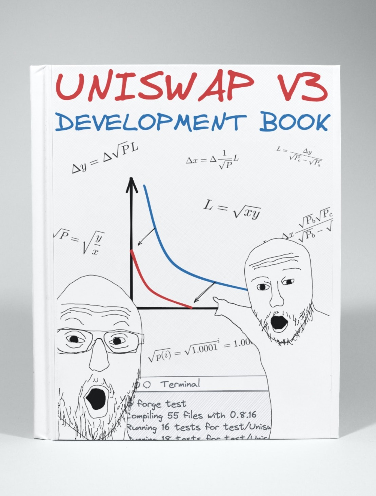
欢迎来到去中心化金融和自动化做市商的世界，本书将成为您在这个神秘而有趣的世界中的向导，我们将一起构建当今去中心化金融中最有趣和最重要的应用之 一 Uniswap V3 !
本书将指导您完成去中心化应用的开发,包括:
本书不适合完全的初学者。
我希望您是一位有经验的开发者,曾用任何编程语言进行过编程。如果您了解Solidity的语法(本书的主要编程语言)那就更好了。如果不了解也没关系:在我们的旅程中,我们会学到很多关于Solidity和以太坊虚拟机的知识。
本书适合区块链初学者。
如果您只是听说过区块链并对其感兴趣，但还没有机会深入了解，那么这本书就是为您准备的！是的，就是为您！您将学习区块链(特别是以太坊)如何工作，如何编写和部署智能合约，以及如何在您的计算机上运行和测试它们。
好了,让我们开始吧!
有用的链接
- 本书英文版可在以下网址获取： https://uniswapv3book.com/
- 本书英文版托管在GitHub上： https://github.com/Jeiwan/uniswapv3-book
- 所有源代码托管在单独的仓库中： https://github.com/Jeiwan/uniswapv3-code
- 如果您认为可以帮助Uniswap，他们有一个资助计划。
- 如果您对DeFi和区块链感兴趣，在Twitter上关注作者。
有任何问题？
每个里程碑在GitHub讨论区都有自己的部分。如果书中有任何不清楚的地方,请随时提问！
完全初学者从哪里开始？
对于了解恒定函数做市商和Uniswap的人来说，这本书会很容易理解。但如果您是去中心化交易所的完全初学者，以下是我建议的开始方式：
- 阅读作者的Uniswap V1系列。它涵盖了Uniswap的基础知识，代码也更简单。如果您有一些Solidity经验，可以跳过代码部分，因为它非常基础。
- 阅读作者的Uniswap V2系列。作者在这里没有深入探讨数学和底层概念,因为它们在V1系列中已经涉及，但V2的代码值得熟悉——它有望教会您一种关于智能合约编程的不同的思维方式(这与我们通常编写程序的方式不同)。
如果数学对于您来讲是一个问题，可以考虑学习Khan Academy的代数1和代数2课程。Uniswap的数学并不难，但它需要基本的代数运算技能。
Uniswap资助计划
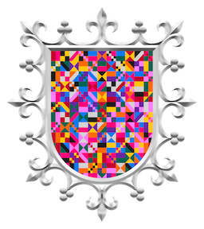
为了写这本书，作者获得了Uniswap Foundation的资助。没有这笔资助,作者可能就没有足够的动力和耐心深入研究Uniswap的最深层次并完成这本书。这笔资助也是本书开源和对任何人免费的主要原因。您可以了解更多关于Uniswap资助计划的信息(也许可以申请！)。
市场介绍
中心化交易所如何运作
在本书中，我们将构建一个在以太坊上运行的去中心化交易所（DEX）。交易所有多种设计模式。其中所有中心化交易所的核心都是一个订单簿。订单簿只是一个存储所有交易者想要进行的买卖订单的记录。其中的每个订单都包含订单必须执行的价格和必须买入或卖出的数量。

要进行交易，必须存在流动性，这简单来说就是市场上资产的可用性。如果你想买一个衣柜但没有人在卖，那就没有流动性。如果你想卖一个衣柜但没有人想买，那就有流动性但没有买家。如果没有流动性，就没有东西可以买卖。
在中心化交易所，订单簿是积累流动性的地方。如果有人下了卖单，他们就为市场提供了流动性。如果有人下了买单，他们期望市场有流动性，否则就无法进行交易。
当没有流动性但市场仍对交易感兴趣时，做市商就会出现。做市商是为市场提供流动性的公司或个人，也就是拥有大量资金并购买不同资产以在交易所出售的人。交易所会为这项工作支付做市商报酬。做市商通过为交易所提供流动性来赚钱。
去中心化交易所如何运作
别感到惊讶，去中心化交易所也需要流动性。它们也需要有人为各种资产的交易者提供流动性。然而，这个过程不能以中心化的方式处理。必须找到一个去中心化的解决方案，有多种去中心化的解决方案，其中一些实施方式不同。我们将重点关注Uniswap如何解决这个问题。
自动做市商
链上市场的演变带来了自动做市商（AMM）的概念。顾名思义，这种算法的工作方式与做市商完全相同，但是以自动化的方式。此外，它是去中心化和无需许可的，也就是说：
- 它不受单一实体管理；
- 所有资产不存储在一个地方；
- 任何人都可以从任何地方使用它。
什么是AMM？
AMM是一组定义如何管理流动性的智能合约。每个交易对（例如ETH/USDC）都是一个单独的合约，存储ETH和USDC，并且处理交易：交换ETH和USDC。
核心理念是pooling：每个合约都是一个存储流动性的pool，允许不同用户（包括其他智能合约）以无需许可的方式进行交易。有两种角色，流动性提供者 和 交易者，这些角色通过流动性池进行交互，他们与pool交互的方式是预先编程且不可变的。

这种方法与中心化交易所的不同之处在于，智能合约是完全自动化的，不受任何人管理。没有管理员、管理者、特权用户等。只有流动性提供者和交易者（他们可以是同一群人），所有算法都是预先编程、不可变且公开的。
现在让我们更仔细地看看Uniswap如何实现AMM。
请注意，在整本书中，我交替使用 pool 和 pair 这两个术语，因为Uniswap流动性池是两个代币的交易对。
如果您有任何问题，欢迎在此里程碑的GitHub讨论区中提出！
恒定函数做市商
本章重述了Uniswap V2的白皮书。理解这些数学原理对构建类似Uniswap的DEX至关重要，但如果你现在不能完全理解也不用担心。
正如我在上一节中提到的，构建AMM有不同的方法。我们将专注构建一种特定类型的AMM——恒定函数做市商。不要被这个长名字吓到！其核心是一个非常简单的数学公式：
就是这样，这就是AMM。
和是pool合约的储备金——它当前持有的代币数量。k是它们的乘积，实际值并不重要。
为什么只有两个储备金额，x和y？
每个Uniswap pool只能持有两种代币。我们使用x和y来指代一个pool的储备，其中x是第一种代币的数量，y是另一种代币的数量，顺序并不重要。
恒定函数公式表明：每次交易后，k必须保持不变。当交易者进行交易时，他们将一定数量的一种代币放入pool中（他们想要出售的代币），并从pool中取出一定数量的另一种代币（他们想要购买的代币）。这改变了pool的储备，而恒定函数公式要求储备的乘积不能改变。正如我们将在本书中多次看到的，这个简单的要求是Uniswap工作原理的核心算法。
交易函数
现在我们知道了什么是流动性池，让我们写出pool中交易发生的公式：
- 有一个流动性池，其中包含一定数量的代币0（）和一定数量的代币1（）
- 当我们用代币0购买代币1时，我们向pool中提供一定数量的代币0（）。
- pool给我们一定数量的代币1作为交换（）。
- pool还从我们提供的代币0数量中收取一小部分费用（）。
- 代币0的储备发生变化（），代币1的储备也发生变化（）。
- 更新后的储备的乘积仍然必须等于。
我们将使用代币0和代币1的表示法来表示这些代币，因为这是它们在代码中的引用方式。在这一点上，哪个是0哪个是1并不重要。
我们基本上是给pool一定数量的代币0，并获得一定数量的代币1。pool的工作是以公平的价格计算并给我们正确数量的代币1。这让我们得出以下结论：pool决定交易价格。
定价
我们如何计算pool中代币的价格？
由于Uniswap pool是独立的智能合约，pool中的代币是相对于彼此定价的。例如：在ETH/USDC pool中，ETH是以USDC定价的，USDC是以ETH定价的。如果1 ETH价值1000 USDC，那么1 USDC价值0.001 ETH。对于任何其他pool来说都是如此，无论是稳定币对还是非稳定币对（例如ETH/BTC）。
在现实世界中，一切都是基于供需法则定价的。这对AMM也同样适用。我们暂时把需求部分放在一边，专注于供给。
pool中代币的价格由代币的供给决定，也就是由pool持有的代币储备量决定。代币价格简单地是储备的比率：
其中和是以另一种代币为单位的代币价格。
这样的价格被称为现货价格，它们只反映当前的市场价格。然而，实际交易的价格是以不同方式计算的。这就是我们需要把需求部分带回来的地方。
从供需法则得出的结论是，高需求会增加价格——这是我们在无许可系统中需要的一个属性。我们希望当需求高时价格也高，我们可以使用pool储备来衡量需求：你想从pool中移除的代币越多（相对于pool的储备），需求的影响就越大。
让我们回到交易公式，仔细看看：
如你所见，我们可以从中推导出和，这意味着我们可以根据输入金额计算交易的输出金额，反之亦然：
事实上，这些公式使我们不必计算价格！我们总是可以使用公式找到输出金额（当我们想卖出已知数量的代币时），我们总是可以使用公式找到输入金额（当我们想买入已知数量的代币时）。注意，这些公式中的每一个都是储备的关系（或），它们还考虑了交易金额（前者中的和后者中的）。这些是同时考虑供给和需求的定价函数。而我们甚至不需要计算价格！
以下是如何从交易函数推导出上述公式： 以及：
曲线
上述计算可能看起来过于抽象和枯燥。让我们将恒定乘积函数可视化，以更好地理解它是如何工作的。
当绘制时，恒定乘积函数是一个二次双曲线：
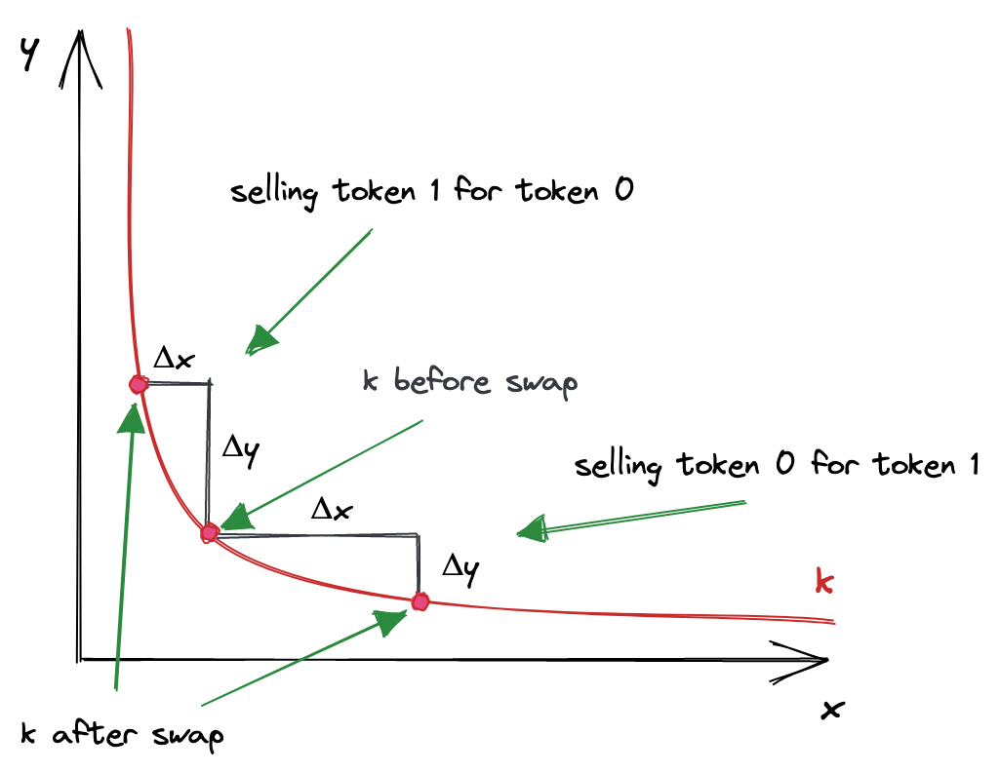
其中轴是pool储备。每次交易都从曲线上对应于当前储备比率的点开始。为了计算输出金额，我们需要在曲线上找到一个新点，该点的坐标为，即代币0的当前储备+我们正在出售的金额。的变化就是我们将获得的代币1的数量。
让我们看一个具体的例子：
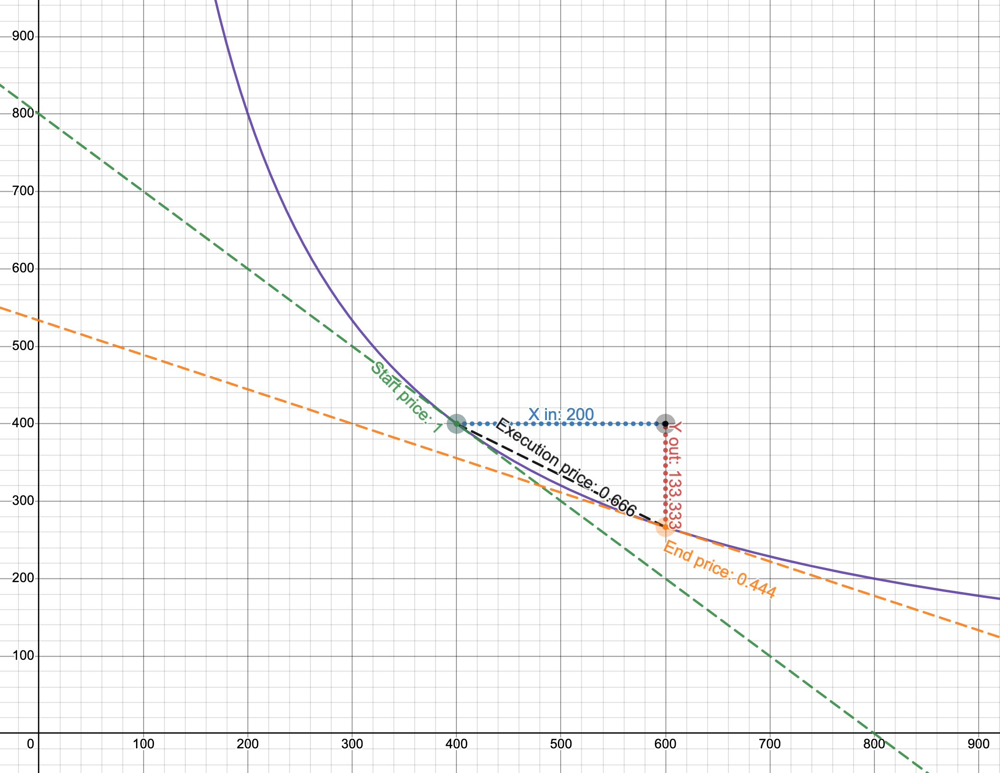
- 紫色线是曲线，轴是pool的储备（注意它们在起始价格时是相等的）。
- 起始价格是1。
- 我们正在出售200个代币0。如果我们只使用起始价格，我们期望得到200个代币1。
- 然而，执行价格是0.666，所以我们只得到133.333个代币1！
这个例子来自Desmos图表，由Uniswap的创造者之一Dan Robinson制作。为了更好地理解它是如何工作的，试着设想不同的场景并在图表上绘制它们。尝试不同的储备，看看当相对于很小时输出金额如何变化。
据传说，Uniswap是在Desmos中发明的。
我打赌你在想为什么要使用这样的曲线。它看起来像是在惩罚你进行大额交易。这是真的，而且这是一个理想的属性！供需法则告诉我们，当需求高（而供给恒定）时，价格也高。当需求低时，价格也较低。这就是市场的运作方式。而神奇的是，恒定乘积函数实现了这种机制！需求由你想要购买的数量定义，供给是pool储备。当你想要购买的数量相对于pool储备较大时，价格比你想要购买较小数量时更高。这么简单的公式保证了如此强大的机制！
尽管Uniswap不计算交易价格，我们仍然可以在曲线上看到它们。令人惊讶的是，在进行交易时有多个价格：
- 交易前，有一个现货价格。它等于储备的比率，或，取决于交易的方向。这个价格也是起始点切线的斜率。
- 交易后，在曲线上的另外一个点上有一个新的现货价格。它是这个新点切线的斜率。
- 交易的实际价格是连接这两点的线的斜率！
这就是Uniswap的全部数学！呼！
好吧，这是Uniswap V2的数学，而我们正在研究Uniswap V3。所以在下一部分，我们将看到Uniswap V3的数学有何不同。
Uniswap V3 简介
本章重述了 Uniswap V3 的白皮书。再次强调，如果你不理解所有概念也没关系。当这些概念转化为代码时，它们会变得更加清晰。
为了更好地理解 Uniswap V3 带来的创新，让我们首先看看 Uniswap V2 的不足之处。
Uniswap V2 是一个实现了单一 AMM 算法的通用交易所。然而，并非所有交易对都是平等的。交易对可以按价格波动性分组：
- 中等和高价格波动性的代币。这个组包括大多数代币，因为大多数代币的价格没有与某物挂钩，容易受到市场波动的影响。
- 低波动性的代币。这个组包括锚定代币，主要是稳定币：USDC/USDT、USDC/DAI、USDT/DAI 等。还包括：ETH/stETH、ETH/rETH（包装 ETH 的变体）。
这些组需要不同的、我们称之为池配置。主要区别在于，锚定代币需要高流动性来减少大额交易的需求效应（我们在上一章中了解到这一点）。无论我们想买卖多少代币，USDC 和 USDT 的价格必须保持接近 1。由于 Uniswap V2 的通用 AMM 算法不太适合稳定币交易，其他 AMM（主要是 Curve）在稳定币交易中更受欢迎。
造成这个问题的原因是 Uniswap V2 池中的流动性是无限分布的——pool流动性允许在任何价格下进行交易，从 0 到无穷大：

这可能看起来不是坏事，但这使得资本效率低下。资产的历史价格通常保持在某个定义的范围内，无论这个范围是窄还是宽。例如，ETH 的历史价格范围是从 4,800（根据 CoinMarketCap）。今天（2022 年 6 月，1 ETH 价值 5000 的价格购买 1 个以太币，所以在这个价格提供流动性是没有意义的。因此，在远离当前价格或永远不会达到的价格范围内提供流动性是没有意义的。
当然，我们都相信 ETH 有朝一日会达到
$10,000，但这是另一个故事了。
集中流动性
Uniswap V3引入了集中流动性：流动性提供者现在可以选择他们想要提供流动性的价格范围。这通过允许在狭窄的价格范围内投入更多流动性来提高资本效率，使Uniswap变得更加多样化：它现在可以为具有不同波动性的交易对配置池。这就是V3如何改进V2的方式。
简而言之，一个Uniswap V3交易对就是许多小的Uniswap V2交易对。V2和V3之间的主要区别在于，在V3中，一个交易对中有多个价格范围。而且这些较短的价格范围每个都有有限的储备。整个从0到无穷的价格范围被分割成较短的价格范围，每个范围都有自己的流动性数量。但是，关键是在那个较短的价格范围内，它的工作方式与Uniswap V2完全相同。这就是为什么我说V3交易对是许多小的V2交易对。
现在，让我们试着将其可视化。我们不希望曲线是无限的，所以在点 a 和 b 处切断它，并将其作为曲线的边界。此外，我们移动曲线使边界落在坐标轴上。这就是我们得到的结果：

看起来有点孤单，不是吗？这就是为什么Uniswap V3中有许多价格范围——这样它们就不会感到孤单了🙂
正如我们在上一章看到的，买入或卖出代币会使价格沿曲线移动。价格范围限制了价格的移动。当价格移动到任一点时，池子变得耗尽：其中一种代币的储备将为0，买入这种代币将不再可能。
在上面的图表中，假设起始价格在曲线的中间。要到达点，我们需要买入所有可用的并在范围内最大化；要到达点，我们需要买入所有可用的并在范围内最大化。在这些点上，范围内只有一种代币！
有趣的事实：这允许使用Uniswap V3价格范围作为限价订单！
当当前价格范围在交易过程中耗尽时会发生什么？价格会滑入下一个价格范围。如果下一个价格范围不存在，交易最终会部分完成——我们将在本书后面看到这是如何工作的。
这就是生产环境中的USDC/ETH池中流动性的分布情况：

你可以看到，在当前价格附近有大量流动性，但离它越远流动性就越少——这是因为流动性提供者努力提高他们的资本效率。此外，整个范围并非无限，其上限在图中显示。
Uniswap V3 的数学原理
从数学角度来看，Uniswap V3 是基于 V2 的：它使用相同的公式，但这些公式被...我们称之为增强了。
为了处理价格范围之间的转换、简化流动性管理并避免舍入误差，Uniswap V3 使用了这些新概念：
是流动性数量。池中的流动性是代币储备的组合（即两个数字）。我们知道它们的乘积是 ，我们可以用这个来推导流动性的度量，即 ——一个与自身相乘等于 的数。 是 和 的几何平均数。
是以代币 1 表示的代币 0 的价格。由于池中代币价格是彼此的倒数，我们可以在计算中只使用其中一个（按惯例，Uniswap V3 使用 ）。以代币 0 表示的代币 1 的价格简单地是 。同样，。
为什么使用 而不是 ？有两个原因：
-
平方根计算不精确并会导致舍入误差。因此，在合约中存储平方根而不进行计算更容易（我们不会在合约中存储 和 ）。
-
与 有一个有趣的联系： 也是输出量变化与 变化之间的关系。
证明：
定价
再次强调，我们不需要计算实际价格——我们可以直接计算输出量。此外，由于我们不打算跟踪和存储 和 ，我们的计算将仅基于 和 。
从上面的公式中，我们可以找到 ：
见上面证明的第三步。
如我们之前讨论的，池中的价格是彼此的倒数。因此， 是：
和 使我们不需要存储和更新池储备。此外，我们不需要每次都计算 ，因为我们总是可以找到 及其倒数。
Ticks
正如我们在本章中了解到的，V2 的无限价格范围在 V3 中被分割成较短的价格范围。这些较短的价格范围中的每一个都由边界限制——上限和下限。为了跟踪这些边界的坐标，Uniswap V3 使用了 ticks。

在 V3 中，整个价格范围由均匀分布的离散 ticks 划分。每个 tick 都有一个索引，对应于某个特定价格：
其中 是 tick 处的价格。取 1.0001 的幂具有一个理想的特性：两个相邻 ticks 之间的差异是 0.01% 或 1 个基点。
基点（1% 的 1/100，或 0.01%，或 0.0001）是金融领域中百分比的度量单位。你可能在中央银行宣布利率变化时听说过基点。
如我们之前讨论的，Uniswap V3 存储 ，而不是 。因此，公式实际上是：
所以，我们得到的值如：，，。
Ticks 是可以为正也可以为负的整数，当然，它们不是无限的。Uniswap V3 将 存储为 Q64.96 定点数，这是一个有理数，使用 64 位表示整数部分，96 位表示小数部分。因此，价格（等于 的平方）在范围 内。而 ticks 在以下范围内：
要深入了解 Uniswap V3 的数学原理，我强烈推荐 Atis Elsts 的 这份技术说明。
开发环境
我们将构建两个应用程序：
- 一个链上应用：部署在以太坊上的一组智能合约。
- 一个链下应用：与智能合约交互的前端应用程序。
虽然前端应用程序的开发是本书的一部分，但它不会是我们的主要焦点。我们构建它仅仅是为了演示如何将智能合约与前端应用程序集成。因此，前端应用程序是可选的，但我仍会提供代码。
以太坊简介
以太坊是一个允许任何人在其上运行应用程序的区块链。它可能看起来像一个云服务提供商，但有几个不同之处：
- 你不需要为托管应用程序付费，但你需要为部署付费。
- 你的应用程序是不可变的。也就是说：部署后你将无法修改它。
- 用户将为使用你的应用程序付费。
为了更好地理解这些要点，让我们看看以太坊由什么组成。
以太坊（和任何其他区块链）的核心是一个数据库。以太坊数据库中最有价值的数据是账户状态。账户是一个以太坊地址，与之相关的数据包括：
- 余额：账户的以太币余额。
- 代码：部署在此地址的智能合约的字节码。
- 存储：智能合约用来存储数据的空间。
- Nonce：用于防止重放攻击的序列整数。
以太坊的主要工作是以安全的方式构建和维护这些数据，不允许未经授权的访问。
以太坊也是一个网络，一个独立构建和维护状态的计算机网络。网络的主要目标是去中心化数据库访问：不能有单一权威可以单方面修改数据库中的任何内容。这是通过共识实现的，共识是网络中所有节点遵循的一组规则。如果一方决定滥用规则，它将被排除在网络之外。
有趣的事实：区块链可以使用 MySQL！除了性能之外，没有什么能阻止这一点。而以太坊使用 LevelDB，一个快速的键值数据库。
每个以太坊节点还运行 EVM，即以太坊虚拟机。虚拟机是一个可以运行其他程序的程序，而 EVM 是一个执行智能合约的程序。用户通过交易与合约交互：除了简单地发送以太币外，交易还可以包含智能合约调用数据。它包括：
- 编码的合约函数名。
- 函数参数。
交易被打包成区块，然后由矿工挖掘区块。网络中的每个参与者都可以验证任何交易和任何区块。
从某种意义上说，智能合约类似于 JSON API，但你调用的是智能合约函数而不是端点，并提供函数参数。与 API 后端类似，智能合约执行编程逻辑，可以选择修改智能合约存储。与 JSON API 不同，你需要发送交易来改变区块链状态，并且你需要为发送的每个交易付费。
最后，以太坊节点暴露了一个 JSON-RPC API。通过这个 API，我们可以与节点交互：获取账户余额、估算 gas 成本、获取区块和交易、发送交易，以及执行合约调用而不发送交易（这用于从智能合约读取数据）。这里你可以找到可用端点的完整列表。
交易也是通过 JSON-RPC API 发送的，参见 eth_sendTransaction。
本地开发环境
目前使用的智能合约开发环境有多种：
Truffle 是三者中最古老的，也是最不受欢迎的。Hardhat 是它改进后的后代，是最广泛使用的工具。Foundry 是新秀，它对测试提供了不同的视角。
虽然 HardHat 仍然是一个流行的解决方案，但越来越多的项目正在转向 Foundry。这有多个原因：
- 使用 Foundry，我们可以用 Solidity 编写测试。这更加方便，因为在开发过程中我们不需要在 JavaScript（Truffle 和 HardHat 使用 JS 进行测试和自动化）和 Solidity 之间切换。用 Solidity 编写测试更加方便，因为你拥有所有的原生功能（例如，你不需要为大数使用特殊类型，也不需要在字符串和 BigNumber 之间转换）。
- Foundry 在测试期间不运行节点。这使得测试和迭代功能更快！Truffle 和 HardHat 在运行测试时都会启动一个节点；Foundry 在内部 EVM 上执行测试。
考虑到这些因素，我们将使用 Foundry 作为我们主要的智能合约开发和测试工具。
Foundry
Foundry 是一套用于以太坊应用程序开发的工具。具体来说，我们将使用：
- Forge，一个 Solidity 测试框架。
- Anvil，一个为与 Forge 开发而设计的本地以太坊节点。我们将使用它来将我们的合约部署到本地节点，并通过前端应用程序连接到它。
- Cast，一个具有大量有用功能的 CLI 工具。
Forge 让智能合约开发者的生活变得更加轻松。使用 Forge，我们不需要运行本地节点来测试合约。相反，Forge 在其内部 EVM 上运行测试，这更快，不需要发送交易和挖掘区块。
Forge 让我们可以用 Solidity 编写测试！Forge 还使模拟区块链状态变得更容易：我们可以轻松地伪造我们的以太币或代币余额，从其他地址执行合约，在任何地址部署任何合约等。
然而，我们仍然需要一个本地节点来部署我们的合约。为此，我们将使用 Anvil。前端应用程序使用 JavaScript Web3 库与以太坊节点交互（发送交易、查询状态、估算交易 gas 成本等）——这就是为什么我们需要运行一个本地节点。
Ethers.js
Ethers.js 是一套用 JavaScript 编写的以太坊实用工具。这是去中心化应用程序开发中使用的两个最流行的 JavaScript 库之一（另一个是 web3.js）。这些库允许我们通过 JSON-API 与以太坊节点交互，并提供多个实用函数，使开发者的生活更轻松。
MetaMask
MetaMask 是你浏览器中的以太坊钱包。它是一个浏览器扩展，可以创建和安全存储私钥。MetaMask 是数百万用户使用的主要以太坊钱包应用程序。我们将使用它来签署我们将发送到本地节点的交易。
React
React 是一个著名的用于构建前端应用程序的 JavaScript 库。你不需要了解 React，我会提供一个模板应用程序。
设置项目
要设置项目，创建一个新文件夹并在其中运行 forge init：
$ mkdir uniswapv3clone
$ cd uniswapv3clone
$ forge init
如果你使用的是 Visual Studio Code，在 forge init 中添加
--vscode标志：forge init --vscode。Forge 将使用 VSCode 特定的设置初始化项目。
Forge 将在 src、test 和 script 文件夹中创建示例合约——这些可以删除。
要设置前端应用程序：
$ npx create-react-app ui
它位于一个子文件夹中，这样就不会与文件夹名称发生冲突。
我们将构建什么
本书的目标是构建一个 Uniswap V3 的克隆版。然而，我们不会构建一个完全相同的副本。主要原因是 Uniswap 是一个包含许多细节和辅助机制的大型项目——详细解释所有这些内容会使本书内容过于庞大，并使读者更难完成阅读。相反，我们将构建 Uniswap 的核心，即其最困难和最重要的机制。这包括流动性管理、交换、费用、外围合约、报价合约和 NFT 合约。之后，我相信你将能够阅读 Uniswap V3 的源代码，并理解本书范围之外的所有机制。
智能合约
完成本书后，你将实现以下合约：
UniswapV3Pool——实现流动性管理和交换的核心池合约。这个合约非常接近原始合约，但是一些实现细节不同，为了简化也省略了一些内容。例如，我们的实现将只处理"精确输入"交换，即已知输入金额的交换。原始实现还支持已知输出金额的交换（即当你想购买特定数量的代币时）。UniswapV3Factory——部署新池并保存所有已部署池记录的注册合约。除了更改所有者和费用的能力外，这个合约与原始合约基本相同。UniswapV3Manager——一个使与池合约交互更容易的外围合约。这是SwapRouter的一个非常简化的实现。同样，如你所见，我不区分"精确输入"和"精确输出"交换，只实现前者。UniswapV3Quoter是一个很酷的合约，允许在链上计算交换价格。这是 Quoter 和 QuoterV2 的最小化复制版。再次强调，只支持"精确输入"交换。UniswapV3NFTManager允许将流动性头寸转换为 NFT。这是 NonfungiblePositionManager 的简化实现。
前端应用程序
对于本书，我还构建了一个简化版的 Uniswap UI 克隆。这是一个非常简单的克隆版，而且我的 React 和前端技能非常有限，但它展示了前端应用程序如何使用 Ethers.js 和 MetaMask 与智能合约交互。
介绍
在这个里程碑中，我们将构建一个池子合约，它可以从用户那里接收流动性，并在一个价格范围内进行交换。为了尽可能保持简单，我们将只在一个价格范围内提供流动性，并且只允许在一个方向上进行交换。此外，我们将手动计算所有必需的数学计算，以在开始使用 Solidity 中的数学库之前获得更好的直觉。
让我们模拟我们将要构建的情况：
-
将会有一个 ETH/USDC 池子合约。ETH 将是 \(x\) 储备，USDC 将是 \(y\) 储备。
-
我们将把当前价格设置为 1 ETH 兑换 5000 USDC。
-
我们将提供流动性的范围是 1 ETH 兑换 4545-5500 USDC。
-
我们将从池子中购买一些 ETH。在这一点上，由于我们只有一个价格范围，我们希望交易的价格保持在价格范围内。
视觉上，这个模型看起来像这样：

在开始编码之前，让我们弄清楚数学并计算模型的所有参数。为了保持简单，我将在 Python 中进行数学计算，然后再在 Solidity 中实现它们。这将允许我们专注于数学，而不用深入研究 Solidity 中的数学细节。这也意味着，在智能合约中，我们将硬编码所有的金额。这将允许我们从一个简单的最小可行产品开始。
为了方便起见，我把所有的 Python 计算放在了 unimath.py 中。
你可以在 这个 Github 分支 中找到这个里程碑的完整代码。
如果你有任何问题，欢迎在 这个里程碑的 GitHub 讨论 中提出！
计算流动性
没有流动性就无法进行交易，为了进行我们的第一次交换，我们需要向池合约中注入一些流动性。以下是我们需要知道的向池合约添加流动性的信息：
-
价格范围。作为流动性提供者，我们希望在特定的价格范围内提供流动性，它只会在这个范围内使用。
-
流动性数量，即两种代币的数量。我们需要将这些数量的代币转移到池合约中。
在这里，我们将手动计算这些，但在后面的章节中，合约将为我们完成这项工作。让我们从价格范围开始。
价格范围计算
回想一下，在Uniswap V3中，整个价格范围被划分为刻度：每个刻度对应一个价格并有一个索引。在我们的第一个池实现中，我们将以每1 ETH 5000美元的价格用USDC购买ETH。购买ETH将从池中移除一定数量的ETH，并将价格略微推高到5000美元以上。我们希望在包含这个价格的范围内提供流动性。并且我们希望确保最终价格保持在这个范围内（我们将在后面的里程碑中进行多范围交换）。
我们需要找到三个刻度：
-
当前刻度将对应当前价格（1 ETH = 5000 USDC）。
-
我们提供流动性的价格范围的上下界。让下限价格为4545美元，上限价格为5500美元。
从理论介绍中，我们知道：
由于我们同意使用ETH作为储备，USDC作为储备，每个刻度的价格为：
其中是当前价格，是范围的下限，是范围的上限。
现在，我们可以找到对应的刻度。我们知道价格和刻度通过以下公式相连：
因此，我们可以通过以下方式找到刻度：
这个公式中的平方根相互抵消，但由于我们使用工作，我们需要保留它们。
让我们找到这些刻度：
-
当前刻度：
-
下限刻度：
-
上限刻度：
为了计算这些，我使用了Python：
import math def price_to_tick(p): return math.floor(math.log(p, 1.0001)) price_to_tick(5000) > 85176
这就是价格范围计算的全部内容！
这里需要注意的最后一点是，Uniswap使用Q64.96数字来存储。这是一个定点数，整数部分有64位，小数部分有96位。在我们上面的计算中，价格是浮点数：70.71、67.42和74.16。我们需要将它们转换为Q64.96。幸运的是，这很简单：我们需要将这些数字乘以（Q数是二进制定点数，所以我们需要将我们的小数乘以Q64.96的基数，即）。我们将得到：
在Python中：
q96 = 2**96 def price_to_sqrtp(p): return int(math.sqrt(p) * q96) price_to_sqrtp(5000) > 5602277097478614198912276234240
注意我们在转换为整数之前进行乘法。否则，我们将失去精度。
代币数量计算
下一步是决定我们想要存入池中的代币数量。答案是我们想要多少就多少。这些数量并没有严格定义，我们可以存入足够的数量，以便在不使当前价格离开我们投入流动性的价格范围的情况下购买少量ETH。在开发和测试过程中，我们将能够铸造任何数量的代币，所以获得我们想要的数量不是问题。
对于我们的第一次交换，让我们存入1 ETH和5000 USDC。
请记住，当前池储备的比例表示当前现货价格。因此，如果我们想向池中投入更多代币并保持相同的价格，数量必须成比例，例如：2 ETH和10,000 USDC；10 ETH和50,000 USDC等。
流动性数量计算
接下来，我们需要根据我们将存入的数量计算。这是一个棘手的部分，所以请仔细听！
从理论介绍中，你记得：
然而，这个公式是针对无限曲线的🙂 但我们想要将流动性投入到有限的价格范围内，这只是那个无限曲线的一个片段。我们需要专门为我们要存入流动性的价格范围计算。我们需要一些更高级的计算。
为了计算价格范围的，让我们看一个我们之前讨论过的有趣事实：价格范围可能会耗尽。可以从价格范围中买走一种代币的全部数量，使池中只剩下另一种代币。

在点和，范围内只有一种代币：在点处是ETH，在点处是USDC。
也就是说，我们想找到一个，使价格能够移动到任一点。我们希望有足够的流动性让价格达到价格范围的任一边界。因此，我们希望基于和的最大数量来计算。
现在，让我们看看边缘处的价格是多少。当从池中买入ETH时，价格上涨；当买入USDC时，价格下跌。回想一下，价格是。所以，在点，价格是范围内的最低点；在点，价格是最高点。
实际上，在这些点上价格并没有定义，因为池中只有一种储备，但我们需要理解的是，点附近的价格高于起始价格，而点处的价格低于起始价格。
现在，将上图中的曲线分成两段：一段在起始点的左侧，一段在起始点的右侧。我们将计算两个，每段一个。为什么？因为池中的两种代币各自贡献了其中一段：左段完全由代币组成，右段完全由代币组成。这源于在交换过程中，价格向任一方向移动的事实：它要么上涨，要么下跌。为了使价格移动，只需要其中一种代币：
-
当价格上涨时，只需要代币进行交换（我们正在买入代币，所以我们只想从池中取出代币）；
-
当价格下跌时，只需要代币进行交换。
因此，当前价格左侧曲线段的流动性仅由代币组成，并且仅根据提供的代币数量计算。同样，当前价格右侧曲线段的流动性仅由代币组成，并且仅根据提供的代币数量计算。

这就是为什么在提供流动性时，我们计算两个并选择其中一个。选择哪一个？较小的那个。为什么？因为较大的那个已经包含了较小的那个！我们希望新的流动性均匀分布在曲线上，因此我们希望在当前价格的左右两侧添加相同的。如果我们选择较大的那个，用户需要提供更多的流动性来补偿较小的那个的不足。当然，这是可行的，但这会使智能合约变得更复杂。
较大的的剩余部分会怎样？嗯，什么都不会发生。在选择较小的之后，我们可以简单地将其转换为导致较大的代币的较小数量——这将调整它。之后，我们将得到能产生相同的代币数量。
这里我需要你注意的最后一个细节是：新的流动性不能改变当前价格。也就是说，它必须与当前储备的比例成比例。这就是为什么两个可能不同——当比例没有保持时。我们选择较小的来重新建立比例。
我希望在我们用代码实现这个之后，这会更有意义！现在，让我们看看公式。
让我们回顾一下和是如何计算的：
我们可以通过用实际价格替换delta P来扩展这些公式（我们从上面知道它们）：
是点处的价格，是点处的价格，是当前价格（见上图）。注意，由于价格计算为（即它是以表示的的价格），点处的价格高于当前价格和点处的价格。点处的价格是三者中最低的。
让我们从第一个公式中找到：
从第二个公式：
所以，这就是我们的两个，每个段一个：
现在，让我们将我们之前计算的价格代入它们：
转换为Q64.96后，我们得到：
对于另一个：
在这两个中，我们将选择较小的那个。
在Python中：
sqrtp_low = price_to_sqrtp(4545) sqrtp_cur = price_to_sqrtp(5000) sqrtp_upp = price_to_sqrtp(5500) def liquidity0(amount, pa, pb): if pa > pb: pa, pb = pb, pa return (amount * (pa * pb) / q96) / (pb - pa) def liquidity1(amount, pa, pb): if pa > pb: pa, pb = pb, pa return amount * q96 / (pb - pa) eth = 10**18 amount_eth = 1 * eth amount_usdc = 5000 * eth liq0 = liquidity0(amount_eth, sqrtp_cur, sqrtp_upp) liq1 = liquidity1(amount_usdc, sqrtp_cur, sqrtp_low) liq = int(min(liq0, liq1)) > 1517882343751509868544
再次计算代币数量
由于我们选择了要存入的数量，这些数量可能是错误的。我们不能在任何价格范围内存入任何数量；流动性数量需要均匀分布在我们存入的价格范围的曲线上。因此，即使用户选择了数量，合约也需要重新计算它们，实际数量会略有不同（至少是因为四舍五入）。
幸运的是，我们已经知道公式：
在Python中：
def calc_amount0(liq, pa, pb): if pa > pb: pa, pb = pb, pa return int(liq * q96 * (pb - pa) / pa / pb) def calc_amount1(liq, pa, pb): if pa > pb: pa, pb = pb, pa return int(liq * (pb - pa) / q96) amount0 = calc_amount0(liq, sqrtp_upp, sqrtp_cur) amount1 = calc_amount1(liq, sqrtp_low, sqrtp_cur) (amount0, amount1) > (998976618347425408, 5000000000000000000000)
如你所见，这些数字接近我们想要提供的数量，但ETH略小。
提示：使用
cast --from-wei AMOUNT将wei转换为ether，例如：cast --from-wei 998976618347425280将给你0.998976618347425280。
提供流动性
理论已经够多了，让我们开始编码吧！
创建一个新文件夹（我的叫做 uniswapv3-code），然后在其中运行 forge init --vscode —— 这将初始化一个 Forge 项目。--vscode 标志告诉 Forge 为 Forge 项目配置 Solidity 扩展。
接下来，删除默认的合约及其测试：
script/Contract.s.solsrc/Contract.soltest/Contract.t.sol
就是这样！让我们创建我们的第一个合约！
池子合约
正如你在介绍中了解到的，Uniswap 部署了多个池子合约，每个合约都是一对代币的交换市场。Uniswap 将其所有合约分为两类：
- 核心合约，
- 和外围合约。
核心合约，顾名思义，是实现核心逻辑的合约。这些是最小的、用户不友好的、低级别的合约。它们的目的是做一件事，并尽可能可靠和安全地做到这一点。在 Uniswap V3 中，有 2 个这样的合约：
- 池子合约，实现去中心化交易所的核心逻辑。
- 工厂合约，作为池子合约的注册表，并使池子的部署更容易。
我们将从池子合约开始，它实现了 Uniswap 99% 的核心功能。
创建 src/UniswapV3Pool.sol：
pragma solidity ^0.8.14;
contract UniswapV3Pool {}
让我们思考一下合约将存储哪些数据：
由于每个池子合约都是两个代币的交换市场，我们需要跟踪这两个代币地址。这些地址将是静态的，在池子部署期间一次性设置（因此，它们将是不可变的）。
每个池子合约都是一组流动性头寸。我们将它们存储在一个映射中，其中键是唯一的头寸标识符，值是存储头寸信息的结构体。
每个池子合约还需要维护一个 tick 注册表 —— 这将是一个映射，其中键是 tick 索引，值是存储 tick 信息的结构体。
由于 tick 范围是有限的，我们需要在合约中将限制存储为常量。
回想一下，池子合约存储流动性数量 。所以我们需要为它设置一个变量。
最后，我们需要跟踪当前价格和相关的 tick。我们将它们存储在一个存储槽中以优化 gas 消耗：这些变量经常一起读取和写入，所以利用 Solidity 的状态变量打包特性 是有意义的。
总的来说，这是我们开始的内容：
// src/lib/Tick.sol
library Tick {
struct Info {
bool initialized;
uint128 liquidity;
}
...
}
// src/lib/Position.sol
library Position {
struct Info {
uint128 liquidity;
}
...
}
// src/UniswapV3Pool.sol
contract UniswapV3Pool {
using Tick for mapping(int24 => Tick.Info);
using Position for mapping(bytes32 => Position.Info);
using Position for Position.Info;
int24 internal constant MIN_TICK = -887272;
int24 internal constant MAX_TICK = -MIN_TICK;
// 池子代币，不可变
address public immutable token0;
address public immutable token1;
// 打包一起读取的变量
struct Slot0 {
// 当前 sqrt(P)
uint160 sqrtPriceX96;
// 当前 tick
int24 tick;
}
Slot0 public slot0;
// 流动性数量，L。
uint128 public liquidity;
// Ticks 信息
mapping(int24 => Tick.Info) public ticks;
// 头寸信息
mapping(bytes32 => Position.Info) public positions;
...
Uniswap V3 使用了许多辅助合约，Tick 和 Position 是其中的两个。using A for B 是 Solidity 的一个特性，它允许你用库合约 A 中的函数扩展类型 B。这简化了复杂数据结构的管理。
为了简洁，我将省略对 Solidity 语法和特性的详细解释。Solidity 有 很好的文档，如果有不清楚的地方，不要犹豫查阅它！
然后我们将在构造函数中初始化一些变量：
constructor(
address token0_,
address token1_,
uint160 sqrtPriceX96,
int24 tick
) {
token0 = token0_;
token1 = token1_;
slot0 = Slot0({sqrtPriceX96: sqrtPriceX96, tick: tick});
}
}
在这里，我们设置了代币地址不可变量，并设置了当前价格和 tick —— 我们不需要为后者提供流动性。
这是我们的起点，我们在本章的目标是使用预先计算和硬编码的值进行我们的第一次交换。
铸造
在 Uniswap V2 中，提供流动性的过程被称为铸造。原因是 V2 池子合约会铸造代币（LP-代币）以换取流动性。V3 不这样做，但它仍然使用相同的名称来命名函数。让我们也使用它：
function mint(
address owner,
int24 lowerTick,
int24 upperTick,
uint128 amount
) external returns (uint256 amount0, uint256 amount1) {
...
我们的 mint 函数将接受：
所有者地址，用于跟踪流动性的所有者。 上限和下限 tick，用于设置价格范围的边界。 我们想要提供的流动性数量。 注意，用户指定的是 ，而不是实际的代币数量。这当然不是很方便，但请记住，Pool 合约是一个核心合约——它不打算对用户友好，因为它应该只实现核心逻辑。在后面的章节中，我们将制作一个辅助合约，在调用 Pool.mint 之前将代币数量转换为 。
让我们简要概述一下铸造的工作方式：
用户指定一个价格范围和流动性数量； 合约更新 ticks 和 positions 映射； 合约计算用户必须发送的代币数量（我们将预先计算并硬编码它们）； 合约从用户那里获取代币并验证是否设置了正确的数量。 让我们从检查 ticks 开始：
if (
lowerTick >= upperTick ||
lowerTick < MIN_TICK ||
upperTick > MAX_TICK
) revert InvalidTickRange();
并确保提供了一些流动性数量：
if (amount == 0) revert ZeroLiquidity();
然后，添加一个 tick 和一个头寸：
ticks.update(lowerTick, amount);
ticks.update(upperTick, amount);
Position.Info storage position = positions.get(
owner,
lowerTick,
upperTick
);
position.update(amount);
ticks.update 函数是：
// src/lib/Tick.sol
function update(
mapping(int24 => Tick.Info) storage self,
int24 tick,
uint128 liquidityDelta
) internal {
Tick.Info storage tickInfo = self[tick];
uint128 liquidityBefore = tickInfo.liquidity;
uint128 liquidityAfter = liquidityBefore + liquidityDelta;
if (liquidityBefore == 0) {
tickInfo.initialized = true;
}
tickInfo.liquidity = liquidityAfter;
}
如果 tick 的流动性为 0，它会初始化该 tick，并向其添加新的流动性。如你所见，我们在上下限 tick 上都调用了这个函数，因此流动性被添加到两者中。
position.update 函数是：
// src/libs/Position.sol
function update(Info storage self, uint128 liquidityDelta) internal {
uint128 liquidityBefore = self.liquidity;
uint128 liquidityAfter = liquidityBefore + liquidityDelta;
self.liquidity = liquidityAfter;
}
类似于 tick 更新函数，它向特定头寸添加流动性。要获取头寸，我们调用：
// src/libs/Position.sol
...
function get(
mapping(bytes32 => Info) storage self,
address owner,
int24 lowerTick,
int24 upperTick
) internal view returns (Position.Info storage position) {
position = self[
keccak256(abi.encodePacked(owner, lowerTick, upperTick))
];
}
...
每个头寸都由三个键唯一标识：所有者地址、下限 tick 索引和上限 tick 索引。我们对这三个进行哈希处理以使数据存储更便宜：当哈希处理后，每个键将占用 32 字节，而不是当 owner、lowerTick 和 upperTick 是单独的键时占用 96 字节。
如果我们使用三个键，我们需要三个映射。每个键将单独存储，并且会占用 32 字节，因为 Solidity 将值存储在 32 字节的槽中（当不应用打包时）。
接下来，继续铸造，我们需要计算用户必须存入的数量。幸运的是，我们已经在前面的部分中弄清楚了公式并计算了确切的数量。所以，我们将硬编码它们：
amount0 = 0.998976618347425280 ether;
amount1 = 5000 ether;
我们将在后面的章节中用实际计算替换这些。
我们还将根据添加的 amount 更新池子的 liquidity。
liquidity += uint128(amount);
铸造
在 Uniswap V2 中，提供流动性的过程被称为铸造。原因是 V2 池子合约会铸造代币（LP-代币）以换取流动性。V3 不这样做，但它仍然使用相同的名称来命名函数。让我们也使用它：
function mint(
address owner,
int24 lowerTick,
int24 upperTick,
uint128 amount
) external returns (uint256 amount0, uint256 amount1) {
...
我们的 mint 函数将接受：
所有者地址，用于跟踪流动性的所有者。 上限和下限 tick，用于设置价格范围的边界。 我们想要提供的流动性数量。 注意，用户指定的是 ，而不是实际的代币数量。这当然不是很方便，但请记住，Pool 合约是一个核心合约——它不打算对用户友好，因为它应该只实现核心逻辑。在后面的章节中，我们将制作一个辅助合约，在调用 Pool.mint 之前将代币数量转换为 。
让我们简要概述一下铸造的工作方式：
用户指定一个价格范围和流动性数量； 合约更新 ticks 和 positions 映射； 合约计算用户必须发送的代币数量（我们将预先计算并硬编码它们）； 合约从用户那里获取代币并验证是否设置了正确的数量。 让我们从检查 ticks 开始：
if (
lowerTick >= upperTick ||
lowerTick < MIN_TICK ||
upperTick > MAX_TICK
) revert InvalidTickRange();
并确保提供了一些流动性数量：
if (amount == 0) revert ZeroLiquidity();
然后，添加一个 tick 和一个头寸：
ticks.update(lowerTick, amount);
ticks.update(upperTick, amount);
Position.Info storage position = positions.get(
owner,
lowerTick,
upperTick
);
position.update(amount);
ticks.update 函数是：
// src/lib/Tick.sol
function update(
mapping(int24 => Tick.Info) storage self,
int24 tick,
uint128 liquidityDelta
) internal {
Tick.Info storage tickInfo = self[tick];
uint128 liquidityBefore = tickInfo.liquidity;
uint128 liquidityAfter = liquidityBefore + liquidityDelta;
if (liquidityBefore == 0) {
tickInfo.initialized = true;
}
tickInfo.liquidity = liquidityAfter;
}
如果 tick 的流动性为 0，它会初始化该 tick，并向其添加新的流动性。如你所见，我们在上下限 tick 上都调用了这个函数，因此流动性被添加到两者中。
position.update 函数是：
// src/libs/Position.sol
function update(Info storage self, uint128 liquidityDelta) internal {
uint128 liquidityBefore = self.liquidity;
uint128 liquidityAfter = liquidityBefore + liquidityDelta;
self.liquidity = liquidityAfter;
}
类似于 tick 更新函数，它向特定头寸添加流动性。要获取头寸，我们调用：
// src/libs/Position.sol
...
function get(
mapping(bytes32 => Info) storage self,
address owner,
int24 lowerTick,
int24 upperTick
) internal view returns (Position.Info storage position) {
position = self[
keccak256(abi.encodePacked(owner, lowerTick, upperTick))
];
}
...
每个头寸都由三个键唯一标识：所有者地址、下限 tick 索引和上限 tick 索引。我们对这三个进行哈希处理以使数据存储更便宜：当哈希处理后，每个键将占用 32 字节，而不是当 owner、lowerTick 和 upperTick 是单独的键时占用 96 字节。
如果我们使用三个键，我们需要三个映射。每个键将单独存储，并且会占用 32 字节，因为 Solidity 将值存储在 32 字节的槽中（当不应用打包时）。
接下来，继续铸造，我们需要计算用户必须存入的数量。幸运的是，我们已经在前面的部分中弄清楚了公式并计算了确确切的数量。所以，我们将硬编码它们：
amount0 = 0.998976618347425280 ether;
amount1 = 5000 ether;
我们将在后面的章节中用实际计算替换这些。
我们还将根据添加的 amount 更新池子的 liquidity。
liquidity += uint128(amount);
现在，我们准备从用户那里获取代币。这是通过回调完成的：
function mint(...) ... {
...
uint256 balance0Before;
uint256 balance1Before;
if (amount0 > 0) balance0Before = balance0();
if (amount1 > 0) balance1Before = balance1();
IUniswapV3MintCallback(msg.sender).uniswapV3MintCallback(
amount0,
amount1
);
if (amount0 > 0 && balance0Before + amount0 > balance0())
revert InsufficientInputAmount();
if (amount1 > 0 && balance1Before + amount1 > balance1())
revert InsufficientInputAmount();
...
}
function balance0() internal returns (uint256 balance) {
balance = IERC20(token0).balanceOf(address(this));
}
function balance1() internal returns (uint256 balance) {
balance = IERC20(token1).balanceOf(address(this));
}
首先，我们记录当前的代币余额。然后我们在调用者上调用 uniswapV3MintCallback 方法——这就是回调。预期调用者（无论谁调用 mint）是一个合约，因为在以太坊中非合约地址无法实现函数。在这里使用回调，虽然完全不友好，但让合约能够使用其当前状态计算代币数量——这是至关重要的，因为我们不能信任用户。
预期调用者实现 uniswapV3MintCallback 并在此函数中将代币转移到 Pool 合约。调用回调函数后，我们继续检查 Pool 合约余额是否发生变化：我们要求它们分别至少增加 amount0 和 amount1 ——这意味着调用者已将代币转移到池子。
最后，我们触发一个 Mint 事件：
emit Mint(msg.sender, owner, lowerTick, upperTick, amount, amount0, amount1);
事件是以太坊中如何索引合约数据以供后续搜索的方式。每当合约状态发生变化时触发事件是一个好习惯，让区块链浏览器知道这何时发生。事件还携带有用信息。在我们的情况下，它是调用者的地址、流动性头寸所有者的地址、上下限 tick、新的流动性和代币数量。这些信息将作为日志存储，其他人将能够收集所有合约事件并重现合约的活动，而无需遍历和分析所有区块和交易。
我们完成了！呼！现在，让我们测试铸造。
测试
在这一点上，我们不知道一切是否正常工作。在将我们的合约部署到任何地方之前，我们将编写一系列测试以确保合约正常工作。幸运的是，Forge 是一个很棒的测试框架，它将使测试变得轻而易举。
创建一个新的测试文件：
// test/UniswapV3Pool.t.sol
// SPDX-License-Identifier: UNLICENSED
pragma solidity ^0.8.14;
import "forge-std/Test.sol";
contract UniswapV3PoolTest is Test {
function setUp() public {}
function testExample() public {
assertTrue(true);
}
}
让我们运行它：
$ forge test
Running 1 test for test/UniswapV3Pool.t.sol:UniswapV3PoolTest
[PASS] testExample() (gas: 279)
Test result: ok. 1 passed; 0 failed; finished in 5.07ms
它通过了！当然，它会通过！到目前为止，我们的测试只检查 true 是否为 true！
测试合约只是继承自 forge-std/Test.sol 的合约。这个合约是一组测试工具，我们将逐步熟悉它们。如果你不想等待，打开 lib/forge-std/src/Test.sol 并浏览一下。
测试合约遵循特定的约定：
setUp 函数用于设置测试用例。在每个测试用例中，我们希望有一个配置好的环境，比如部署的合约、铸造的代币和初始化的池子——我们将在 setUp 中完成所有这些。
每个测试用例都以 test 前缀开始，例如 testMint()。这将让 Forge 区分测试用例和辅助函数（我们也可以有任何我们想要的函数）。
现在让我们实际测试铸造。
测试代币 要测试铸造，我们需要代币。这不是问题，因为我们可以在测试中部署任何合约！此外，Forge 可以将开源合约安装为依赖项。具体来说，我们需要一个具有铸造功能的 ERC20 合约。我们将使用 Solmate（一个气体优化合约集合）中的 ERC20 合约，并制作一个继承自 Solmate 合约并公开铸造功能的 ERC20 合约（默认情况下是公开的）。
让我们安装 solmate：
$ forge install rari-capital/solmate
然后，让我们在 test 文件夹中创建 ERC20Mintable.sol 合约（我们只会在测试中使用这个合约）：
// SPDX-License-Identifier: UNLICENSED
pragma solidity ^0.8.14;
import "solmate/tokens/ERC20.sol";
contract ERC20Mintable is ERC20 {
constructor(
string memory _name,
string memory _symbol,
uint8 _decimals
) ERC20(_name, _symbol, _decimals) {}
function mint(address to, uint256 amount) public {
_mint(to, amount);
}
}
我们的 ERC20Mintable 继承了 solmate/tokens/ERC20.sol 的所有功能，我们额外实现了公共的 mint 方法，这将允许我们铸造任意数量的代币。
铸造
现在，我们准备测试铸造。
首先，让我们部署所有必需的合约：
// test/UniswapV3Pool.t.sol
...
import "./ERC20Mintable.sol";
import "../src/UniswapV3Pool.sol";
contract UniswapV3PoolTest is Test {
ERC20Mintable token0;
ERC20Mintable token1;
UniswapV3Pool pool;
function setUp() public {
token0 = new ERC20Mintable("Ether", "ETH", 18);
token1 = new ERC20Mintable("USDC", "USDC", 18);
}
...
在 setUp 函数中，我们部署代币但不部署池子！这是因为我们所有的测试用例都将使用相同的代币，但每个测试用例都将有一个唯一的池子。
为了使池子的设置更清晰和简单，我们将在一个单独的函数 setupTestCase 中完成这个操作，该函数接受一组测试用例参数。在我们的第一个测试用例中，我们将测试成功的流动性铸造。以下是测试用例参数的样子：
function testMintSuccess() public {
TestCaseParams memory params = TestCaseParams({
wethBalance: 1 ether,
usdcBalance: 5000 ether,
currentTick: 85176,
lowerTick: 84222,
upperTick: 86129,
liquidity: 1517882343751509868544,
currentSqrtP: 5602277097478614198912276234240,
shouldTransferInCallback: true,
mintLiqudity: true
});
- 我们计划向池子存入 1 ETH 和 5000 USDC。
- 我们希望当前 tick 为 85176，下限和上限 tick 分别为 84222 和 86129（我们在上一章中计算了这些值）。
- 我们指定了预先计算的流动性和当前的 。
- 我们还希望存入流动性（mintLiquidity 参数）并在池子合约请求时转移代币（shouldTransferInCallback）。我们不想在每个测试用例中都这样做，所以我们希望有这些标志。 接下来，我们用上述参数调用 setupTestCase：
function setupTestCase(TestCaseParams memory params)
internal
returns (uint256 poolBalance0, uint256 poolBalance1)
{
token0.mint(address(this), params.wethBalance);
token1.mint(address(this), params.usdcBalance);
pool = new UniswapV3Pool(
address(token0),
address(token1),
params.currentSqrtP,
params.currentTick
);
if (params.mintLiqudity) {
(poolBalance0, poolBalance1) = pool.mint(
address(this),
params.lowerTick,
params.upperTick,
params.liquidity
);
}
shouldTransferInCallback = params.shouldTransferInCallback;
}
在这个函数中，我们铸造代币并部署池子。此外，当设置 mintLiquidity 标志时，我们在池子中铸造流动性。最后，我们设置 shouldTransferInCallback 标志，以便在铸造回调中读取：
function uniswapV3MintCallback(uint256 amount0, uint256 amount1) public {
if (shouldTransferInCallback) {
token0.transfer(msg.sender, amount0);
token1.transfer(msg.sender, amount1);
}
}
是测试合约提供流动性并在池子上调用 mint 函数，没有用户。测试合约将充当用户，因此它可以实现铸造回调函数。
像这样设置测试用例并不是强制性的，你可以按照最舒适的方式来做。测试合约只是合约。
在 testMintSuccess 中，我们希望确保池子合约：
- 从我们这里获取正确数量的代币；
- 创建具有正确键和流动性的头寸；
- 初始化我们指定的上限和下限 tick；
- 具有正确的 和 。 让我们来做这个。
铸造发生在 setupTestCase 中，所以我们不需要再次执行。该函数还返回我们提供的数量，所以让我们检查它们：
(uint256 poolBalance0, uint256 poolBalance1) = setupTestCase(params);
uint256 expectedAmount0 = 0.998976618347425280 ether;
uint256 expectedAmount1 = 5000 ether;
assertEq(
poolBalance0,
expectedAmount0,
"incorrect token0 deposited amount"
);
assertEq(
poolBalance1,
expectedAmount1,
"incorrect token1 deposited amount"
);
我们期望特定的预先计算的数量。我们还可以检查这些数量是否已转移到池子：
assertEq(token0.balanceOf(address(pool)), expectedAmount0);
assertEq(token1.balanceOf(address(pool)), expectedAmount1);
接下来，我们需要检查池子为我们创建的头寸。还记得 positions 映射中的键是一个哈希吗？我们需要手动计算它，然后从合约中获取我们的头寸：
bytes32 positionKey = keccak256(
abi.encodePacked(address(this), params.lowerTick, params.upperTick)
);
uint128 posLiquidity = pool.positions(positionKey);
assertEq(posLiquidity, params.liquidity);
由于 Position.Info 是一个 结构体，当获取时它会被解构：每个字段都被分配给一个单独的变量。
接下来是 ticks。同样，这很简单：
(bool tickInitialized, uint128 tickLiquidity) = pool.ticks(
params.lowerTick
);
assertTrue(tickInitialized);
assertEq(tickLiquidity, params.liquidity);
(tickInitialized, tickLiquidity) = pool.ticks(params.upperTick);
assertTrue(tickInitialized);
assertEq(tickLiquidity, params.liquidity);
最后， 和 ：
(uint160 sqrtPriceX96, int24 tick) = pool.slot0();
assertEq(
sqrtPriceX96,
5602277097478614198912276234240,
"invalid current sqrtP"
);
assertEq(tick, 85176, "invalid current tick");
assertEq(
pool.liquidity(),
1517882343751509868544,
"invalid current liquidity"
);
如你所见，用 Solidity 编写测试并不难！
失败情况
当然，仅测试成功场景是不够的。我们还需要测试失败的情况。提供流动性时可能出现什么问题？这里有几个提示：
- 上限和下限 tick 太大或太小。
- 提供了零流动性。
- 流动性提供者没有足够的代币。
我将让你来实现这些场景！随时查看中的代码。
首次交换
现在我们有了流动性，我们可以进行我们的第一次交换了！
计算交换金额
当然，第一步是弄清楚如何计算交换金额。再次，让我们选择并硬编码一些我们将用来交换 ETH 的 USDC 数量。让它是 42！我们将用 42 USDC 购买 ETH。
在决定我们想要出售多少代币后，我们需要计算我们将获得多少代币作为交换。在 Uniswap V2 中，我们会使用当前池子储备，但在 Uniswap V3 中，我们有 和 ，并且我们知道在价格范围内交换时，只有 会改变，而 保持不变（当交换仅在一个价格范围内进行时，Uniswap V3 的行为与 V2 完全相同）。我们还知道：
而且...我们知道 ！这就是我们要交易的 42 USDC！因此，我们可以找出出售 42 USDC 将如何影响当前的 ，给定 ：
在 Uniswap V3 中，我们选择我们希望交易达到的价格（回想一下，交换会改变当前价格，即它沿曲线移动当前价格）。知道目标价格后，合约将计算它需要从我们这里获取的输入代币数量和相应的它将给我们的输出代币数量。
让我们将我们的数字代入上面的公式：
将此加到当前的 后，我们将得到目标价格：
要在 Python 中计算目标价格：
amount_in = 42 * eth price_diff = (amount_in * q96) // liq price_next = sqrtp_cur + price_diff print("New price:", (price_next / q96) ** 2) print("New sqrtP:", price_next) print("New tick:", price_to_tick((price_next / q96) ** 2)) # New price: 5003.913912782393 # New sqrtP: 5604469350942327889444743441197 # New tick: 85184
在找到目标价格后，我们可以使用前一章的金额计算函数来计算代币数量：
在 Python 中：
amount_in = calc_amount1(liq, price_next, sqrtp_cur) amount_out = calc_amount0(liq, price_next, sqrtp_cur) print("USDC in:", amount_in / eth) print("ETH out:", amount_out / eth) # USDC in: 42.0 # ETH out: 0.008396714242162444
为了验证金额，让我们回顾另一个公式：
使用这个公式，我们可以找到我们正在购买的 ETH 数量 ，知道价格变化 和流动性 。但要小心： 不是 ！前者是 ETH 价格的变化，可以使用以下表达式找到：
幸运的是，我们已经知道所有的值，所以我们可以直接代入（这可能不适合你的屏幕！）：
现在，让我们找到 ：
这是 0.008396714242162698 ETH，非常接近我们上面找到的数量！注意，这个数量是负数，因为我们正在从池子中移除它。
实现交换
交换在 swap 函数中实现：
function swap(address recipient)
public
returns (int256 amount0, int256 amount1)
{
目前，它只接受一个接收者，即代币的接收者。
首先，我们需要找到目标价格和 tick，并计算代币数量。再次，我们将简单地硬编码我们之前计算的值，以保持事情尽可能简单：
int24 nextTick = 85184;
uint160 nextPrice = 5604469350942327889444743441197;
amount0 = -0.008396714242162444 ether;
amount1 = 42 ether;
接下来，我们需要更新当前的 tick 和 sqrtP，因为交易会影响当前价格：
(slot0.tick, slot0.sqrtPriceX96) = (nextTick, nextPrice);
然后，合约将代币发送给接收者，并让调用者将输入金额转入合约：
IERC20(token0).transfer(recipient, uint256(-amount0));
uint256 balance1Before = balance1();
IUniswapV3SwapCallback(msg.sender).uniswapV3SwapCallback(
amount0,
amount1
);
if (balance1Before + uint256(amount1) < balance1())
revert InsufficientInputAmount();
再次，我们使用回调来将控制权传递给调用者，让它转移代币。之后，我们检查池子的余额是否正确并包含输入金额。
最后，合约发出一个 Swap 事件，使交换可被发现。该事件包含了关于交换的所有信息：
emit Swap(
msg.sender,
recipient,
amount0,
amount1,
slot0.sqrtPriceX96,
liquidity,
slot0.tick
);
就是这样！该函数简单地将一定数量的代币发送到指定的接收者地址，并期望换取一定数量的其他代币。在本书的过程中，这个函数将变得更加复杂。
测试交换
现在，我们可以测试交换函数了。在同一个测试文件中，创建 testSwapBuyEth 函数并设置测试用例。这个测试用例使用与 testMintSuccess 相同的参数：
function testSwapBuyEth() public {
TestCaseParams memory params = TestCaseParams({
wethBalance: 1 ether,
usdcBalance: 5000 ether,
currentTick: 85176,
lowerTick: 84222,
upperTick: 86129,
liquidity: 1517882343751509868544,
currentSqrtP: 5602277097478614198912276234240,
shouldTransferInCallback: true,
mintLiqudity: true
});
(uint256 poolBalance0, uint256 poolBalance1) = setupTestCase(params);
然而，接下来的步骤将会不同。
我们不会测试流动性是否正确地添加到池子中，因为我们在其他测试用例中已经测试了这个功能。
要进行测试交换，我们需要 42 USDC：
token1.mint(address(this), 42 ether);
在进行交换之前，我们需要确保我们可以在池子合约请求时向其转移代币：
function uniswapV3SwapCallback(int256 amount0, int256 amount1) public {
if (amount0 > 0) {
token0.transfer(msg.sender, uint256(amount0));
}
if (amount1 > 0) {
token1.transfer(msg.sender, uint256(amount1));
}
}
由于交换期间的金额可以是正数（发送到池子的金额）和负数（从池子中取出的金额），在回调中，我们只想发送正数金额，即我们正在交易的金额。
现在，我们可以调用 swap：
(int256 amount0Delta, int256 amount1Delta) = pool.swap(address(this));
该函数返回在交换中使用的代币数量，我们可以立即检查它们：
assertEq(amount0Delta, -0.008396714242162444 ether, "invalid ETH out");
assertEq(amount1Delta, 42 ether, "invalid USDC in");
然后，我们需要确保代币从调用者转移：
assertEq(
token0.balanceOf(address(this)),
uint256(userBalance0Before - amount0Delta),
"invalid user ETH balance"
);
assertEq(
token1.balanceOf(address(this)),
0,
"invalid user USDC balance"
);
并发送到池子合约：
assertEq(
token0.balanceOf(address(pool)),
uint256(int256(poolBalance0) + amount0Delta),
"invalid pool ETH balance"
);
assertEq(
token1.balanceOf(address(pool)),
uint256(int256(poolBalance1) + amount1Delta),
"invalid pool USDC balance"
);
最后，我们检查池子状态是否正确更新：
(uint160 sqrtPriceX96, int24 tick) = pool.slot0();
assertEq(
sqrtPriceX96,
5604469350942327889444743441197,
"invalid current sqrtP"
);
assertEq(tick, 85184, "invalid current tick");
assertEq(
pool.liquidity(),
1517882343751509868544,
"invalid current liquidity"
);
注意，交换不会改变当前的流动性——在后面的章节中，我们将看到它何时会改变。
家庭作业 编写一个测试，使其因 InsufficientInputAmount 错误而失败。请记住，这里有一个隐藏的 bug 🙂。
管理器合约
在部署我们的池子合约之前，我们需要解决一个问题。如你所记得的，Uniswap V3 合约分为两类：
- 核心合约，实现核心功能，不提供用户友好的接口。
- 外围合约，为核心合约实现用户友好的接口。
池子合约是一个核心合约，它不应该是用户友好和灵活的。它期望调用者进行所有的计算（价格、金额）并提供适当的调用参数。它也不使用 ERC20 的 transferFrom 来从调用者转移代币。相反，它使用两个回调：
uniswapV3MintCallback，在铸造流动性时调用；uniswapV3SwapCallback，在交换代币时调用。
在我们的测试中，我们在测试合约中实现了这些回调。由于只有合约可以实现它们，普通用户（非合约地址）无法调用池子合约。这没问题。但现在不再是这样了 🙂。
我们在本书中的下一步是将池子合约部署到本地区块链，并从前端应用程序与之交互。因此，我们需要构建一个合约，让非合约地址与池子交互。让我们现在就做这个！
工作流程
管理器合约将这样工作：
- 为了铸造流动性，我们将批准管理器合约花费代币。
- 然后我们将调用管理器合约的
mint函数，并传递铸造参数，以及我们想要提供流动性的池子地址。 - 管理器合约将调用池子的
mint函数并实现uniswapV3MintCallback。它将有权限将我们的代币发送到池子合约。 - 为了交换代币，我们也将批准管理器合约花费代币。
- 然后我们将调用管理器合约的
swap函数，类似于铸造，它将把调用传递给池子。 管理器合约将把我们的代币发送到池子合约，池子合约将交换它们并将输出金额发送给我们。
因此，管理器合约将作为用户和池子之间的中介。
向回调传递数据
在实现管理器合约之前，我们需要升级池子合约。
管理器合约将与任何池子一起工作，并允许任何地址调用它。为了实现这一点，我们需要升级回调：我们希望向它们传递不同的池子地址和用户地址。让我们看看我们当前的 uniswapV3MintCallback 实现（在测试合约中）：
function uniswapV3MintCallback(uint256 amount0, uint256 amount1) public {
if (transferInMintCallback) {
token0.transfer(msg.sender, amount0);
token1.transfer(msg.sender, amount1);
}
}
这里的关键点：
该函数转移属于测试合约的代币——我们希望它通过使用 transferFrom 从调用者转移代币。 该函数知道 token0 和 token1，这对每个池子都会不同。 想法：我们需要改变回调的参数，以便我们可以传递用户和池子地址。
现在，让我们看看交换回调：
function uniswapV3SwapCallback(int256 amount0, int256 amount1) public {
if (amount0 > 0 && transferInSwapCallback) {
token0.transfer(msg.sender, uint256(amount0));
}
if (amount1 > 0 && transferInSwapCallback) {
token1.transfer(msg.sender, uint256(amount1));
}
}
同样，它从测试合约转移代币，并且知道 token0 和 token1。
为了向回调传递额外的数据，我们需要首先将其传递给 mint 和 swap（因为回调是从这些函数调用的）。然而，由于这些额外的数据在函数中没有使用，为了不使它们的参数更混乱，我们将使用 abi.encode() 对额外的数据进行编码。
让我们将额外的数据定义为一个结构：
// src/UniswapV3Pool.sol
struct CallbackData {
address token0;
address token1;
address payer;
}
然后将编码后的数据传递给回调：
function mint(
address owner,
int24 lowerTick,
int24 upperTick,
uint128 amount,
bytes calldata data // <--- 新行
) external returns (uint256 amount0, uint256 amount1) {
IUniswapV3MintCallback(msg.sender).uniswapV3MintCallback(
amount0,
amount1,
data // <--- 新行
);
}
function swap(address recipient, bytes calldata data) // <--- 添加了 `data`
public
returns (int256 amount0, int256 amount1)
{
IUniswapV3SwapCallback(msg.sender).uniswapV3SwapCallback(
amount0,
amount1,
data // <--- 新行
);
}
现在，我们可以在测试合约的回调中读取额外的数据。
function uniswapV3MintCallback(
uint256 amount0,
uint256 amount1,
bytes calldata data
) public {
if (transferInMintCallback) {
UniswapV3Pool.CallbackData memory extra = abi.decode(
data,
(UniswapV3Pool.CallbackData)
);
IERC20(extra.token0).transferFrom(extra.payer, msg.sender, amount0);
IERC20(extra.token1).transferFrom(extra.payer, msg.sender, amount1);
}
}
试着自己更新其余的代码，如果变得太困难，可以随时查看 这个提交。
实现管理器合约
除了实现回调，管理器合约不会做太多事情：它只会简单地将调用重定向到池子合约。目前这是一个非常简约的合约：
pragma solidity ^0.8.14;
import "../src/UniswapV3Pool.sol";
import "../src/interfaces/IERC20.sol";
contract UniswapV3Manager {
function mint(
address poolAddress_,
int24 lowerTick,
int24 upperTick,
uint128 liquidity,
bytes calldata data
) public {
UniswapV3Pool(poolAddress_).mint(
msg.sender,
lowerTick,
upperTick,
liquidity,
data
);
}
function swap(address poolAddress_, bytes calldata data) public {
UniswapV3Pool(poolAddress_).swap(msg.sender, data);
}
function uniswapV3MintCallback(...) {...}
function uniswapV3SwapCallback(...) {...}
}
这些回调与测试合约中的回调相同，只是没有 transferInMintCallback 和 transferInSwapCallback 标志，因为管理器合约总是转移代币。
好了，我们现在完全准备好部署并与前端应用程序集成了！
部署
好了，我们的资金池合约已经完成。现在，让我们看看如何将它部署到本地以太坊网络，以便稍后可以从前端应用程序中使用它。
选择本地区块链网络
智能合约开发需要运行一个本地网络，在开发和测试期间将合约部署到该网络。以下是我们对这样一个网络的要求：
-
真实区块链。它必须是一个真实的以太坊网络，而不是模拟。我们希望确保我们的合约在本地网络中的运行方式与在主网中完全相同。
-
速度。我们希望交易能立即被打包，这样我们可以快速迭代。
-
以太币。为了支付交易费用，我们需要一些以太币，并且我们希望本地网络允许我们生成任意数量的以太币。
-
作弊码。除了提供标准API外，我们还希望本地网络允许我们做更多的事情。例如，我们希望能够在任何地址部署合约、从任何地址执行交易（模拟其他地址）、直接更改合约状态等。
目前有多种解决方案：
这些都是可行的解决方案，每一个都能满足我们的需求。话虽如此，项目已经慢慢从 Ganache（这是最古老的解决方案）迁移到 Hardhat（现在似乎是使用最广泛的），而现在又出现了新的选择：Foundry。Foundry 也是这些解决方案中唯一使用 Solidity 编写测试的（其他使用 JavaScript）。此外，Foundry 还允许用 Solidity 编写部署脚本。因此，既然我们决定在所有地方都使用 Solidity，我们将使用 Anvil 来运行本地开发区块链，并用 Solidity 编写部署脚本。
运行本地区块链
Anvil 不需要配置，我们可以用一个简单的命令运行它：
$ anvil --code-size-limit 50000
_ _
(_) | |
__ _ _ __ __ __ _ | |
/ _` | | '_ \ \ \ / / | | | |
| (_| | | | | | \ V / | | | |
\__,_| |_| |_| \_/ |_| |_|
0.1.0 (d89f6af 2022-06-24T00:15:17.897682Z)
https://github.com/foundry-rs/foundry
...
Listening on 127.0.0.1:8545
我们将编写不适合以太坊合约大小限制（24576 字节）的大型合约，因此我们需要告诉 Anvil 允许更大的智能合约。
Anvil 运行一个单独的以太坊节点，所以这不是一个网络，但这没关系。默认情况下，它创建 10 个账户，每个账户有 10,000 ETH。它在启动时打印地址和相关的私钥——我们在从 UI 部署和与合约交互时将使用其中一个地址。
Anvil 在 127.0.0.1:8545 暴露 JSON-RPC API 接口——这个接口是与以太坊节点交互的主要方式。你可以在这里找到完整的 API 参考。以下是如何通过 curl 调用它：
$ curl -X POST -H 'Content-Type: application/json' \
--data '{"id":1,"jsonrpc":"2.0","method":"eth_chainId"}' \
http://127.0.0.1:8545
{"jsonrpc":"2.0","id":1,"result":"0x7a69"}
$ curl -X POST -H 'Content-Type: application/json' \
--data '{"id":1,"jsonrpc":"2.0","method":"eth_getBalance","params":["0xf39fd6e51aad88f6f4ce6ab8827279cfffb92266","latest"]}' \
http://127.0.0.1:8545
{"jsonrpc":"2.0","id":1,"result":"0x21e19e0c9bab2400000"}
你也可以使用 cast（Foundry 的一部分）来做这个：
$ cast chain-id
31337
$ cast balance 0xf39fd6e51aad88f6f4ce6ab8827279cfffb92266
10000000000000000000000
现在，让我们将资金池和管理器合约部署到本地网络。
首次部署
本质上，部署合约意味着：
- 将源代码编译成 EVM 字节码。
- 发送一个包含字节码的交易。
- 创建一个新地址，执行字节码的构造函数部分，并在该地址上存储部署的字节码。当您的合约创建交易被挖矿时，以太坊节点会自动完成这一步。
部署通常包括多个步骤：准备参数、部署辅助合约、部署主合约、初始化合约等。脚本可以帮助自动化这些步骤，我们将用 Solidity 编写脚本！
创建 scripts/DeployDevelopment.sol 合约，内容如下：
// SPDX-License-Identifier: UNLICENSED
pragma solidity ^0.8.14;
import "forge-std/Script.sol";
contract DeployDevelopment is Script {
function run() public {
...
}
}
它看起来与测试合约非常相似，唯一的区别是它继承自 Script 合约，而不是 Test。按照惯例，我们需要定义 run 函数，它将作为我们部署脚本的主体。在 run 函数中，我们首先定义部署参数：
uint256 wethBalance = 1 ether;
uint256 usdcBalance = 5042 ether;
int24 currentTick = 85176;
uint160 currentSqrtP = 5602277097478614198912276234240;
这些是我们之前使用的相同值。注意，我们将铸造 5042 USDC——其中 5000 USDC 将作为流动性提供给资金池，42 USDC 将在交换中出售。
接下来，我们定义将作为部署交易执行的一系列步骤（实际上，每个步骤都将是一个单独的交易）。为此，我们使用 startBroadcast/endBroadcast 作弊码：
vm.startBroadcast();
...
vm.stopBroadcast();
这些作弊码是由 Foundry 提供的。我们通过继承 forge-std/Script.sol 在脚本合约中获得了它们。
在 broadcast() 作弊码之后或 startBroadcast()/stopBroadcast() 之间的所有内容都会被转换为交易，这些交易会被发送到执行脚本的节点。
在广播作弊码之间，我们将放置实际的部署步骤。首先，我们需要部署代币：
ERC20Mintable token0 = new ERC20Mintable("Wrapped Ether", "WETH", 18);
ERC20Mintable token1 = new ERC20Mintable("USD Coin", "USDC", 18);
我们不能在没有代币的情况下部署资金池，所以我们需要先部署它们。
由于我们正在部署到本地开发网络，我们需要自己部署代币。在主网和公共测试网络（Ropsten、Goerli、Sepolia）中，代币已经创建。因此，要部署到这些网络，我们需要编写特定于网络的部署脚本。
下一步是部署资金池合约：
UniswapV3Pool pool = new UniswapV3Pool(
address(token0),
address(token1),
currentSqrtP,
currentTick
);
接下来是 Manager 合约的部署：
UniswapV3Manager manager = new UniswapV3Manager();
最后，我们可以为我们的地址铸造一些 ETH 和 USDC：
token0.mint(msg.sender, wethBalance);
token1.mint(msg.sender, usdcBalance);
在 Foundry 脚本中，msg.sender 是在 broadcast 块内发送交易的地址。我们在运行脚本时可以设置它。
最后，在脚本的末尾，添加一些 console.log 调用来打印已部署合约的地址：
console.log("WETH address", address(token0));
console.log("USDC address", address(token1));
console.log("Pool address", address(pool));
console.log("Manager address", address(manager));
好了，让我们运行脚本（确保 Anvil 在另一个终端窗口中运行）：
$ forge script scripts/DeployDevelopment.s.sol --broadcast --fork-url http://localhost:8545 --private-key $PRIVATE_KEY --code-size-limit 50000
我们再次增加了智能合约代码大小，以便编译器不会失败。
--broadcast 启用交易的广播。默认情况下它不启用，因为并非每个脚本都发送交易。--fork-url 设置要发送交易的节点地址。--private-key 设置发送者钱包：需要私钥来签署交易。你可以选择 Anvil 启动时打印的任何一个私钥。我选择了第一个：
0xac0974bec39a17e36ba4a6b4d238ff944bacb478cbed5efcae784d7bf4f2ff80
部署需要几秒钟。最后，你会看到它发送的交易列表。它还会将交易收据保存到 broadcast 文件夹。在 Anvil 中，你还会看到许多带有 eth_sendRawTransaction、eth_getTransactionByHash 和 eth_getTransactionReceipt 的行——在向 Anvil 发送交易后，Forge 使用 JSON-RPC API 来检查它们的状态并获取交易执行结果（收据）。
恭喜！你刚刚部署了一个智能合约！
与合约交互，ABI
现在，让我们看看如何与已部署的合约进行交互。
每个合约都暴露了一组公共函数。对于资金池合约，这些是 mint(...) 和 swap(...)。此外，Solidity 为公共变量创建 getter，所以我们也可以调用 token0()、token1()、positions() 等。然而，由于合约是编译后的字节码，函数名在编译过程中丢失，不存储在区块链上。相反，每个函数都由一个选择器标识，这是函数签名哈希的前 4 个字节。用伪代码表示：
hash("transfer(address,address,uint256)")[0:4]
EVM 使用 Keccak 哈希算法，该算法被标准化为 SHA-3。具体来说，Solidity 中的哈希函数是 keccak256。
知道了这一点，让我们对已部署的合约进行两次调用：一次是通过 curl 进行低级调用，另一次使用 cast。
代币余额
让我们检查部署者地址的 WETH 余额。函数的签名是 balanceOf(address)（如 ERC-20 中定义的）。要找到这个函数的 ID（它的选择器），我们将对它进行哈希处理并取前四个字节：
$ cast keccak "balanceOf(address)"| cut -b 1-10
0x70a08231
要传递地址，我们只需将其附加到函数选择器后（并添加左填充到 32 位，因为地址在函数调用数据中占 32 字节）：
0x70a08231000000000000000000000000f39fd6e51aad88f6f4ce6ab8827279cfffb92266
0xf39fd6e51aad88f6f4ce6ab8827279cfffb92266 是我们要检查余额的地址。这是我们的地址，Anvil 中的第一个账户。
接下来，我们执行 eth_call JSON-RPC 方法来进行调用。注意，这不需要发送交易——这个端点用于从合约中读取数据。
$ params='{"from":"0xf39fd6e51aad88f6f4ce6ab8827279cfffb92266","to":"0xe7f1725e7734ce288f8367e1bb143e90bb3f0512","data":"0x70a08231000000000000000000000000f39fd6e51aad88f6f4ce6ab8827279cfffb92266"}'
$ curl -X POST -H 'Content-Type: application/json' \
--data '{"id":1,"jsonrpc":"2.0","method":"eth_call","params":['"$params"',"latest"]}' \
http://127.0.0.1:8545
{"jsonrpc":"2.0","id":1,"result":"0x00000000000000000000000000000000000000000000011153ce5e56cf880000"}
"to" 地址是 USDC 代币。它由部署脚本打印，在你的情况下可能不同。
以太坊节点返回原始字节结果，要解析它们，我们需要知道返回值的类型。对于 balanceOf 函数，返回值的类型是 uint256。使用 cast，我们可以将其转换为十进制数，然后转换为 ether：
$ cast --to-dec 0x00000000000000000000000000000000000000000000011153ce5e56cf880000| cast --from-wei
5042.000000000000000000
余额是正确的！我们向我们的地址铸造了 5042 USDC。
当前 Tick 和价格 上面的例子是低级合约调用的演示。通常，你不会通过 curl 进行调用，而是使用一个使其更容易的工具或库。Cast 可以在这里再次帮助我们！
让我们使用 cast 获取资金池的当前价格和 tick：
$ cast call POOL_ADDRESS "slot0()"| xargs cast --abi-decode "a()(uint160,int24)"
5602277097478614198912276234240
85176
很好！第一个值是当前的 ，第二个值是当前的 tick。
由于 --abi-decode 需要完整的函数签名，我们必须指定 "a()"，即使我们只想解码函数输出。
ABI 为了简化与合约的交互，Solidity 编译器可以输出 ABI，即应用程序二进制接口。
ABI 是一个 JSON 文件，包含合约所有公共方法和事件的描述。这个文件的目的是使编码函数参数和解码返回值变得更容易。要使用 Forge 获取 ABI，使用以下命令：
$ forge inspect UniswapV3Pool abi
请随意浏览文件以更好地理解其内容。
用户界面
最后,我们终于到达了这个里程碑的最后一站——构建用户界面！

由于构建前端应用不是本书的主要目标，我不会展示如何从头开始构建这样一个应用。相反，我将展示如何使用MetaMask与智能合约进行交互。
如果你想尝试这个应用并在本地运行它，你可以在代码仓库的ui文件夹中找到它。这是一个简单的React应用，要在本地运行它，请在
App.js中设置合约地址，然后运行yarn start。
工具概述
什么是MetaMask？
MetaMask是一个以浏览器扩展形式实现的以太坊钱包。它创建并存储私钥，显示代币余额，允许连接到不同的网络，以及发送和接收以太币和代币——一个钱包应该做的所有事情。
除此之外，MetaMask还充当签名者和提供者的角色。作为提供者，它连接到以太坊节点并提供使用其JSON-RPC API的接口。作为签名者，它提供了一个安全交易签名的接口，因此可以用于使用钱包中的私钥签署任何交易。

便利性库
然而，MetaMask本身并不提供太多功能：它只能管理账户和发送原始交易。我们需要另一个库来使合约交互变得容易。我们还希望有一套实用工具，在处理EVM特定数据（ABI编码/解码、大数处理等）时能让我们的生活更轻松。
有多个这样的库。其中两个最流行的是：web3.js和ethers.js。选择其中之一是个人偏好的问题。对我来说，Ethers.js似乎有更清晰的合约交互接口，所以我会选择它。
工作流程
现在让我们看看如何使用MetaMask + Ethers.js实现交互场景。
连接到本地节点
为了发送交易和获取区块链数据，MetaMask需要连接到一个以太坊节点。要与我们的合约交互，我们需要连接到本地Anvil节点。要做到这一点，打开MetaMask，点击网络列表，点击"添加网络"，然后添加一个RPC URL为http://localhost:8545的网络。它会自动检测链ID（在Anvil的情况下是31337）。
连接到本地节点后，我们需要导入我们的私钥。在MetaMask中，点击地址列表，点击"导入账户"，然后粘贴你在部署合约前选择的地址的私钥。之后，转到资产列表并导入两个代币的地址。现在你应该能在MetaMask中看到这些代币的余额了。
MetaMask仍然有一些bug。我遇到的一个问题是，当连接到
localhost时，它会缓存区块链状态。因此，当重启节点时，你可能会看到旧的代币余额和状态。要解决这个问题，请进入高级设置并点击"重置账户"。每次重启节点后，你都需要这样做。
连接到MetaMask
并非每个网站都被允许访问你在MetaMask中的地址。网站首先需要连接到MetaMask。当一个新网站连接到MetaMask时，你会看到一个请求权限的窗口。
以下是如何从前端应用连接到MetaMask：
const connect = () => {
if (typeof (window.ethereum) === 'undefined') {
return setStatus('not_installed');
}
Promise.all([
window.ethereum.request({ method: 'eth_requestAccounts' }),
window.ethereum.request({ method: 'eth_chainId' }),
]).then(function ([accounts, chainId]) {
setAccount(accounts[0]);
setChain(chainId);
setStatus('connected');
})
.catch(function (error) {
console.error(error)
});
}
window.ethereum是由MetaMask提供的对象，它是与MetaMask通信的接口。如果它是undefined，则表示MetaMask未安装。如果它已定义，我们可以向MetaMask发送两个请求：eth_requestAccounts和eth_chainId。实际上，eth_requestAccounts将网站连接到MetaMask。它从MetaMask查询地址，而MetaMask会向用户请求权限。用户将能够选择允许访问哪些地址。
eth_chainId将询问MetaMask连接的节点的链ID。获取地址和链ID后，最好在界面中显示它们：
提供流动性 要向池中提供流动性，我们需要构建一个表单，让用户输入他们想要存入的金额。点击"提交"后，应用将构建一个调用管理合约中mint函数的交易，并提供用户选择的金额。让我们看看如何做到这一点。
Ether.js提供了Contract接口来与合约交互。它使我们的生活变得更加轻松，因为它承担了编码函数参数、创建有效交易并将其交给MetaMask的工作。对我们来说，调用合约看起来就像在JS对象上调用异步方法。
让我们看看如何创建Contracts的实例：
token0 = new ethers.Contract(
props.config.token0Address,
props.config.ABIs.ERC20,
new ethers.providers.Web3Provider(window.ethereum).getSigner()
);
Contract实例是部署在此地址的合约的地址和ABI。需要ABI来与合约交互。第三个参数是MetaMask提供的签名者接口——JS合约实例使用它通过MetaMask签署交易。
现在，让我们添加一个向池中添加流动性的函数：
const addLiquidity = (account, { token0, token1, manager }, { managerAddress, poolAddress }) => {
const amount0 = ethers.utils.parseEther("0.998976618347425280");
const amount1 = ethers.utils.parseEther("5000"); // 5000 USDC
const lowerTick = 84222;
const upperTick = 86129;
const liquidity = ethers.BigNumber.from("1517882343751509868544");
const extra = ethers.utils.defaultAbiCoder.encode(
["address", "address", "address"],
[token0.address, token1.address, account]
);
...
首先要做的是准备参数。我们使用之前计算的相同值。
接下来，我们允许管理合约使用我们的代币。首先，我们检查当前的授权额度：
Promise.all(
[
token0.allowance(account, managerAddress),
token1.allowance(account, managerAddress)
]
)
然后，我们检查它们是否足够转移相应数量的代币。如果不够，我们发送一个approve交易，要求用户批准向管理合约支付特定数量。确保用户已批准全额后，我们调用manager.mint来添加流动性：
.then(([allowance0, allowance1]) => {
return Promise.resolve()
.then(() => {
if (allowance0.lt(amount0)) {
return token0.approve(managerAddress, amount0).then(tx => tx.wait())
}
})
.then(() => {
if (allowance1.lt(amount1)) {
return token1.approve(managerAddress, amount1).then(tx => tx.wait())
}
})
.then(() => {
return manager.mint(poolAddress, lowerTick, upperTick, liquidity, extra)
.then(tx => tx.wait())
})
.then(() => {
alert('流动性已添加！');
});
})
lt是BigNumber的一个方法。Ethers.js使用BigNumber来表示uint256类型，因为JavaScript没有足够的精度来处理这种类型。这是我们需要一个便利库的原因之一。
这与测试合约非常相似，除了授权部分。
上述代码中的token0、token1和manager是Contract的实例。approve和mint是合约函数，它们是在我们实例化合约时从我们提供的ABI动态生成的。当调用这些方法时，Ethers.js会：
- 编码函数参数；
- 构建一个交易；
- 将交易传递给MetaMask并要求签名；用户会看到一个MetaMask窗口并按下"确认"；
- 将交易发送到MetaMask连接的节点；
- 返回一个包含已发送交易完整信息的交易对象。
交易对象还包含wait函数，我们调用它来等待交易被挖掘——这允许我们在发送另一个交易之前等待一个交易成功执行。
以太坊要求严格的交易顺序。还记得nonce吗？它是这个账户发送的交易的账户范围内的索引。每个新交易都会增加这个索引，以太坊不会挖掘一个交易，直到前一个交易（具有较小nonce的交易）被挖掘。
交换代币
要交换代币，我们使用相同的模式：从用户那里获取参数，检查授权，然后在管理器上调用swap。
const swap = (amountIn, account, { tokenIn, manager, token0, token1 }, { managerAddress, poolAddress }) => {
const amountInWei = ethers.utils.parseEther(amountIn);
const extra = ethers.utils.defaultAbiCoder.encode(
["address", "address", "address"],
[token0.address, token1.address, account]
);
tokenIn.allowance(account, managerAddress)
.then((allowance) => {
if (allowance.lt(amountInWei)) {
return tokenIn.approve(managerAddress, amountInWei).then(tx => tx.wait())
}
})
.then(() => {
return manager.swap(poolAddress, extra).then(tx => tx.wait())
})
.then(() => {
alert('交换成功！');
}).catch((err) => {
console.error(err);
alert('失败！');
});
}
这里唯一的新东西是ethers.utils.parseEther()函数，我们用它来将数字转换为wei，以太坊中的最小单位。
订阅变更
订阅变更
对于去中心化应用来说，反映当前区块链状态是很重要的。例如，在去中心化交易所的情况下，根据当前池储备正确计算交换价格至关重要；过时的数据可能导致滑点并使交换交易失败。
在开发池合约时，我们了解了事件，它们充当区块链数据索引：每当智能合约状态被修改时，最好发出一个事件，因为事件被索引以便快速搜索。现在我们要做的是订阅合约事件以保持我们的前端应用更新。让我们构建一个事件源！
要订阅事件，我们将使用on(EVENT_NAME, handler)函数。回调函数接收事件的所有字段和事件本身作为参数：
const subscribeToEvents = (pool, callback) => {
pool.on("Mint", (sender, owner, tickLower, tickUpper, amount, amount0, amount1, event) => callback(event));
pool.on("Swap", (sender, recipient, amount0, amount1, sqrtPriceX96, liquidity, tick, event) => callback(event));
}
要过滤和获取以前的事件，我们可以使用：queryFilter:
Promise.all([
pool.queryFilter("Mint", "earliest", "latest"),
pool.queryFilter("Swap", "earliest", "latest"),
]).then(([mints, swaps]) => {
...
});
你可能注意到一些事件字段被标记为indexed——这些字段由以太坊节点索引，这允许通过这些字段中的特定值搜索事件。例如，Swap事件有sender和recipient字段被索引，所以我们可以通过交换发送者和接收者进行搜索。同样，Ethers.js使这变得更容易：
const swapFilter = pool.filters.Swap(sender, recipient);
const swaps = await pool.queryFilter(swapFilter, fromBlock, toBlock);
就是这样！我们完成了里程碑1！
🎉🍾🍾🍾🎉
第二次交换
好了,现在事情变得真实起来了。到目前为止,我们的实现看起来太过人为和静态。我们计算并硬编码了所有的金额,以使学习曲线不那么陡峭,现在我们准备让它变得动态。我们将实现第二次交换,这是一个相反方向的交换:卖出ETH来购买USDC。为此,我们将大幅改进我们的智能合约:
-
我们需要在Solidity中实现数学计算。然而,由于Solidity只支持整数除法,在Solidity中实现数学运算很棘手,所以我们将使用第三方库。
-
我们需要让用户选择交换方向,而池合约需要支持双向交换。我们将改进合约,使其更接近多范围交换,这是我们将在下一个里程碑中实现的。
-
最后,我们将更新UI以支持双向交换AND输出金额计算！这将要求我们实现另一个合约,Quoter。
在这个里程碑结束时,我们将拥有一个几乎像真正的DEX一样工作的应用程序！
让我们开始吧！
你可以在这个Github分支中找到本章的完整代码。
这个里程碑在现有合约中引入了很多代码变更。在这里你可以看到自上一个里程碑以来的所有变更
如果你有任何问题,欢迎在这个里程碑的GitHub讨论区中提出！
输出数量计算
我们的Uniswap数学公式集合还缺少最后一块：计算卖出ETH（即卖出代币）时输出数量的公式。在上一个里程碑中，我们有一个类似的公式用于买入ETH（买入代币）的情况：
这个公式用于找出卖出代币时价格的变化。然后我们将这个变化加到当前价格上，以找到目标价格：
现在，我们需要一个类似的公式来找出卖出代币（在我们的例子中是ETH）和买入代币（在我们的例子中是USDC）时的目标价格。
回想一下，代币的变化可以通过以下公式计算：
从这个公式，我们可以找到目标价格：
从这里，我们可以通过基本的代数变换找到：
知道了目标价格，我们可以用类似于上一个里程碑中的方法找到输出数量。
让我们用新公式更新我们的Python脚本：
# Swap ETH for USDC
amount_in = 0.01337 * eth
print(f"\nSelling {amount_in/eth} ETH")
price_next = int((liq * q96 * sqrtp_cur) // (liq * q96 + amount_in * sqrtp_cur))
print("New price:", (price_next / q96) ** 2)
print("New sqrtP:", price_next)
print("New tick:", price_to_tick((price_next / q96) ** 2))
amount_in = calc_amount0(liq, price_next, sqrtp_cur)
amount_out = calc_amount1(liq, price_next, sqrtp_cur)
print("ETH in:", amount_in / eth)
print("USDC out:", amount_out / eth)
它的输出：
Selling 0.01337 ETH
New price: 4993.777388290041
New sqrtP: 5598789932670289186088059666432
New tick: 85163
ETH in: 0.013369999999998142
USDC out: 66.80838889019013
这意味着使用我们在上一步提供的流动性，当卖出0.01337 ETH时，我们将获得66.8 USDC。
这看起来不错，但Python已经足够了！我们将在Solidity中实现所有的数学计算。
Solidity中的数学运算
由于Solidity不支持带小数部分的数字，Solidity中的数学运算有些复杂。Solidity给我们提供了整数和无符号整数类型，但这对于较为复杂的数学计算来说是不够的。
另一个困难是gas消耗：算法越复杂，消耗的gas就越多。因此，如果我们需要进行高级数学运算（如exp、ln和sqrt），我们希望它们尽可能地节省gas。
另一个大问题是下溢/上溢的可能性。当乘以uint256数字时，存在上溢的风险：结果数字可能大到无法容纳在256位中。
所有这些困难迫使我们使用第三方数学库，这些库实现了高级数学运算，理想情况下还优化了它们的gas消耗。如果我们需要的算法没有现成的库，我们就必须自己实现，这在需要实现独特计算时是一项困难的任务。
重用数学合约
在我们的Uniswap V3实现中，我们将使用两个第三方数学合约：
-
PRBMath，这是一个优秀的固定点高级数学算法库。我们将使用
mulDiv函数来处理乘法然后除法整数时的溢出问题。 -
来自原始Uniswap V3仓库的TickMath。这个合约实现了两个函数，
getSqrtRatioAtTick和getTickAtSqrtRatio，用于将转换为ticks，反之亦然。
让我们关注后者。
在我们的合约中，我们需要将ticks转换为相应的，反之亦然。公式如下：
这些是复杂的数学运算（至少对Solidity来说是这样），它们需要高精度，因为我们不希望在计算价格时出现舍入误差。为了获得更好的精度和优化，我们需要一个独特的实现。
如果你查看getSqrtRatioAtTick和getTickAtSqrtRatio的原始代码，你会发现它们相当复杂：有很多魔法数字（如0xfffcb933bd6fad37aa2d162d1a594001），乘法和位运算。在这一点上，我们不打算分析代码或重新实现它，因为这是一个非常高级且有些不同的主题。我们将按原样使用该合约。在后面的里程碑中，我们将分解这些计算。
Tick位图索引
作为动态交换的第一步，我们需要实现一个tick索引。在上一个里程碑中，我们曾经在进行交换时计算目标tick：
function swap(address recipient, bytes calldata data)
public
returns (int256 amount0, int256 amount1)
{
int24 nextTick = 85184;
...
}
当在不同价格范围内提供流动性时，我们不能简单地计算目标tick。我们需要找到它。因此，我们需要索引所有有流动性的tick，然后使用这个索引来找到tick，以便为交换"注入"足够的流动性。在这一步中，我们将实现这样一个索引。
位图
位图是一种以紧凑方式索引数据的流行技术。位图简单来说就是一个以二进制系统表示的数字，例如31337是111101001101001。我们可以将其视为一个由零和一组成的数组，每个数字都有一个索引。然后我们说0表示标志未设置，1表示已设置。所以我们得到的是一个非常紧凑的索引标志数组：每个字节可以容纳8个标志。在Solidity中，我们可以有最多256位的整数，这意味着一个uint256可以保存256个标志。
Uniswap V3使用这种技术来存储已初始化tick的信息，即有一些流动性的tick。当标志设置为1时，tick有流动性；当标志未设置（0）时，tick未初始化。让我们看看实现。
TickBitmap合约
在池合约中，tick索引存储在一个状态变量中：
contract UniswapV3Pool {
using TickBitmap for mapping(int16 => uint256);
mapping(int16 => uint256) public tickBitmap;
...
}
这是一个映射，其中键是int16，值是字（uint256）。想象一个无限连续的由一和零组成的数组：
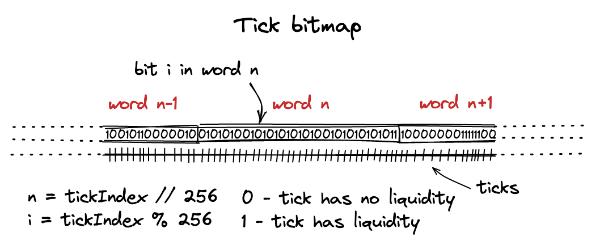
这个数组中的每个元素对应一个tick。为了在这个数组中导航，我们将其分解为字：长度为256位的子数组。要找到tick在这个数组中的位置，我们这样做：
function position(int24 tick) private pure returns (int16 wordPos, uint8 bitPos) {
wordPos = int16(tick >> 8);
bitPos = uint8(uint24(tick % 256));
}
也就是说：我们找到它的字位置，然后找到它在这个字中的位。>> 8等同于整数除以256。因此，字位置是tick索引除以256的整数部分，而位位置是余数。
作为例子，让我们计算我们其中一个tick的字和位位置：
tick = 85176
word_pos = tick >> 8 # or tick // 2**8
bit_pos = tick % 256
print(f"Word {word_pos}, bit {bit_pos}")
# Word 332, bit 184
翻转标志
当向池中添加流动性时，我们需要在位图中设置两个tick标志：一个用于下限tick，一个用于上限tick。我们在位图映射的flipTick方法中执行此操作：
function flipTick(
mapping(int16 => uint256) storage self,
int24 tick,
int24 tickSpacing
) internal {
require(tick % tickSpacing == 0); // ensure that the tick is spaced
(int16 wordPos, uint8 bitPos) = position(tick / tickSpacing);
uint256 mask = 1 << bitPos;
self[wordPos] ^= mask;
}
在本书的后面部分之前，
tickSpacing始终为1。请记住，这个值会影响哪些tick可以被初始化：当它等于1时，所有的tick都可以被翻转；当它被设置为不同的值时，只有可以被该值整除的tick才能被翻转。
在找到字位置和位位置后，我们需要制作一个掩码。掩码是一个在tick的位位置上设置了单个1标志的数字。要找到掩码，我们只需计算2**bit_pos（等同于1 << bit_pos）：
mask = 2**bit_pos # or 1 << bit_pos
print(format(mask, '#0258b')) ↓ here
#0b0000000000000000000000000000000000000000000000000000000000000000000000010000000000000000000000000000000000000000000000000000000000000000000000000000000000000000000000000000000000000000000000000000000000000000000000000000000000000000000000000000000000000000
接下来，为了翻转一个标志，我们通过按位异或（bitwise XOR）将掩码应用到tick的字上：
word = (2**256) - 1 # set word to all ones
print(format(word ^ mask, '#0258b')) ↓ here
#0b1111111111111111111111111111111111111111111111111111111111111111111111101111111111111111111111111111111111111111111111111111111111111111111111111111111111111111111111111111111111111111111111111111111111111111111111111111111111111111111111111111111111111111
你会看到第184位（从右边开始数，从0开始）已经翻转为0。
如果一个位是零，它会将其设置为1：
word = 0
print(format(word ^ mask, '#0258b')) ↓ here
#0b0000000000000000000000000000000000000000000000000000000000000000000000010000000000000000000000000000000000000000000000000000000000000000000000000000000000000000000000000000000000000000000000000000000000000000000000000000000000000000000000000000000000000000
寻找下一个Tick
下一步是使用位图索引寻找有流动性的tick。
在进行交换时，我们需要找到当前tick之前或之后的有流动性的tick（即：在它的左边或右边）。在上一个里程碑中，我们曾经计算并硬编码它，但现在我们需要使用位图索引来找到这样的tick。我们将在TickBitmap.nextInitializedTickWithinOneWord函数中实现这一点。在这个函数中，我们需要实现两种场景：
-
当卖出代币（在我们的例子中是ETH）时，在当前tick的字中找到下一个初始化的tick，并且在当前tick的右边。
-
当卖出代币（在我们的例子中是USDC）时，在下一个（当前+1）tick的字中找到下一个初始化的tick，并且在当前tick的左边。
这对应于在任一方向进行交换时的价格变动：
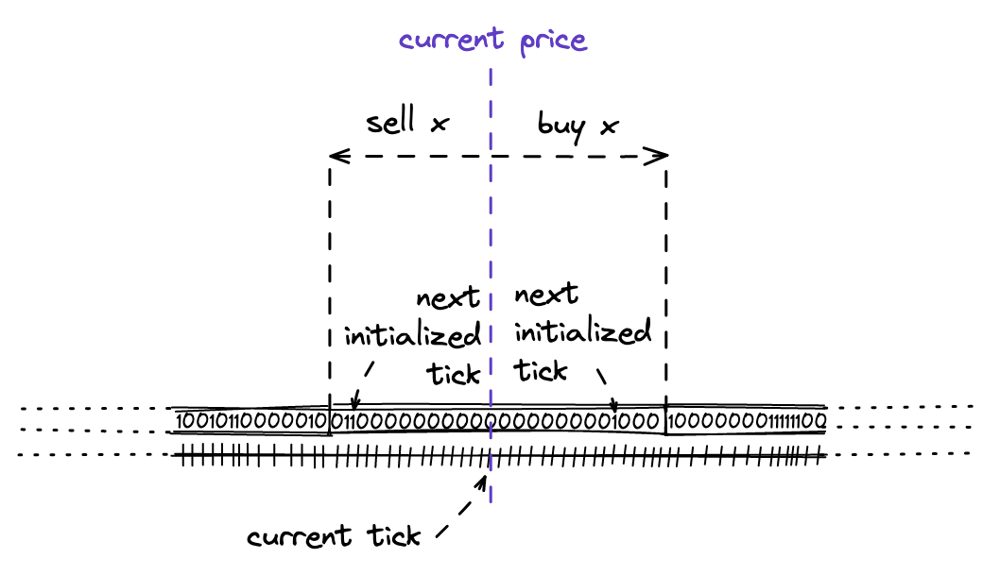
请注意，在代码中，方向是翻转的：当买入代币时，我们搜索当前tick左边的初始化tick；当卖出代币时，我们搜索右边的tick。但这只在一个字内是正确的；字是从左到右排序的。
当当前字中没有初始化的tick时，我们将在下一个循环周期中继续在相邻的字中搜索。
现在，让我们看看实现：
function nextInitializedTickWithinOneWord(
mapping(int16 => uint256) storage self,
int24 tick,
int24 tickSpacing,
bool lte
) internal view returns (int24 next, bool initialized) {
int24 compressed = tick / tickSpacing;
...
-
第一个参数使这个函数成为
mapping(int16 => uint256)的方法。 -
tick是当前的tick。 -
tickSpacing在我们开始在里程碑4中使用它之前始终为1。 -
lte是设置方向的标志。当为true时，我们正在卖出代币，并搜索当前tick右边的下一个初始化tick。当为false时，情况相反。lte等同于交换方向：当卖出代币时为true，否则为false。
if (lte) {
(int16 wordPos, uint8 bitPos) = position(compressed);
uint256 mask = (1 << bitPos) - 1 + (1 << bitPos);
uint256 masked = self[wordPos] & mask;
...
当卖出时，我们：
-
获取当前tick的字位置和位位置；
-
制作一个掩码，其中当前位位置右边的所有位（包括当前位）都是1（
mask全是1，其长度 =bitPos）； -
将掩码应用到当前tick的字上。
...
initialized = masked != 0;
next = initialized
? (compressed - int24(uint24(bitPos - BitMath.mostSignificantBit(masked)))) * tickSpacing
: (compressed - int24(uint24(bitPos))) * tickSpacing;
...
接下来，如果masked中至少有一位被设置为1，则masked不会等于0。如果是这样，就存在一个初始化的tick；如果不是，则不存在（至少在当前字中不存在）。根据结果，我们要么返回下一个初始化tick的索引，要么返回下一个字中最左边的位——这将允许我们在另一个循环周期中搜索该字中的初始化tick。
...
} else {
(int16 wordPos, uint8 bitPos) = position(compressed + 1);
uint256 mask = ~((1 << bitPos) - 1);
uint256 masked = self[wordPos] & mask;
...
类似地，当卖出时，我们：
-
获取当前tick的字位置和位位置；
-
制作一个不同的掩码，其中当前tick位位置左边的所有位都是1，右边的所有位都是0；
-
将掩码应用到当前tick的字上。
同样，如果左边没有初始化的tick，则返回前一个字的最右边的位：
...
initialized = masked != 0;
// overflow/underflow is possible, but prevented externally by limiting both tickSpacing and tick
next = initialized
? (compressed + 1 + int24(uint24((BitMath.leastSignificantBit(masked) - bitPos)))) * tickSpacing
: (compressed + 1 + int24(uint24((type(uint8).max - bitPos)))) * tickSpacing;
}
就是这样！
正如你所看到的，nextInitializedTickWithinOneWord如果目标tick距离很远，并不会找到确切的tick——它的搜索范围是当前或下一个tick的字。实际上，我们不想遍历无限的位图索引。
通用铸造
现在，我们准备更新mint函数，这样我们就不需要再硬编码值，而可以计算它们了。
索引已初始化的Ticks
回想一下，在mint函数中，我们更新TickInfo映射以存储ticks处可用流动性的信息。现在，我们还需要在位图索引中索引新初始化的ticks——我们稍后将在交换过程中使用此索引来查找下一个已初始化的tick。
首先，我们需要更新Tick.update函数：
// src/lib/Tick.sol
function update(
mapping(int24 => Tick.Info) storage self,
int24 tick,
uint128 liquidityDelta
) internal returns (bool flipped) {
...
flipped = (liquidityAfter == 0) != (liquidityBefore == 0);
...
}
现在它返回一个flipped标志，当向空的tick添加流动性或从tick中移除全部流动性时，该标志会被设置为true。
然后，在mint函数中，我们更新位图索引：
// src/UniswapV3Pool.sol
...
bool flippedLower = ticks.update(lowerTick, amount);
bool flippedUpper = ticks.update(upperTick, amount);
if (flippedLower) {
tickBitmap.flipTick(lowerTick, 1);
}
if (flippedUpper) {
tickBitmap.flipTick(upperTick, 1);
}
...
再次强调，我们将tick间距设置为1，直到我们在里程碑4中引入不同的值。
代币数量计算
mint函数中最大的变化是切换到代币数量计算。在里程碑1中，我们硬编码了这些值：
amount0 = 0.998976618347425280 ether;
amount1 = 5000 ether;
现在我们将使用里程碑1中的公式在Solidity中计算它们。让我们回顾一下这些公式：
是token0或代币的数量。让我们在Solidity中实现它：
// src/lib/Math.sol
function calcAmount0Delta(
uint160 sqrtPriceAX96,
uint160 sqrtPriceBX96,
uint128 liquidity
) internal pure returns (uint256 amount0) {
if (sqrtPriceAX96 > sqrtPriceBX96)
(sqrtPriceAX96, sqrtPriceBX96) = (sqrtPriceBX96, sqrtPriceAX96);
require(sqrtPriceAX96 > 0);
amount0 = divRoundingUp(
mulDivRoundingUp(
(uint256(liquidity) << FixedPoint96.RESOLUTION),
(sqrtPriceBX96 - sqrtPriceAX96),
sqrtPriceBX96
),
sqrtPriceAX96
);
}
这个函数与我们Python脚本中的
calc_amount0完全相同。
第一步是对价格进行排序，以确保在相减时不会发生下溢。接下来，我们将liquidity转换为Q96.64数，方法是将其乘以2**96。然后，根据公式，我们将其乘以价格的差值，并除以较大的价格。之后，我们再除以较小的价格。除法的顺序并不重要，但我们想要进行两次除法，因为价格的乘法可能会溢出。
我们使用mulDivRoundingUp来在一个操作中完成乘法和除法。这个函数基于PRBMath中的mulDiv：
function mulDivRoundingUp(
uint256 a,
uint256 b,
uint256 denominator
) internal pure returns (uint256 result) {
result = PRBMath.mulDiv(a, b, denominator);
if (mulmod(a, b, denominator) > 0) {
require(result < type(uint256).max);
result++;
}
}
mulmod是一个Solidity函数，它将两个数（a和b）相乘，将结果除以denominator，并返回余数。如果余数为正，我们就向上取整结果。
接下来是：
function calcAmount1Delta(
uint160 sqrtPriceAX96,
uint160 sqrtPriceBX96,
uint128 liquidity
) internal pure returns (uint256 amount1) {
if (sqrtPriceAX96 > sqrtPriceBX96)
(sqrtPriceAX96, sqrtPriceBX96) = (sqrtPriceBX96, sqrtPriceAX96);
amount1 = mulDivRoundingUp(
liquidity,
(sqrtPriceBX96 - sqrtPriceAX96),
FixedPoint96.Q96
);
}
这个函数与我们Python脚本中的
calc_amount1完全相同。
同样，我们使用mulDivRoundingUp来避免乘法过程中的溢出。
就是这样！我们现在可以使用这些函数来计算代币数量：
// src/UniswapV3Pool.sol
function mint(...) {
...
Slot0 memory slot0_ = slot0;
amount0 = Math.calcAmount0Delta(
slot0_.sqrtPriceX96,
TickMath.getSqrtRatioAtTick(upperTick),
amount
);
amount1 = Math.calcAmount1Delta(
slot0_.sqrtPriceX96,
TickMath.getSqrtRatioAtTick(lowerTick),
amount
);
...
}
其他一切保持不变。你需要更新池测试中的数量，由于四舍五入，它们会略有不同。
通用交换
这将是本里程碑中最困难的章节。在更新代码之前，我们需要理解Uniswap V3中交换算法的工作原理。
你可以将交换视为填充订单：用户向池子提交一个订单，以购买指定数量的代币。池子将使用可用的流动性将输入数量"转换"为另一种代币的输出数量。如果当前价格范围内没有足够的流动性，它将尝试在其他价格范围内寻找流动性（使用我们在上一章实现的函数）。
我们现在将在swap函数中实现这个逻辑，但目前仅限于当前价格范围内——我们将在下一个里程碑中实现跨tick交换。
function swap(
address recipient,
bool zeroForOne,
uint256 amountSpecified,
bytes calldata data
) public returns (int256 amount0, int256 amount1) {
...
在swap函数中，我们添加了两个新参数：zeroForOne和amountSpecified。zeroForOne是控制交换方向的标志：当为true时，token0被交换成token1；当为false时，则相反。例如，如果token0是ETH，token1是USDC，将zeroForOne设置为true意味着用ETH购买USDC。amountSpecified是用户想要出售的代币数量。
填充订单
由于在Uniswap V3中，流动性存储在多个价格范围内，Pool合约需要找到所有满足用户"填充订单"所需的流动性。这是通过按用户选择的方向迭代已初始化的ticks来完成的。
在继续之前，我们需要定义两个新的结构：
struct SwapState {
uint256 amountSpecifiedRemaining;
uint256 amountCalculated;
uint160 sqrtPriceX96;
int24 tick;
}
struct StepState {
uint160 sqrtPriceStartX96;
int24 nextTick;
uint160 sqrtPriceNextX96;
uint256 amountIn;
uint256 amountOut;
}
SwapState维护当前交换的状态。amountSpecifiedRemaining跟踪池子需要购买的剩余代币数量。当它为零时，交换完成。amountCalculated是合约计算的输出数量。sqrtPriceX96和tick是交换完成后的新当前价格和tick。
StepState维护当前交换步骤的状态。这个结构跟踪"填充订单"的一次迭代的状态。sqrtPriceStartX96跟踪迭代开始时的价格。nextTick是将为交换提供流动性的下一个已初始化tick，sqrtPriceNextX96是下一个tick的价格。amountIn和amountOut是当前迭代的流动性可以提供的数量。
在我们实现跨tick交换（即发生在多个价格范围内的交换）之后，迭代的概念将会更加清晰。
// src/UniswapV3Pool.sol
function swap(...) {
Slot0 memory slot0_ = slot0;
SwapState memory state = SwapState({
amountSpecifiedRemaining: amountSpecified,
amountCalculated: 0,
sqrtPriceX96: slot0_.sqrtPriceX96,
tick: slot0_.tick
});
...
在填充订单之前，我们初始化一个SwapState实例。我们将循环直到amountSpecifiedRemaining为0，这意味着池子有足够的流动性从用户那里购买amountSpecified数量的代币。
...
while (state.amountSpecifiedRemaining > 0) {
StepState memory step;
step.sqrtPriceStartX96 = state.sqrtPriceX96;
(step.nextTick, ) = tickBitmap.nextInitializedTickWithinOneWord(
state.tick,
1,
zeroForOne
);
step.sqrtPriceNextX96 = TickMath.getSqrtRatioAtTick(step.nextTick);
在循环中，我们设置一个应该为交换提供流动性的价格范围。这个范围从state.sqrtPriceX96到step.sqrtPriceNextX96，其中后者是下一个已初始化tick的价格（由nextInitializedTickWithinOneWord返回——我们在前一章节中了解了这个函数）。
(state.sqrtPriceX96, step.amountIn, step.amountOut) = SwapMath
.computeSwapStep(
state.sqrtPriceX96,
step.sqrtPriceNextX96,
liquidity,
state.amountSpecifiedRemaining
);
接下来，我们计算当前价格范围可以提供的数量，以及交换将导致的新的当前价格。
state.amountSpecifiedRemaining -= step.amountIn;
state.amountCalculated += step.amountOut;
state.tick = TickMath.getTickAtSqrtRatio(state.sqrtPriceX96);
}
循环的最后一步是更新SwapState。step.amountIn是价格范围可以从用户那里购买的代币数量；step.amountOut是池子可以卖给用户的相关的另一种代币的数量。state.sqrtPriceX96是交换后将设置的当前价格（回想一下，交易会改变当前价格）。
SwapMath合约
让我们仔细看看SwapMath.computeSwapStep。
// src/lib/SwapMath.sol
function computeSwapStep(
uint160 sqrtPriceCurrentX96,
uint160 sqrtPriceTargetX96,
uint128 liquidity,
uint256 amountRemaining
)
internal
pure
returns (
uint160 sqrtPriceNextX96,
uint256 amountIn,
uint256 amountOut
)
{
...
这是交换的核心逻辑。该函数在一个价格范围内计算交换数量，并考虑可用的流动性。它将返回：新的当前价格以及输入和输出代币数量。尽管输入数量是由用户提供的，我们仍然计算它，以了解一次computeSwapStep调用处理了用户指定输入数量的多少。
bool zeroForOne = sqrtPriceCurrentX96 >= sqrtPriceTargetX96;
sqrtPriceNextX96 = Math.getNextSqrtPriceFromInput(
sqrtPriceCurrentX96,
liquidity,
amountRemaining,
zeroForOne
);
通过检查价格，我们可以确定交换的方向。知道方向后，我们可以计算交换amountRemaining代币后的价格。我们稍后会回到这个函数。
在找到新价格后，我们可以使用我们已有的函数计算交换的输入和输出数量（这些函数与我们在mint函数中用于从流动性计算代币数量的函数相同）：
amountIn = Math.calcAmount0Delta(
sqrtPriceCurrentX96,
sqrtPriceNextX96,
liquidity
);
amountOut = Math.calcAmount1Delta(
sqrtPriceCurrentX96,
sqrtPriceNextX96,
liquidity
);
如果方向相反，则交换这些数量：
if (!zeroForOne) {
(amountIn, amountOut) = (amountOut, amountIn);
}
这就是computeSwapStep的全部内容！
通过交换数量找到价格
现在让我们看看Math.getNextSqrtPriceFromInput——这个函数根据另一个、流动性和输入数量计算。它告诉我们在给定当前价格和流动性的情况下，交换指定输入数量的代币后价格将会是多少。
好消息是我们已经知道这些公式：回想一下我们在Python中是如何计算price_next的：
# When amount_in is token0
price_next = int((liq * q96 * sqrtp_cur) // (liq * q96 + amount_in * sqrtp_cur))
# When amount_in is token1
price_next = sqrtp_cur + (amount_in * q96) // liq
我们将在Solidity中实现这个：
// src/lib/Math.sol
function getNextSqrtPriceFromInput(
uint160 sqrtPriceX96,
uint128 liquidity,
uint256 amountIn,
bool zeroForOne
) internal pure returns (uint160 sqrtPriceNextX96) {
sqrtPriceNextX96 = zeroForOne
? getNextSqrtPriceFromAmount0RoundingUp(
sqrtPriceX96,
liquidity,
amountIn
)
: getNextSqrtPriceFromAmount1RoundingDown(
sqrtPriceX96,
liquidity,
amountIn
);
}
这个函数处理两个方向的交换。由于计算方法不同，我们将在单独的函数中实现它们。
function getNextSqrtPriceFromAmount0RoundingUp(
uint160 sqrtPriceX96,
uint128 liquidity,
uint256 amountIn
) internal pure returns (uint160) {
uint256 numerator = uint256(liquidity) << FixedPoint96.RESOLUTION;
uint256 product = amountIn * sqrtPriceX96;
if (product / amountIn == sqrtPriceX96) {
uint256 denominator = numerator + product;
if (denominator >= numerator) {
return
uint160(
mulDivRoundingUp(numerator, sqrtPriceX96, denominator)
);
}
}
return
uint160(
divRoundingUp(numerator, (numerator / sqrtPriceX96) + amountIn)
);
}
在这个函数中，我们实现了两个公式。在第一个return处，它实现了我们在Python中实现的相同公式。这是最精确的公式，但在将amountIn乘以sqrtPriceX96时可能会溢出。这个公式是（我们在"输出数量计算"中讨论过）：
当它溢出时，我们使用一个替代公式，这个公式精度较低：
这实际上就是将前一个公式的分子和分母都除以，以消除分子中的乘法。
另一个函数的数学计算更简单：
function getNextSqrtPriceFromAmount1RoundingDown(
uint160 sqrtPriceX96,
uint128 liquidity,
uint256 amountIn
) internal pure returns (uint160) {
return
sqrtPriceX96 +
uint160((amountIn << FixedPoint96.RESOLUTION) / liquidity);
}
完成交换
现在，让我们回到swap函数并完成它。
到目前为止，我们已经循环遍历了下一个初始化的ticks，填充了用户指定的amountSpecified，计算了输入和输出数量，并找到了新的价格和tick。由于在这个里程碑中，我们只实现一个价格范围内的交换，这就足够了。现在我们需要更新合约的状态，向用户发送代币，并获取交换的代币。
if (state.tick != slot0_.tick) {
(slot0.sqrtPriceX96, slot0.tick) = (state.sqrtPriceX96, state.tick);
}
首先，我们设置新的价格和tick。由于这个操作会写入合约的存储，为了优化gas消耗，我们只在新的tick不同时才执行这个操作。
(amount0, amount1) = zeroForOne
? (
int256(amountSpecified - state.amountSpecifiedRemaining),
-int256(state.amountCalculated)
)
: (
-int256(state.amountCalculated),
int256(amountSpecified - state.amountSpecifiedRemaining)
);
接下来，我们根据交换方向和在交换循环中计算的数量来计算交换金额。
if (zeroForOne) {
IERC20(token1).transfer(recipient, uint256(-amount1));
uint256 balance0Before = balance0();
IUniswapV3SwapCallback(msg.sender).uniswapV3SwapCallback(
amount0,
amount1,
data
);
if (balance0Before + uint256(amount0) > balance0())
revert InsufficientInputAmount();
} else {
IERC20(token0).transfer(recipient, uint256(-amount0));
uint256 balance1Before = balance1();
IUniswapV3SwapCallback(msg.sender).uniswapV3SwapCallback(
amount0,
amount1,
data
);
if (balance1Before + uint256(amount1) > balance1())
revert InsufficientInputAmount();
}
接下来，我们根据交换方向与用户交换代币。这部分与里程碑2中的内容相同，只是增加了处理另一个交换方向的逻辑。
就是这样！交换完成了！
测试
测试不会有太大变化，我们只需要将amountSpecified和zeroForOne传递给swap函数。不过，输出数量会有微小的变化，因为现在是在Solidity中计算的。
我们现在可以测试相反方向的交换了！我将把这个作为作业留给你（只需确保选择一个小的输入数量，以便我们的单一价格范围可以处理整个交换）。如果感到困难，不要犹豫查看我的测试！
Quoter合约
为了将我们更新后的Pool合约集成到前端应用中，我们需要一种方法来计算交换金额，而不实际进行交换。用户将输入他们想要出售的金额，我们希望计算并向他们展示他们将获得的交换金额。我们将通过Quoter合约来实现这一点。
由于Uniswap V3中的流动性分散在多个价格范围内，我们无法使用公式计算交换金额（这在Uniswap V2中是可能的）。Uniswap V3的设计迫使我们使用不同的方法：为了计算交换金额，我们将启动一个真实的交换，并在回调函数中中断它，获取Pool合约计算的金额。也就是说，我们必须模拟一个真实的交换来计算输出金额！
再次，我们将为此制作一个辅助合约：
contract UniswapV3Quoter {
struct QuoteParams {
address pool;
uint256 amountIn;
bool zeroForOne;
}
function quote(QuoteParams memory params)
public
returns (
uint256 amountOut,
uint160 sqrtPriceX96After,
int24 tickAfter
)
{
...
Quoter是一个只实现了一个公共函数——quote的合约。Quoter是一个通用合约，可以与任何池子配合使用，所以它将池子地址作为参数。其他参数（amountIn和zeroForOne）是模拟交换所必需的。
try
IUniswapV3Pool(params.pool).swap(
address(this),
params.zeroForOne,
params.amountIn,
abi.encode(params.pool)
)
{} catch (bytes memory reason) {
return abi.decode(reason, (uint256, uint160, int24));
}
这个合约唯一做的事情就是调用池子的swap函数。预期这个调用会回滚（即抛出错误）——我们将在交换回调中执行这个操作。在回滚的情况下，回滚原因会被解码并返回；quote永远不会回滚。注意，在额外数据中，我们只传递了池子地址——在交换回调中，我们将使用它来获取交换后池子的slot0。
function uniswapV3SwapCallback(
int256 amount0Delta,
int256 amount1Delta,
bytes memory data
) external view {
address pool = abi.decode(data, (address));
uint256 amountOut = amount0Delta > 0
? uint256(-amount1Delta)
: uint256(-amount0Delta);
(uint160 sqrtPriceX96After, int24 tickAfter) = IUniswapV3Pool(pool)
.slot0();
在交换回调中，我们收集我们需要的值：输出数量、新价格和相应的tick。接下来，我们需要保存这些值并回滚：
assembly {
let ptr := mload(0x40)
mstore(ptr, amountOut)
mstore(add(ptr, 0x20), sqrtPriceX96After)
mstore(add(ptr, 0x40), tickAfter)
revert(ptr, 96)
}
为了优化gas，这部分是用Yul实现的，Yul是Solidity中用于内联汇编的语言。让我们来分解一下：
-
mload(0x40)读取下一个可用内存槽的指针（EVM中的内存以32字节为一个槽组织）； -
在那个内存槽，
mstore(ptr, amountOut)写入amountOut； -
mstore(add(ptr, 0x20), sqrtPriceX96After)在amountOut之后写入sqrtPriceX96After； -
mstore(add(ptr, 0x40), tickAfter)在sqrtPriceX96After之后写入tickAfter； -
revert(ptr, 96)回滚调用并返回地址ptr（我们上面写入的数据的开始）处的96字节数据（我们写入内存的值的总长度）。
所以，我们正在连接我们需要的值的字节表示（正是abi.encode()所做的）。注意，偏移量始终是32字节，即使sqrtPriceX96After占20字节（uint160）而tickAfter占3字节（int24）。这是为了我们可以使用abi.decode()来解码数据：它的对应物abi.encode()将所有整数编码为32字节的字。
然后...完成了。
回顾
让我们回顾一下以更好地理解算法：
-
quote调用池子的swap，带有输入数量和交换方向； -
swap执行真实的交换，它运行循环来填充用户指定的输入数量； -
为了从用户那里获取代币，
swap在调用者上调用交换回调； -
调用者（Quote合约）实现回调，在其中它以输出数量、新价格和新tick回滚；
-
回滚冒泡到初始的
quote调用； -
在
quote中，捕获回滚，解码回滚原因并作为调用quote的结果返回。
我希望这是清楚的！
Quoter的限制
这个设计有一个重要的限制：由于quote调用Pool合约的swap函数，而swap函数不是纯函数或视图函数（因为它修改合约状态），quote也不能是纯函数或视图函数。swap修改状态，quote也是如此，即使不是在Quoter合约中。但我们将quote视为一个getter，一个只读取合约数据的函数。这种不一致意味着当调用quote时，EVM将使用CALL操作码而不是STATICCALL。这不是一个大问题，因为Quoter在交换回调中回滚，而回滚会重置调用期间修改的状态——这保证了quote不会修改Pool合约的状态（不会发生实际交易）。
这个问题带来的另一个不便是，从客户端库（Ethers.js、Web3.js等）调用quote将触发一个交易。为了解决这个问题，我们需要强制库进行静态调用。我们将在本里程碑的后面看到如何在Ethers.js中做到这一点。
用户界面
让我们使我们的网页应用更像一个真正的去中心化交易所（DEX）。我们现在可以移除硬编码的交换金额，让用户输入任意金额。此外，我们现在可以让用户在两个方向上进行交换，所以我们还需要一个按钮来交换代币输入。更新后，交换表单将看起来像这样：
<form className="SwapForm">
<SwapInput
amount={zeroForOne ? amount0 : amount1}
disabled={!enabled || loading}
readOnly={false}
setAmount={setAmount_(zeroForOne ? setAmount0 : setAmount1, zeroForOne)}
token={zeroForOne ? pair[0] : pair[1]} />
<ChangeDirectionButton zeroForOne={zeroForOne} setZeroForOne={setZeroForOne} disabled={!enabled || loading} />
<SwapInput
amount={zeroForOne ? amount1 : amount0}
disabled={!enabled || loading}
readOnly={true}
token={zeroForOne ? pair[1] : pair[0]} />
<button className='swap' disabled={!enabled || loading} onClick={swap_}>Swap</button>
</form>
每个输入框都有一个与之关联的金额，这取决于由zeroForOne状态变量控制的交换方向。下方的输入框始终是只读的，因为它的值是由Quoter合约计算得出的。
setAmount_函数做两件事：它更新上方输入框的值，并调用Quoter合约来计算下方输入框的值：
const updateAmountOut = debounce((amount) => {
if (amount === 0 || amount === "0") {
return;
}
setLoading(true);
quoter.callStatic
.quote({ pool: config.poolAddress, amountIn: ethers.utils.parseEther(amount), zeroForOne: zeroForOne })
.then(({ amountOut }) => {
zeroForOne ? setAmount1(ethers.utils.formatEther(amountOut)) : setAmount0(ethers.utils.formatEther(amountOut));
setLoading(false);
})
.catch((err) => {
zeroForOne ? setAmount1(0) : setAmount0(0);
setLoading(false);
console.error(err);
})
})
const setAmount_ = (setAmountFn) => {
return (amount) => {
amount = amount || 0;
setAmountFn(amount);
updateAmountOut(amount)
}
}
注意在quoter上调用的callStatic——这就是我们在上一章讨论的内容：我们需要强制Ethers.js进行静态调用。由于quote不是pure或view函数，Ethers.js会尝试在交易中调用quote。
就是这样！用户界面现在允许我们指定任意金额并在任一方向进行交换！
跨价格区间交换
到目前为止,我们已经取得了巨大的进展,我们的Uniswap V3实现已经非常接近原始版本了！然而,我们的实现仅支持在一个价格区间内进行交换——这正是我们将在这个里程碑中改进的地方。
在这个里程碑中,我们将:
-
更新
mint函数,以便在不同的价格区间提供流动性； -
更新
swap函数,当当前价格区间的流动性不足时,可以跨越价格区间； -
学习如何在智能合约中计算流动性；
-
在
mint和swap函数中实现滑点保护； -
更新UI应用程序,允许在不同的价格区间添加流动性；
-
进一步了解定点数。
在这个里程碑中,我们将完成交换功能,这是Uniswap的核心功能！
让我们开始吧！
你可以在这个Github分支中找到本章的完整代码。
这个里程碑在现有合约中引入了很多代码变更。在这里你可以看到自上一个里程碑以来的所有变更
如果你有任何问题,欢迎在这个里程碑的GitHub讨论区中提出！
不同的价格区间
根据我们的实现方式，我们的Pool合约只创建包含当前价格的价格区间：
// src/UniswapV3Pool.sol
function mint() {
...
amount0 = Math.calcAmount0Delta(
slot0_.sqrtPriceX96,
TickMath.getSqrtRatioAtTick(upperTick),
amount
);
amount1 = Math.calcAmount1Delta(
slot0_.sqrtPriceX96,
TickMath.getSqrtRatioAtTick(lowerTick),
amount
);
liquidity += uint128(amount);
...
}
从这段代码中，你也可以看到我们总是更新流动性跟踪器（它只跟踪当前可用的流动性，即当前价格下可用的流动性）。
然而，在现实中，价格区间也可以在当前价格的下方或上方创建。是的：Uniswap V3的设计允许流动性提供者提供不会立即使用的流动性。当当前价格进入这些"休眠"价格区间时，这种流动性会被"注入"。
以下是可能存在的价格区间类型：
- 活跃价格区间，即包含当前价格的区间。
- 位于当前价格下方的价格区间。这个区间的上限价格刻度低于当前价格刻度。
- 位于当前价格上方的价格区间。这个区间的下限价格刻度高于当前价格刻度。
限价订单
关于非活跃流动性（即不在当前价格提供的流动性）的一个有趣事实是，它充当了限价订单的角色。
在交易中，限价订单是当价格跨越交易者选择的水平时执行的订单。例如，你可以下一个限价订单，当ETH价格下降到1000美元时买入1个ETH。同样，你也可以使用限价订单来卖出资产。使用Uniswap V3，你可以通过在当前价格下方或上方放置流动性来获得类似的行为。让我们看看这是如何工作的：

如果你在当前价格下方提供流动性（即你选择的价格区间完全位于当前价格下方）或上方，那么你的全部流动性将只由一种资产组成——这种资产将是两种资产中较便宜的那个。在我们的例子中，我们正在建立一个ETH作为代币和USDC作为代币的资金池，我们将价格定义为：
如果我们在当前价格下方放置流动性，那么流动性将完全由USDC组成，因为在我们添加流动性的地方，USDC的价格低于当前价格。同样，当我们在当前价格上方放置流动性时，流动性将由ETH组成，因为在那个范围内ETH更便宜。
回想一下介绍中的这个图示：

如果我们从这个区间买入所有可用的ETH，该区间将只包含另一种代币USDC，价格将移动到曲线的右侧。我们定义的价格（）将增加。如果这个区间右侧有一个价格区间，它需要有ETH流动性，而且只有ETH，没有USDC：它需要为下一次交换提供ETH。如果我们继续买入并提高价格，我们可能也会"耗尽"下一个价格区间，这意味着买入所有的ETH并卖出USDC。同样，价格区间最终只剩下USDC，当前价格移出了这个区间。
类似地，如果我们买入USDC代币，我们将价格向左移动并从资金池中移除USDC代币。下一个价格区间将只包含USDC代币以满足我们的需求，并且，类似于上述情况，如果我们从中买入所有USDC，它最终将只包含ETH代币。
注意这个有趣的事实：当跨越整个价格区间时，其流动性从一种代币交换为另一种代币。如果我们设置一个非常窄的价格区间，一个在价格移动过程中快速被跨越的区间，我们就得到了一个限价订单！例如，如果你想以较低的价格买入ETH，你需要在较低的价格放置一个只包含USDC的价格区间，并等待当前价格跨越它。之后，你需要移除你的流动性，并将其转换为ETH！
我希望这个例子没有让你感到困惑！我认为这是一个很好的方式来解释价格区间的动态。
更新mint函数
为了支持所有类型的价格区间，我们需要知道当前价格是低于、位于还是高于用户指定的价格区间，并相应地计算代币数量。如果价格区间高于当前价格，我们希望流动性由代币组成：
// src/UniswapV3Pool.sol
function mint() {
...
if (slot0_.tick < lowerTick) {
amount0 = Math.calcAmount0Delta(
TickMath.getSqrtRatioAtTick(lowerTick),
TickMath.getSqrtRatioAtTick(upperTick),
amount
);
...
当价格区间包含当前价格时，我们希望两种代币的数量与价格成比例（这是我们之前实现的场景）：
} else if (slot0_.tick < upperTick) {
amount0 = Math.calcAmount0Delta(
slot0_.sqrtPriceX96,
TickMath.getSqrtRatioAtTick(upperTick),
amount
);
amount1 = Math.calcAmount1Delta(
slot0_.sqrtPriceX96,
TickMath.getSqrtRatioAtTick(lowerTick),
amount
);
liquidity = LiquidityMath.addLiquidity(liquidity, int128(amount));
注意，这是我们唯一想要更新liquidity的场景，因为该变量跟踪的是立即可用的流动性。
在所有其他情况下，当价格区间低于当前价格时，我们希望该区间只包含代币：
} else {
amount1 = Math.calcAmount1Delta(
TickMath.getSqrtRatioAtTick(lowerTick),
TickMath.getSqrtRatioAtTick(upperTick),
amount
);
}
就是这样！
跨价格区间交换
跨价格区间交换可能是Uniswap V3最高级的功能。幸运的是，我们已经实现了几乎所有需要进行跨价格区间交换的内容。让我们在实现之前看看跨价格区间交换是如何工作的。
跨价格区间交换的工作原理
一个常见的Uniswap V3资金池是一个有许多重叠（和未结算）价格区间的资金池。每个资金池都跟踪当前的和价格刻度。当用户交换代币时，他们会根据交换方向将当前价格和价格刻度向左或向右移动。这些移动是由交换过程中代币被添加到资金池和从资金池中移除造成的。
资金池还跟踪（在我们的代码中是liquidity变量），这是包含当前价格的所有价格区间提供的总流动性。预计在大幅价格变动期间，当前价格会移出价格区间。当这种情况发生时，这些价格区间变为非活跃状态，它们的流动性从中减去。另一方面，当当前价格进入一个价格区间时，增加，该价格区间变为活跃状态。
让我们分析这个图示：

这张图片上有三个价格区间。顶部的是当前参与的区间，它包含当前价格。这个价格区间的流动性被设置为Pool合约的liquidity状态变量。
如果我们买光顶部价格区间的所有ETH，价格将上涨，我们将移动到右侧价格区间，此时该区间只包含ETH，不包含USDC。如果有足够的流动性满足我们的需求，我们可能会停在这个价格区间。在这种情况下，liquidity变量将只包含这个价格区间提供的流动性。如果我们继续购买ETH并耗尽右侧价格区间，我们将需要这个价格区间右侧的另一个价格区间。如果没有更多的价格区间，我们将不得不停止，我们的交换将只能部分满足。
如果我们从顶部价格区间买光所有USDC（并卖出ETH），价格将下降，我们将移动到左侧价格区间——此时它只包含USDC。如果我们耗尽它，我们将需要它左侧的另一个价格区间。
当前价格在交换过程中移动。它从一个价格区间移动到另一个价格区间，但它必须始终保持在一个价格区间内——否则，交易是不可能的。
当然，价格区间可以重叠，所以在实践中，价格区间之间的过渡是无缝的。也不可能跳过一个缺口——交换将部分完成。值得注意的是，在价格区间重叠的区域，价格移动较慢。这是因为这些区域的供应较高，需求的影响较低（回想一下介绍中提到的，高需求低供应会推高价格）。
我们当前的实现不支持这种流动性：我们只允许在一个活跃的价格区间内进行交换。这就是我们现在要改进的地方。
更新computeSwapStep函数
在swap函数中，我们遍历初始化的价格刻度（即有流动性的价格刻度）以填满用户请求的数量。在每次迭代中，我们：
- 使用
tickBitmap.nextInitializedTickWithinOneWord找到下一个初始化的价格刻度； - 在当前价格和下一个初始化的价格刻度之间的范围内进行交换（使用
SwapMath.computeSwapStep）； - 始终期望当前流动性足以满足交换（即交换后的价格在当前价格和下一个初始化的价格刻度之间）。
但如果第三步不成立会发生什么？我们在测试中涵盖了这种情况：
// test/UniswapV3Pool.t.sol
function testSwapBuyEthNotEnoughLiquidity() public {
...
uint256 swapAmount = 5300 ether;
...
vm.expectRevert(stdError.arithmeticError);
pool.swap(address(this), false, swapAmount, extra);
}
当资金池试图发送给我们比它拥有的更多的以太币时，就会发生"算术溢出/下溢"。这个错误发生是因为在我们当前的实现中，我们总是假设有足够的流动性来满足任何交换：
// src/lib/SwapMath.sol
function computeSwapStep(...) {
...
sqrtPriceNextX96 = Math.getNextSqrtPriceFromInput(
sqrtPriceCurrentX96,
liquidity,
amountRemaining,
zeroForOne
);
amountIn = ...
amountOut = ...
}
为了改进这一点，我们需要考虑几种情况：
-
当当前价格刻度和下一个价格刻度之间的范围有足够的流动性来填满
amountRemaining； -
当该范围无法填满整个
amountRemaining。
在第一种情况下，交换完全在该范围内完成——这是我们已经实现的场景。在第二种情况下，我们将消耗该范围提供的全部流动性，并移动到下一个范围（如果存在的话）。考虑到这一点，让我们重新设计computeSwapStep：
// src/lib/SwapMath.sol
function computeSwapStep(...) {
...
amountIn = zeroForOne
? Math.calcAmount0Delta(
sqrtPriceCurrentX96,
sqrtPriceTargetX96,
liquidity
)
: Math.calcAmount1Delta(
sqrtPriceCurrentX96,
sqrtPriceTargetX96,
liquidity
);
if (amountRemaining >= amountIn) sqrtPriceNextX96 = sqrtPriceTargetX96;
else
sqrtPriceNextX96 = Math.getNextSqrtPriceFromInput(
sqrtPriceCurrentX96,
liquidity,
amountRemaining,
zeroForOne
);
amountIn = Math.calcAmount0Delta(
sqrtPriceCurrentX96,
sqrtPriceNextX96,
liquidity
);
amountOut = Math.calcAmount1Delta(
sqrtPriceCurrentX96,
sqrtPriceNextX96,
liquidity
);
}
首先，我们计算amountIn——当前范围可以满足的输入量。如果它小于amountRemaining，我们就说当前价格范围无法完成整个交换，因此下一个是价格范围的上/下（换句话说，我们使用价格范围的全部流动性）。如果amountIn大于amountRemaining，我们计算sqrtPriceNextX96——它将是当前价格范围内的一个价格。
最后，在确定下一个价格后，我们在这个较短的价格范围内重新计算amountIn并计算amountOut（我们不消耗全部流动性）。
我希望这解释清楚了！
更新swap函数
现在，在swap函数中，我们需要处理我们在上一部分引入的情况：当交换价格达到价格范围的边界时。当这种情况发生时，我们希望停用我们正在离开的价格范围，并激活下一个价格范围。我们还希望开始循环的另一次迭代，并尝试找到另一个有流动性的价格刻度。
在更新循环之前，让我们将tickBitmap.nextInitializedTickWithinOneWord()调用返回的第二个值保存到step.initialized中：
(step.nextTick, step.initialized) = tickBitmap.nextInitializedTickWithinOneWord(
state.tick,
1,
zeroForOne
);
（在上一个里程碑中，我们只存储了step.nextTick。）
知道下一个价格刻度是否初始化将帮助我们在价格刻度位图的当前字中没有初始化的价格刻度的情况下节省一些gas。
现在，以下是我们需要添加到循环末尾的内容：
if (state.sqrtPriceX96 == step.sqrtPriceNextX96) {
if (step.initialized) {
int128 liquidityDelta = ticks.cross(step.nextTick);
if (zeroForOne) liquidityDelta = -liquidityDelta;
state.liquidity = LiquidityMath.addLiquidity(
state.liquidity,
liquidityDelta
);
if (state.liquidity == 0) revert NotEnoughLiquidity();
}
state.tick = zeroForOne ? step.nextTick - 1 : step.nextTick;
} else {
state.tick = TickMath.getTickAtSqrtRatio(state.sqrtPriceX96);
}
第二个分支是我们之前有的——它处理当前价格保持在范围内的情况。所以让我们专注于第一个分支。
在这里，我们正在更新当前流动性，但只有在下一个价格刻度被初始化的情况下才这样做（如果没有初始化，我们跳过向流动性添加0以节省gas）。
state.sqrtPriceX96是新的当前价格，即当前交换后将设置的价格；step.sqrtPriceNextX96是下一个初始化价格刻度的价格。如果这两个相等，我们就到达了价格范围的边界。如上所述，当这种情况发生时，我们想要更新（添加或移除流动性）并使用边界价格刻度作为当前价格刻度继续交换。
按照惯例，跨越一个价格刻度意味着从左到右跨越它。因此，跨越下限价格刻度总是增加流动性，而跨越上限价格刻度总是减少流动性。然而，当zeroForOne为真时，我们取反符号：当价格下降（代币被出售）时，上限价格刻度增加流动性，下限价格刻度减少流动性。
当更新state.tick时，如果价格下降（zeroForOne为真），我们需要减去1以步出价格范围。当价格上升（zeroForOne为假）时，当前价格刻度总是在TickBitmap.nextInitializedTickWithinOneWord中被排除。
另一个小但非常重要的变化是我们需要在跨越价格刻度时更新。我们在循环之后这样做：
if (liquidity_ != state.liquidity) liquidity = state.liquidity;
在循环中，我们在进入/离开价格范围时多次更新state.liquidity。交换后，我们需要更新全局，以反映新的当前价格下可用的流动性。此外，我们只在完成交换时更新全局变量的原因是为了优化gas消耗，因为向合约的存储写入是一个昂贵的操作。
流动性跟踪和价格刻度跨越
现在让我们看看更新后的Tick库。
第一个变化是在Tick.Info结构中：我们现在有两个变量来跟踪价格刻度流动性：
struct Info {
bool initialized;
// total liquidity at tick
uint128 liquidityGross;
// amount of liquidity added or subtracted when tick is crossed
int128 liquidityNet;
}
liquidityGross跟踪一个价格刻度的绝对流动性数量。它用于确定一个价格刻度是否被翻转。另一方面，liquidityNet是一个有符号整数——它跟踪当跨越一个价格刻度时添加（在下限价格刻度的情况下）或移除（在上限价格刻度的情况下）的流动性数量。
liquidityNet在update函数中设置：
function update(
mapping(int24 => Tick.Info) storage self,
int24 tick,
int128 liquidityDelta,
bool upper
) internal returns (bool flipped) {
...
tickInfo.liquidityNet = upper
? int128(int256(tickInfo.liquidityNet) - liquidityDelta)
: int128(int256(tickInfo.liquidityNet) + liquidityDelta);
}
我们之前看到的cross函数只是简单地返回liquidityNet（在我们在后续里程碑中引入新功能后，它会变得更复杂）：
function cross(mapping(int24 => Tick.Info) storage self, int24 tick)
internal
view
returns (int128 liquidityDelta)
{
Tick.Info storage info = self[tick];
liquidityDelta = info.liquidityNet;
}
测试
让我们回顾不同的流动性设置并测试它们，以确保我们的资金池实现能够正确处理它们。
单一价格区间

这是我们之前遇到的场景。在我们更新代码后，我们需要确保旧功能继续正常工作。
为了简洁起见，我只会展示测试中最重要的部分。你可以在代码仓库中找到完整的测试。
- 当购买ETH时：
function testBuyETHOnePriceRange() public { LiquidityRange[] memory liquidity = new LiquidityRange[](1); liquidity[0] = liquidityRange(4545, 5500, 1 ether, 5000 ether, 5000); ... (int256 expectedAmount0Delta, int256 expectedAmount1Delta) = ( -0.008396874645169943 ether, 42 ether ); assertSwapState( ExpectedStateAfterSwap({ ... sqrtPriceX96: 5604415652688968742392013927525, // 5003.8180249710795 tick: 85183, currentLiquidity: liquidity[0].amount }) ); } - 当购买USDC时：
function testBuyUSDCOnePriceRange() public { LiquidityRange[] memory liquidity = new LiquidityRange[](1); liquidity[0] = liquidityRange(4545, 5500, 1 ether, 5000 ether, 5000); ... (int256 expectedAmount0Delta, int256 expectedAmount1Delta) = ( 0.01337 ether, -66.807123823853842027 ether ); assertSwapState( ExpectedStateAfterSwap({ ... sqrtPriceX96: 5598737223630966236662554421688, // 4993.683362269102 tick: 85163, currentLiquidity: liquidity[0].amount }) ); }
在这两种情况下，我们购买少量的ETH或USDC——这个数量需要足够小，以使价格不会离开我们创建的唯一价格区间。交换完成后的关键值：
sqrtPriceX96略高于或略低于初始价格，并保持在价格区间内；currentLiquidity保持不变。
多个相同和重叠的价格区间

-
当购买ETH时：
function testBuyETHTwoEqualPriceRanges() public { LiquidityRange memory range = liquidityRange( 4545, 5500, 1 ether, 5000 ether, 5000 ); LiquidityRange[] memory liquidity = new LiquidityRange[](2); liquidity[0] = range; liquidity[1] = range; ... (int256 expectedAmount0Delta, int256 expectedAmount1Delta) = ( -0.008398516982770993 ether, 42 ether ); assertSwapState( ExpectedStateAfterSwap({ ... sqrtPriceX96: 5603319704133145322707074461607, // 5001.861214026131 tick: 85179, currentLiquidity: liquidity[0].amount + liquidity[1].amount }) ); } -
当购买USDC时：
function testBuyUSDCTwoEqualPriceRanges() public { LiquidityRange memory range = liquidityRange( 4545, 5500, 1 ether, 5000 ether, 5000 ); LiquidityRange[] memory liquidity = new LiquidityRange[](2); liquidity[0] = range; liquidity[1] = range; ... (int256 expectedAmount0Delta, int256 expectedAmount1Delta) = ( 0.01337 ether, -66.827918929906650442 ether ); assertSwapState( ExpectedStateAfterSwap({ ... sqrtPriceX96: 5600479946976371527693873969480, // 4996.792621611429 tick: 85169, currentLiquidity: liquidity[0].amount + liquidity[1].amount }) ); }
这个场景类似于前一个，但这次我们创建了两个相同的价格区间。由于这些是完全重叠的价格区间，它们实际上相当于一个具有更高流动性的价格区间。因此，价格变化比前一个场景更慢。此外，由于流动性更深，我们获得的代币略多。
连续价格区间

- 当购买ETH时：
function testBuyETHConsecutivePriceRanges() public { LiquidityRange[] memory liquidity = new LiquidityRange[](2); liquidity[0] = liquidityRange(4545, 5500, 1 ether, 5000 ether, 5000); liquidity[1] = liquidityRange(5500, 6250, 1 ether, 5000 ether, 5000); ... (int256 expectedAmount0Delta, int256 expectedAmount1Delta) = ( -1.820694594787485635 ether, 10000 ether ); assertSwapState( ExpectedStateAfterSwap({ ... sqrtPriceX96: 6190476002219365604851182401841, // 6105.045728033458 tick: 87173, currentLiquidity: liquidity[1].amount }) ); } - 当购买USDC时：
function testBuyUSDCConsecutivePriceRanges() public { LiquidityRange[] memory liquidity = new LiquidityRange[](2); liquidity[0] = liquidityRange(4545, 5500, 1 ether, 5000 ether, 5000); liquidity[1] = liquidityRange(4000, 4545, 1 ether, 5000 ether, 5000); ... (int256 expectedAmount0Delta, int256 expectedAmount1Delta) = ( 2 ether, -9103.264925902176327184 ether ); assertSwapState( ExpectedStateAfterSwap({ ... sqrtPriceX96: 5069962753257045266417033265661, // 4094.9666586581643 tick: 83179, currentLiquidity: liquidity[1].amount }) ); }
在这些场景中，我们进行大规模的交换，导致价格移出一个价格区间。结果，第二个价格区间被激活并提供足够的流动性来满足交换。在这两种场景中，我们可以看到价格落在当前价格区间之外，并且价格区间被停用（当前流动性等于第二个价格区间的流动性）。
部分重叠的价格区间

-
当购买ETH时：
function testBuyETHPartiallyOverlappingPriceRanges() public { LiquidityRange[] memory liquidity = new LiquidityRange[](2); liquidity[0] = liquidityRange(4545, 5500, 1 ether, 5000 ether, 5000); liquidity[1] = liquidityRange(5001, 6250, 1 ether, 5000 ether, 5000); ... (int256 expectedAmount0Delta, int256 expectedAmount1Delta) = ( -1.864220641170389178 ether, 10000 ether ); assertSwapState( ExpectedStateAfterSwap({ ... sqrtPriceX96: 6165345094827913637987008642386, // 6055.578153852725 tick: 87091, currentLiquidity: liquidity[1].amount }) ); } -
当购买USDC时：
function testBuyUSDCPartiallyOverlappingPriceRanges() public { LiquidityRange[] memory liquidity = new LiquidityRange[](2); liquidity[0] = liquidityRange(4545, 5500, 1 ether, 5000 ether, 5000); liquidity[1] = liquidityRange(4000, 4999, 1 ether, 5000 ether, 5000); ... (int256 expectedAmount0Delta, int256 expectedAmount1Delta) = ( 2 ether, -9321.077831210790476918 ether ); assertSwapState( ExpectedStateAfterSwap({ ... sqrtPriceX96: 5090915820491052794734777344590, // 4128.883835866256 tick: 83261, currentLiquidity: liquidity[1].amount }) ); }
这是前一个场景的变体，但这次价格区间是部分重叠的。在价格区间重叠的区域，流动性更深，这使得价格变动更慢。这类似于在重叠区间提供更多的流动性。
还要注意，在这两次交换中，我们获得的代币比"连续价格区间"场景中更多——这再次是由于重叠区间中更深的流动性造成的。
滑点保护
滑点是去中心化交易所中一个非常重要的问题。滑点简单来说就是你在发起交易时屏幕上看到的价格与实际执行交换时的价格之间的差异。这种差异出现是因为从你发送交易到交易被挖矿之间存在短暂（有时会很长，取决于网络拥堵和gas成本）的延迟。用更专业的术语来说，区块链状态每个区块都在变化，无法保证你的交易会在特定区块被应用。
滑点保护解决的另一个重要问题是三明治攻击——这是对去中心化交易所用户的一种常见攻击类型。在三明治攻击中，攻击者用他们的两笔交易"包裹"你的交换交易：一笔在你的交易之前，另一笔在之后。在第一笔交易中，攻击者修改池子的状态，使你的交换对你非常不利，而对攻击者略有利。这是通过调整池子流动性来实现的，使你的交易以较低的价格发生。在第二笔交易中，攻击者恢复池子流动性和价格。结果，由于价格被操纵，你获得的代币远少于预期，而攻击者获得一些利润。

去中心化交易所实现滑点保护的方式是让用户选择实际价格允许下降的幅度。默认情况下，Uniswap V3将滑点容忍度设置为0.1%，这意味着只有当执行时的价格不低于用户在浏览器中看到价格的99.9%时，交换才会执行。这是一个非常紧密的范围，用户可以调整这个数字，这在波动性较高时很有用。
让我们在我们的实现中添加滑点保护！
交换中的滑点保护
为了保护交换，我们需要在swap函数中添加一个参数——我们想让用户选择一个停止价格，即交换将停止的价格。我们将这个参数称为sqrtPriceLimitX96：
function swap(
address recipient,
bool zeroForOne,
uint256 amountSpecified,
uint160 sqrtPriceLimitX96,
bytes calldata data
) public returns (int256 amount0, int256 amount1) {
...
if (
zeroForOne
? sqrtPriceLimitX96 > slot0_.sqrtPriceX96 ||
sqrtPriceLimitX96 < TickMath.MIN_SQRT_RATIO
: sqrtPriceLimitX96 < slot0_.sqrtPriceX96 &&
sqrtPriceLimitX96 > TickMath.MAX_SQRT_RATIO
) revert InvalidPriceLimit();
...
当出售代币（zeroForOne为真）时，sqrtPriceLimitX96必须在当前价格和最小之间，因为出售代币会使价格下降。同样，当出售代币时，sqrtPriceLimitX96必须在当前价格和最大之间，因为价格会上升。
在while循环中，我们希望满足两个条件：完整的交换金额尚未填满，且当前价格不等于sqrtPriceLimitX96：
..
while (
state.amountSpecifiedRemaining > 0 &&
state.sqrtPriceX96 != sqrtPriceLimitX96
) {
...
这意味着Uniswap V3池在达到滑点容忍度时不会失败，而是简单地部分执行交换。
我们需要考虑sqrtPriceLimitX96的另一个地方是在调用SwapMath.computeSwapStep时：
(state.sqrtPriceX96, step.amountIn, step.amountOut) = SwapMath
.computeSwapStep(
state.sqrtPriceX96,
(
zeroForOne
? step.sqrtPriceNextX96 < sqrtPriceLimitX96
: step.sqrtPriceNextX96 > sqrtPriceLimitX96
)
? sqrtPriceLimitX96
: step.sqrtPriceNextX96,
state.liquidity,
state.amountSpecifiedRemaining
);
在这里，我们希望确保computeSwapStep永远不会计算超出sqrtPriceLimitX96范围的交换金额——这保证了当前价格永远不会越过限制价格。
添加流动性时的滑点保护
添加流动性也需要滑点保护。这源于添加流动性时不能改变价格（流动性必须与当前价格成比例），因此流动性提供者也会遭受滑点。然而，与swap函数不同，我们不必在Pool合约中实现滑点保护——回想一下，Pool合约是一个核心合约，我们不想在其中放入不必要的逻辑。这就是我们创建Manager合约的原因，我们将在Manager合约中实现滑点保护。
Manager合约是一个包装合约，使对Pool合约的调用更加方便。要在mint函数中实现滑点保护，我们可以简单地检查Pool所取的代币数量，并将其与用户选择的一些最小数量进行比较。此外，我们可以让用户不必计算和以及流动性，而是在Manager.mint()中计算这些值。
我们更新后的mint函数现在将接受更多参数，所以让我们将它们分组到一个结构体中：
// src/UniswapV3Manager.sol
contract UniswapV3Manager {
struct MintParams {
address poolAddress;
int24 lowerTick;
int24 upperTick;
uint256 amount0Desired;
uint256 amount1Desired;
uint256 amount0Min;
uint256 amount1Min;
}
function mint(MintParams calldata params)
public
returns (uint256 amount0, uint256 amount1)
{
...
amount0Min和amount1Min是基于滑点容忍度计算的数量。它们必须小于期望数量，其间隔由滑点容忍度设置控制。流动性提供者期望提供不小于amount0Min和amount1Min的数量。
接下来，我们计算、和流动性：
...
IUniswapV3Pool pool = IUniswapV3Pool(params.poolAddress);
(uint160 sqrtPriceX96, ) = pool.slot0();
uint160 sqrtPriceLowerX96 = TickMath.getSqrtRatioAtTick(
params.lowerTick
);
uint160 sqrtPriceUpperX96 = TickMath.getSqrtRatioAtTick(
params.upperTick
);
uint128 liquidity = LiquidityMath.getLiquidityForAmounts(
sqrtPriceX96,
sqrtPriceLowerX96,
sqrtPriceUpperX96,
params.amount0Desired,
params.amount1Desired
);
...
LiquidityMath.getLiquidityForAmounts是一个新函数，我们将在下一章讨论它。
下一步是向池子提供流动性，并检查池子返回的数量：如果它们太低，我们就回滚。
(amount0, amount1) = pool.mint(
msg.sender,
params.lowerTick,
params.upperTick,
liquidity,
abi.encode(
IUniswapV3Pool.CallbackData({
token0: pool.token0(),
token1: pool.token1(),
payer: msg.sender
})
)
);
if (amount0 < params.amount0Min || amount1 < params.amount1Min)
revert SlippageCheckFailed(amount0, amount1);
就是这样！
流动性计算
在Uniswap V3的所有数学计算中，我们还没有在Solidity中实现的是流动性计算。在Python脚本中，我们有这些函数：
def liquidity0(amount, pa, pb):
if pa > pb:
pa, pb = pb, pa
return (amount * (pa * pb) / q96) / (pb - pa)
def liquidity1(amount, pa, pb):
if pa > pb:
pa, pb = pb, pa
return amount * q96 / (pb - pa)
让我们在Solidity中实现它们，这样我们就可以在Manager.mint()函数中计算流动性。
实现代币X的流动性计算
我们将要实现的函数允许我们在已知代币数量和价格范围的情况下计算流动性（）。幸运的是，我们已经知道所有的公式。让我们回顾一下这个：
在前一章中，我们使用这个公式来计算交换数量（在这种情况下是），现在我们将使用它来找到：
或者，简化后：
我们在流动性数量计算中推导了这个公式。
在Solidity中，我们将再次使用PRBMath来处理乘法和除法时的溢出：
function getLiquidityForAmount0(
uint160 sqrtPriceAX96,
uint160 sqrtPriceBX96,
uint256 amount0
) internal pure returns (uint128 liquidity) {
if (sqrtPriceAX96 > sqrtPriceBX96)
(sqrtPriceAX96, sqrtPriceBX96) = (sqrtPriceBX96, sqrtPriceAX96);
uint256 intermediate = PRBMath.mulDiv(
sqrtPriceAX96,
sqrtPriceBX96,
FixedPoint96.Q96
);
liquidity = uint128(
PRBMath.mulDiv(amount0, intermediate, sqrtPriceBX96 - sqrtPriceAX96)
);
}
实现代币Y的流动性计算
同样，我们将使用流动性数量计算中的另一个公式来在已知的数量和价格范围的情况下找到：
function getLiquidityForAmount1(
uint160 sqrtPriceAX96,
uint160 sqrtPriceBX96,
uint256 amount1
) internal pure returns (uint128 liquidity) {
if (sqrtPriceAX96 > sqrtPriceBX96)
(sqrtPriceAX96, sqrtPriceBX96) = (sqrtPriceBX96, sqrtPriceAX96);
liquidity = uint128(
PRBMath.mulDiv(
amount1,
FixedPoint96.Q96,
sqrtPriceBX96 - sqrtPriceAX96
)
);
}
我希望这很清楚！
寻找公平流动性
你可能会想，为什么有两种计算的方法，而我们一直只有一个，它是通过计算的，哪种方法是正确的？答案是：它们都是正确的。
在上述公式中，我们基于不同的参数计算：价格范围和任一代币的数量。不同的价格范围和不同的代币数量将导致不同的值。并且有一种情况下我们需要计算这两个并选择其中一个。回想一下mint函数中的这段代码：
if (slot0_.tick < lowerTick) {
amount0 = Math.calcAmount0Delta(...);
} else if (slot0_.tick < upperTick) {
amount0 = Math.calcAmount0Delta(...);
amount1 = Math.calcAmount1Delta(...);
liquidity = LiquidityMath.addLiquidity(liquidity, int128(amount));
} else {
amount1 = Math.calcAmount1Delta(...);
}
事实证明，在计算流动性时我们也需要遵循这个逻辑：
- 如果我们正在为高于当前价格的范围计算流动性，我们使用版本的公式；
- 当为低于当前价格的范围计算流动性时，我们使用的公式；
- 当价格范围包含当前价格时，我们计算两者并选择较小的那个。
再次，我们在流动性数量计算中讨论了这些想法。
让我们现在实现这个逻辑。
当当前价格低于价格范围的下限时：
function getLiquidityForAmounts(
uint160 sqrtPriceX96,
uint160 sqrtPriceAX96,
uint160 sqrtPriceBX96,
uint256 amount0,
uint256 amount1
) internal pure returns (uint128 liquidity) {
if (sqrtPriceAX96 > sqrtPriceBX96)
(sqrtPriceAX96, sqrtPriceBX96) = (sqrtPriceBX96, sqrtPriceAX96);
if (sqrtPriceX96 <= sqrtPriceAX96) {
liquidity = getLiquidityForAmount0(
sqrtPriceAX96,
sqrtPriceBX96,
amount0
);
当当前价格在范围内时，我们选择较小的：
} else if (sqrtPriceX96 <= sqrtPriceBX96) {
uint128 liquidity0 = getLiquidityForAmount0(
sqrtPriceX96,
sqrtPriceBX96,
amount0
);
uint128 liquidity1 = getLiquidityForAmount1(
sqrtPriceAX96,
sqrtPriceX96,
amount1
);
liquidity = liquidity0 < liquidity1 ? liquidity0 : liquidity1;
最后：
} else {
liquidity = getLiquidityForAmount1(
sqrtPriceAX96,
sqrtPriceBX96,
amount1
);
}
完成。
关于定点数的更多内容
在这个额外的章节中，我想向你展示如何在Solidity中将价格转换为价格刻度。我们在主合约中不需要这样做，但在测试中有这样的函数会很有帮助，这样我们就不需要硬编码价格刻度，而可以写类似tick(5000)这样的代码——这使得代码更容易阅读，因为对我们来说，用价格思考比用价格刻度索引更方便。
回想一下，为了找到价格刻度，我们使用TickMath.getTickAtSqrtRatio函数，它以作为参数，而是一个Q64.96定点数。在智能合约测试中，我们需要在许多不同的测试用例中多次检查：主要是在铸造和交换之后。与其硬编码实际值，使用像sqrtP(5000)这样的辅助函数将价格转换为可能会更清晰。
那么，问题是什么？
问题是Solidity原生不支持平方根运算，这意味着我们需要一个第三方库。另一个问题是，价格通常是相对较小的数字，如10、5000、0.01等，我们不希望在取平方根时损失精度。
你可能记得我们在本书前面使用了PRBMath来实现一个在乘法过程中不会溢出的乘后除运算。如果你查看PRBMath.sol合约，你会注意到sqrt函数。然而，正如函数描述所说，该函数不支持定点数。你可以试一试，看看PRBMath.sqrt(5000)的结果是70，这是一个失去精度的整数（没有小数部分）。
如果你查看prb-math仓库，你会看到这些合约：PRBMathSD59x18.sol和PRBMathUD60x18.sol。啊哈！这些是定点数实现。让我们选择后者看看效果如何：PRBMathUD60x18.sqrt(5000 * PRBMathUD60x18.SCALE)返回70710678118654752440。这看起来很有趣！PRBMathUD60x18是一个实现了小数部分有18位小数的定点数的库。所以我们得到的数字是70.710678118654752440（使用cast --from-wei 70710678118654752440）。
然而，我们不能使用这个数字！
定点数和定点数是有区别的。Uniswap V3使用的Q64.96定点数是一个二进制数——64和96表示二进制位。但PRBMathUD60x18实现的是一个十进制定点数（合约名称中的UD表示"无符号，十进制"），其中60和18表示十进制位。这个差异是相当显著的。
让我们看看如何将任意数字（42）转换为上述两种定点数：
- Q64.96：或者使用位左移，
2 << 96。结果是3327582825599102178928845914112。 - UD60.18：。结果是42000000000000000000。
现在让我们看看如何转换带小数部分的数字（42.1337）：
- Q64.96：或
421337 << 92。结果是2086359769329537075540689212669952。 - UD60.18：。结果是42133700000000000000。
第二种变体对我们来说更有意义，因为它使用了我们从小学习的十进制系统。第一种变体使用二进制系统，对我们来说更难读懂。
但不同变体最大的问题是它们之间很难转换。
这一切意味着我们需要一个不同的库，一个实现二进制定点数并为其提供sqrt函数的库。幸运的是，有这样一个库：abdk-libraries-solidity。这个库实现了Q64.64，不完全是我们需要的（小数部分不是96位），但这不是问题。
以下是我们如何使用新库实现价格到价格刻度的函数：
function tick(uint256 price) internal pure returns (int24 tick_) {
tick_ = TickMath.getTickAtSqrtRatio(
uint160(
int160(
ABDKMath64x64.sqrt(int128(int256(price << 64))) <<
(FixedPoint96.RESOLUTION - 64)
)
)
);
}
ABDKMath64x64.sqrt函数接受Q64.64格式的数字，所以我们需要将price转换为这种格式。价格预计不会有小数部分，因此我们将其左移64位。sqrt函数也返回一个Q64.64格式的数字，但TickMath.getTickAtSqrtRatio函数接受Q64.96格式的数字——这就是为什么我们需要将平方根操作的结果再左移96 - 64位的原因。
闪电贷
Uniswap V2和V3都实现了闪电贷：无限制且无抵押的贷款，必须在同一笔交易中偿还。资金池给用户他们请求的任意数量的代币，但在调用结束时，这些数量必须被偿还，并附加一小笔费用。
闪电贷必须在同一笔交易中偿还这一事实意味着普通用户无法进行闪电贷：作为用户，你无法在交易中编程自定义逻辑。闪电贷只能由智能合约进行和偿还。
闪电贷是DeFi中一种强大的金融工具。虽然它经常被用来利用DeFi协议中的漏洞（通过膨胀资金池余额和滥用有缺陷的状态管理），但它也有许多好的应用（例如，在借贷协议上管理杠杆头寸）——这就是为什么存储流动性的DeFi应用程序提供无需许可的闪电贷。
实现闪电贷
在Uniswap V2中，闪电贷是交换功能的一部分：可以在交换过程中借入代币，但你必须在同一笔交易中归还它们或等量的另一种资金池代币。在V3中，闪电贷与交换分离——它只是一个函数，给调用者他们请求的数量的代币，在调用者上调用回调，并确保闪电贷被偿还：
function flash(
uint256 amount0,
uint256 amount1,
bytes calldata data
) public {
uint256 balance0Before = IERC20(token0).balanceOf(address(this));
uint256 balance1Before = IERC20(token1).balanceOf(address(this));
if (amount0 > 0) IERC20(token0).transfer(msg.sender, amount0);
if (amount1 > 0) IERC20(token1).transfer(msg.sender, amount1);
IUniswapV3FlashCallback(msg.sender).uniswapV3FlashCallback(data);
require(IERC20(token0).balanceOf(address(this)) >= balance0Before);
require(IERC20(token1).balanceOf(address(this)) >= balance1Before);
emit Flash(msg.sender, amount0, amount1);
}
该函数将代币发送给调用者，然后在调用者上调用uniswapV3FlashCallback——这是期望调用者偿还贷款的地方。然后，该函数确保其余额没有减少。注意，允许将自定义数据传递给回调。
以下是回调实现的一个例子：
function uniswapV3FlashCallback(bytes calldata data) public {
(uint256 amount0, uint256 amount1) = abi.decode(
data,
(uint256, uint256)
);
if (amount0 > 0) token0.transfer(msg.sender, amount0);
if (amount1 > 0) token1.transfer(msg.sender, amount1);
}
在这个实现中，我们只是简单地将代币发送回资金池（我在flash函数测试中使用了这个回调）。在实际情况下，它可以使用借来的金额在其他DeFi协议上执行一些操作。但它总是必须在这个回调中偿还贷款。
就是这样！
用户界面
我们现在准备好用这个里程碑中所做的更改来更新UI了。我们将添加两个新功能：
- 添加流动性对话框窗口；
- 交换中的滑点容忍度。
添加流动性对话框

这个改变将最终从我们的代码中移除硬编码的流动性数量，并允许我们在任意范围内添加流动性。
这个对话框是一个简单的组件，有几个输入框。我们甚至可以重用之前实现中的addLiquidity函数。然而，现在我们需要在JavaScript中将价格转换为价格刻度索引：我们希望用户输入价格，但合约需要价格刻度。为了简化我们的工作，我们将使用官方Uniswap V3 SDK来完成这个任务。
要将价格转换为，我们可以使用encodeSqrtRatioX96函数。该函数接受两个数量作为输入，并通过将一个除以另一个来计算价格。由于我们只想将价格转换为，我们可以将1作为amount0传入：
const priceToSqrtP = (price) => encodeSqrtRatioX96(price, 1);
要将价格转换为价格刻度索引，我们可以使用TickMath.getTickAtSqrtRatio函数。这是Solidity TickMath库在JavaScript中的实现：
const priceToTick = (price) => TickMath.getTickAtSqrtRatio(priceToSqrtP(price));
所以我们现在可以将用户输入的价格转换为价格刻度：
const lowerTick = priceToTick(lowerPrice);
const upperTick = priceToTick(upperPrice);
我们还需要在这里添加滑点保护。为了简单起见，我将其设置为硬编码值，并设定为0.5%。以下是如何使用滑点容忍度来计算最小数量：
const slippage = 0.5;
const amount0Desired = ethers.utils.parseEther(amount0);
const amount1Desired = ethers.utils.parseEther(amount1);
const amount0Min = amount0Desired.mul((100 - slippage) * 100).div(10000);
const amount1Min = amount1Desired.mul((100 - slippage) * 100).div(10000);
交换中的滑点容忍度
尽管我们是应用程序的唯一用户，因此在开发过程中永远不会遇到滑点问题，但让我们还是添加一个输入来控制交换过程中的滑点容忍度。

在交换时，滑点保护是通过限制价格来实现的——这是我们在交换过程中不希望超过或低于的价格。这意味着我们需要在发送交换交易之前知道这个价格。然而，我们不需要在前端计算它，因为Quoter合约会为我们做这件事：
function quote(QuoteParams memory params)
public
returns (
uint256 amountOut,
uint160 sqrtPriceX96After,
int24 tickAfter
) { ... }
我们正在调用Quoter来计算交换数量。
因此，为了计算限制价格，我们需要取sqrtPriceX96After并从中减去滑点容忍度——这将是我们在交换过程中不希望低于的价格。
const limitPrice = priceAfter.mul((100 - parseFloat(slippage)) * 100).div(10000);
多池交换
在实现跨刻度交换后，我们已经接近了真实的 Uniswap V3 交换。我们实现的一个重要限制是它只允许在单个池内进行交换——如果一对代币没有对应的池，那么这两个代币之间就无法进行交换。但在 Uniswap 中并非如此，因为它允许多池交换。在本章中，我们将为我们的实现添加多池交换功能。
以下是我们的计划：
-
首先，我们将学习并实现 Factory 合约；
-
然后，我们将了解链式或多池交换的工作原理，并实现 Path 库；
-
接着，我们将更新前端应用以支持多池交换；
-
我们将实现一个基本的路由器，用于在两个代币之间找到路径；
-
在此过程中，我们还将学习刻度间距（tick spacing），这是一种优化交换的方法。
完成本章后，我们的实现将能够处理多池交换，例如，通过不同的稳定币将 WBTC 换成 WETH：WETH → USDC → USDT → WBTC。
让我们开始吧！
你可以在这个 Github 分支中找到本章的完整代码。
这个里程碑对现有合约引入了许多代码更改。在这里你可以看到自上一个里程碑以来的所有变更
如果你有任何问题，欢迎在本里程碑的 GitHub 讨论区中提出！
Factory合约
Uniswap的设计假设存在多个独立的Pool合约，每个池子处理一对代币的交换。当我们想要交换两个没有池子的代币时，这看起来是个问题——如果没有池子，就无法进行交换。然而，我们仍然可以进行中间交换：首先交换到一个与两个代币中任一个有配对的代币，然后将这个代币交换到目标代币。这个过程可以更深入，涉及更多的中间代币。不过，手动执行这个过程很麻烦，幸运的是，我们可以通过在智能合约中实现这个过程来简化它。
Factory合约是一个服务于多个目的的合约：
-
它作为Pool合约的中央注册表。使用Factory，你可以找到所有已部署的池子、它们的代币和地址。
-
它简化了Pool合约的部署。EVM允许从智能合约部署智能合约——Factory使用这个特性使池子部署变得轻而易举。
-
它使池子地址可预测，并允许在不调用注册表的情况下计算它们。这使得池子易于发现。
让我们来构建Factory合约！但在此之前，我们需要学习一些新东西。
CREATE和CREATE2操作码
EVM有两种部署合约的方式：通过CREATE或通过CREATE2操作码。它们之间的唯一区别是新合约地址的生成方式：
-
CREATE使用部署者账户的nonce来生成合约地址（伪代码）：KECCAK256(deployer.address, deployer.nonce)nonce是一个账户特定的交易计数器。在新合约地址生成中使用nonce使得在其他合约或链下应用中计算地址变得困难，主要是因为要找到合约部署时的nonce，需要扫描历史账户交易。 -
CREATE2使用自定义的salt来生成合约地址。这只是开发者选择的任意字节序列，用于使地址生成具有确定性（并减少冲突的机会）。KECCAK256(deployer.address, salt, contractCodeHash)
我们需要知道这个区别，因为Factory在部署Pool合约时使用CREATE2，这样池子就能获得唯一且确定性的地址，可以在其他合约和链下应用中计算。具体来说，对于salt，Factory使用这些池子参数计算哈希：
keccak256(abi.encodePacked(token0, token1, tickSpacing))
token0和token1是池子代币的地址，而tickSpacing是我们接下来要学习的内容。
Tick间距
回想一下swap函数中的循环：
while (
state.amountSpecifiedRemaining > 0 &&
state.sqrtPriceX96 != sqrtPriceLimitX96
) {
...
(step.nextTick, ) = tickBitmap.nextInitializedTickWithinOneWord(...);
(state.sqrtPriceX96, step.amountIn, step.amountOut) = SwapMath.computeSwapStep(...);
...
}
这个循环通过向任一方向迭代来找到具有一些流动性的已初始化的刻度。然而，这种迭代是一个昂贵的操作：如果一个刻度距离很远，代码需要经过当前刻度和目标刻度之间的所有刻度，这会消耗gas。为了使这个循环更加gas高效，Uniswap池子有tickSpacing设置，它设置了刻度之间的距离：距离越宽，交换的gas效率就越高。
然而，刻度间距越宽，精度就越低。低波动性对（例如稳定币对）需要更高的精度，因为这类对中的价格变动较小。中等和高波动性对需要较低的精度，因为这类对中的价格变动较大。为了处理这种多样性，Uniswap允许在部署对时选择刻度间距。Uniswap允许部署者从以下选项中选择：10、60或200。为了简单起见，我们只使用10和60。
从技术角度来说，刻度索引只能是tickSpacing的倍数：如果tickSpacing是10，那么只有10的倍数才能作为有效的刻度索引（10、20、5000、5010，但不能是8、12、5001等）。然而，这一点很重要，这并不适用于当前价格——它仍然可以是任何刻度，因为我们希望它尽可能精确。tickSpacing只应用于价格范围。
因此，每个池子都由这组参数唯一标识：
token0，token1，tickSpacing；
是的，可以存在具有相同代币但不同刻度间距的池子。
Factory合约使用这组参数作为池子的唯一标识符，并将其作为salt来生成新的池子合约地址。
从现在开始，我们将假设所有池子的刻度间距为60，对于稳定币对我们将使用10。请注意，只有能被这些值整除的刻度才能在刻度位图中被标记为已初始化。例如，当刻度间距为60时，只有-120、-60、0、60、120等刻度可以被初始化并用于流动性范围。
Factory实现
在Factory的构造函数中，我们需要初始化支持的刻度间距：
// src/UniswapV3Factory.sol
contract UniswapV3Factory is IUniswapV3PoolDeployer {
mapping(uint24 => bool) public tickSpacings;
constructor() {
tickSpacings[10] = true;
tickSpacings[60] = true;
}
...
我们本可以将它们设为常量，但为了后面的里程碑（不同的刻度间距将有不同的交换费用金额），我们需要将其作为映射。
Factory合约是一个只有一个函数createPool的合约。该函数以我们在创建池子之前需要进行的必要检查开始：
// src/UniswapV3Factory.sol
contract UniswapV3Factory is IUniswapV3PoolDeployer {
PoolParameters public parameters;
mapping(address => mapping(address => mapping(uint24 => address)))
public pools;
...
function createPool(
address tokenX,
address tokenY,
uint24 tickSpacing
) public returns (address pool) {
if (tokenX == tokenY) revert TokensMustBeDifferent();
if (!tickSpacings[tickSpacing]) revert UnsupportedTickSpacing();
(tokenX, tokenY) = tokenX < tokenY
? (tokenX, tokenY)
: (tokenY, tokenX);
if (tokenX == address(0)) revert TokenXCannotBeZero();
if (pools[tokenX][tokenY][tickSpacing] != address(0))
revert PoolAlreadyExists();
...
注意，这是我们第一次对代币进行排序：
(tokenX, tokenY) = tokenX < tokenY
? (tokenX, tokenY)
: (tokenY, tokenX);
从现在开始，我们也会期望池子代币地址是经过排序的，即当排序时，token0在token1之前。我们强制执行这一点是为了使salt（和池子地址）的计算保持一致。
这个变化也影响了我们在测试和部署脚本中部署代币的方式：我们需要确保WETH始终是
token0，以使Solidity中的价格计算更简单（否则，我们就需要使用分数价格，比如1/5000）。如果在你的测试中WETH不是token0，请更改代币部署的顺序。
之后，我们准备池子参数并部署一个池子：
parameters = PoolParameters({
factory: address(this),
token0: tokenX,
token1: tokenY,
tickSpacing: tickSpacing
});
pool = address(
new UniswapV3Pool{
salt: keccak256(abi.encodePacked(tokenX, tokenY, tickSpacing))
}()
);
delete parameters;
这段代码看起来很奇怪，因为parameters没有被使用。Uniswap使用控制反转在部署期间将参数传递给池子。让我们看看更新后的Pool合约构造函数：
// src/UniswapV3Pool.sol
contract UniswapV3Pool is IUniswapV3Pool {
...
constructor() {
(factory, token0, token1, tickSpacing) = IUniswapV3PoolDeployer(
msg.sender
).parameters();
}
..
}
啊哈！Pool期望其部署者实现IUniswapV3PoolDeployer接口（该接口只定义了parameters()getter），并在部署期间的构造函数中调用它来获取参数。这个流程看起来是这样的：
-
Factory：定义parameters状态变量（实现IUniswapV3PoolDeployer）并在部署池子之前设置它。 -
Factory：部署一个池子。 -
Pool：在构造函数中，调用其部署者的parameters()函数，并期望返回池子参数。 -
Factory：调用delete parameters;来清理parameters状态变量的槽位并减少gas消耗。这是一个临时状态变量，只在调用createPool()期间有值。
在创建池子后，我们将其保存在pools映射中（这样可以通过其代币找到它）并发出一个事件：
pools[tokenX][tokenY][tickSpacing] = pool;
pools[tokenY][tokenX][tickSpacing] = pool;
emit PoolCreated(tokenX, tokenY, tickSpacing, pool);
}
池子初始化
正如你从上面的代码中注意到的，我们不再在Pool的构造函数中设置sqrtPriceX96和tick——这现在在一个单独的函数initialize中完成，需要在池子部署后调用：
// src/UniswapV3Pool.sol
function initialize(uint160 sqrtPriceX96) public {
if (slot0.sqrtPriceX96 != 0) revert AlreadyInitialized();
int24 tick = TickMath.getTickAtSqrtRatio(sqrtPriceX96);
slot0 = Slot0({sqrtPriceX96: sqrtPriceX96, tick: tick});
}
所以这就是我们现在部署池子的方式：
UniswapV3Factory factory = new UniswapV3Factory();
UniswapV3Pool pool = UniswapV3Pool(factory.createPool(token0, token1, tickSpacing));
pool.initialize(sqrtP(currentPrice));
PoolAddress库
现在让我们实现一个库，它将帮助我们从其他合约计算池子合约地址。这个库只有一个函数，computeAddress：
// src/lib/PoolAddress.sol
library PoolAddress {
function computeAddress(
address factory,
address token0,
address token1,
uint24 tickSpacing
) internal pure returns (address pool) {
require(token0 < token1);
...
该函数需要知道池子参数（它们用于构建salt）和Factory合约地址。它期望代币是已排序的，我们之前讨论过这一点。
现在，函数的核心部分：
pool = address(
uint160(
uint256(
keccak256(
abi.encodePacked(
hex"ff",
factory,
keccak256(
abi.encodePacked(token0, token1, tickSpacing)
),
keccak256(type(UniswapV3Pool).creationCode)
)
)
)
)
);
这就是CREATE2在底层计算新合约地址时所做的。让我们来解析一下：
- 首先，我们计算salt（
abi.encodePacked(token0, token1, tickSpacing)）并对其进行哈希； - 然后，我们获取Pool合约代码（
type(UniswapV3Pool).creationCode）并也对其进行哈希； - 接着，我们构建一个字节序列，包括：
0xff、Factory合约地址、哈希后的salt和哈希后的Pool合约代码； - 最后，我们对这个序列进行哈希并将其转换为地址。
这些步骤实现了合约地址生成，正如EIP-1014中定义的那样，这个EIP添加了CREATE2操作码。让我们更仔细地看看构成哈希字节序列的值：
0xff，如EIP中定义的，用于区分由CREATE和CREATE2生成的地址；factory是部署者的地址，在我们的情况下是Factory合约；- salt之前已经讨论过——它唯一标识一个池子；
- 哈希后的合约代码是为了防止冲突：不同的合约可能有相同的salt，但它们的代码哈希会不同。
因此，根据这个方案，合约地址是唯一标识这个合约的值的哈希，包括其部署者、代码和唯一参数。我们可以从任何地方使用这个函数来找到池子地址，而无需进行任何外部调用，也无需查询工厂。
Manager和Quoter的简化接口
在Manager和Quoter合约中，我们不再需要向用户询问池子地址！这使得与合约的交互更加容易，因为用户不需要知道池子地址，他们只需要知道代币。然而，用户还需要指定刻度间距，因为它包含在池子的salt中。
此外，我们不再需要向用户询问zeroForOne标志，因为现在我们可以通过代币排序来确定它。当"from token"小于"to token"时，zeroForOne为真，因为池子的token0总是小于token1。同样，当"from token"大于"to token"时，zeroForOne总是假。
地址是哈希，而哈希是数字，所以我们可以在比较地址时说"小于"或"大于"。
交换路径
让我们想象一下，我们只有这些池：WETH/USDC、USDC/USDT和WBTC/USDT。如果我们想将WETH换成WBTC，我们需要进行多次交换（WETH→USDC→USDT→WBTC），因为没有WETH/WBTC池。我们可以手动完成这个过程，或者我们可以改进我们的合约来处理这种链式或多池交换。当然，我们会选择后者！
在进行多池交换时，我们将前一次交换的输出发送到下一次交换的输入。例如：
-
在WETH/USDC池中，我们卖出WETH并买入USDC；
-
在USDC/USDT池中，我们卖出上一次交换得到的USDC并买入USDT；
-
在WBTC/USDT池中，我们卖出上一个池中得到的USDT并买入WBTC。
我们可以将这个系列转化为一个路径：
WETH/USDC,USDC/USDT,WBTC/USDT
并在我们的合约中遍历这样的路径，以在一个交易中执行多次交换。然而，回想一下上一章，我们不需要知道池地址，相反，我们可以从池参数中推导出它们。因此，上述路径可以转化为一系列代币：
WETH, USDC, USDT, WBTC
回想一下，tick间距是另一个识别池的参数（除了代币之外）。因此，上述路径变为：
WETH, 60, USDC, 10, USDT, 60, WBTC
其中60和10是tick间距。我们在波动较大的交易对（如ETH/USDC、WBTC/USDT）中使用60，在稳定币交易对（USDC/USDT）中使用10。
现在，有了这样的路径，我们可以遍历它来为每个池构建池参数：
-
WETH, 60, USDC； -
USDC, 10, USDT； -
USDT, 60, WBTC。
知道这些参数后，我们可以使用PoolAddress.computeAddress（我们在上一章中实现的）来推导出池地址。
我们也可以在单个池内进行交换时使用这个概念：路径将只包含一个池的参数。因此，我们可以在所有交换中普遍使用交换路径。
让我们构建一个库来处理交换路径。
Path库
在代码中，交换路径是一个字节序列。在Solidity中，可以这样构建路径：
bytes.concat(
bytes20(address(weth)),
bytes3(uint24(60)),
bytes20(address(usdc)),
bytes3(uint24(10)),
bytes20(address(usdt)),
bytes3(uint24(60)),
bytes20(address(wbtc))
);
它看起来像这样：
0xC02aaA39b223FE8D0A0e5C4F27eAD9083C756Cc2 # weth address
00003c # 60
A0b86991c6218b36c1d19D4a2e9Eb0cE3606eB48 # usdc address
00000a # 10
dAC17F958D2ee523a2206206994597C13D831ec7 # usdt address
00003c # 60
2260FAC5E5542a773Aa44fBCfeDf7C193bc2C599 # wbtc address
这些是我们需要实现的函数：
-
计算路径中的池数量；
-
确定路径是否有多个池；
-
从路径中提取第一个池的参数；
-
在路径中进行到下一对；
-
解码第一个池的参数。
计算路径中的池数量
让我们从计算路径中的池数量开始：
// src/lib/Path.sol
library Path {
/// @dev The length the bytes encoded address
uint256 private constant ADDR_SIZE = 20;
/// @dev The length the bytes encoded tick spacing
uint256 private constant TICKSPACING_SIZE = 3;
/// @dev The offset of a single token address + tick spacing
uint256 private constant NEXT_OFFSET = ADDR_SIZE + TICKSPACING_SIZE;
/// @dev The offset of an encoded pool key (tokenIn + tick spacing + tokenOut)
uint256 private constant POP_OFFSET = NEXT_OFFSET + ADDR_SIZE;
/// @dev The minimum length of a path that contains 2 or more pools;
uint256 private constant MULTIPLE_POOLS_MIN_LENGTH =
POP_OFFSET + NEXT_OFFSET;
...
我们首先定义几个常量：
-
ADDR_SIZE是地址的大小，20字节； -
TICKSPACING_SIZE是tick间距的大小，3字节（uint24）； -
NEXT_OFFSET是下一个代币地址的偏移量——为了得到它，我们跳过一个地址和一个tick间距； -
POP_OFFSET是池键的偏移量（代币地址 + tick间距 + 代币地址）； -
MULTIPLE_POOLS_MIN_LENGTH是包含2个或更多池的路径的最小长度（一组池参数 + tick间距 + 代币地址）。
要计算路径中的池数量，我们减去一个地址的大小（路径中的第一个或最后一个代币），并将剩余部分除以NEXT_OFFSET（地址 + tick间距）：
function numPools(bytes memory path) internal pure returns (uint256) {
return (path.length - ADDR_SIZE) / NEXT_OFFSET;
}
确定路径是否有多个池
要检查路径中是否有多个池，我们需要将路径的长度与MULTIPLE_POOLS_MIN_LENGTH进行比较：
function hasMultiplePools(bytes memory path) internal pure returns (bool) {
return path.length >= MULTIPLE_POOLS_MIN_LENGTH;
}
从路径中提取第一个池参数
为了实现其他函数，我们需要一个辅助库，因为Solidity没有原生的字节操作函数。具体来说，我们需要一个函数来从字节数组中提取子数组，以及几个将字节转换为address和uint24的函数。
幸运的是，有一个很棒的开源库叫做solidity-bytes-utils。要使用这个库，我们需要在Path库中扩展bytes类型：
library Path {
using BytesLib for bytes;
...
}
现在我们可以实现getFirstPool了：
function getFirstPool(bytes memory path)
internal
pure
returns (bytes memory)
{
return path.slice(0, POP_OFFSET);
}
该函数简单地返回编码为字节的第一个"代币地址 + tick间距 + 代币地址"段。
在路径中进行到下一对
当我们遍历路径并丢弃已处理的池时，我们将使用下一个函数。注意，我们移除的是"代币地址 + tick间距"，而不是完整的池参数，因为我们需要另一个代币地址来计算下一个池地址。
function skipToken(bytes memory path) internal pure returns (bytes memory) {
return path.slice(NEXT_OFFSET, path.length - NEXT_OFFSET);
}
解码第一个池参数
最后，我们需要解码路径中第一个池的参数：
function decodeFirstPool(bytes memory path)
internal
pure
returns (
address tokenIn,
address tokenOut,
uint24 tickSpacing
)
{
tokenIn = path.toAddress(0);
tickSpacing = path.toUint24(ADDR_SIZE);
tokenOut = path.toAddress(NEXT_OFFSET);
}
不幸的是，BytesLib没有实现toUint24函数，但我们可以自己实现它！BytesLib有多个toUintXX函数，所以我们可以取其中一个并将其转换为uint24版本：
library BytesLibExt {
function toUint24(bytes memory _bytes, uint256 _start)
internal
pure
returns (uint24)
{
require(_bytes.length >= _start + 3, "toUint24_outOfBounds");
uint24 tempUint;
assembly {
tempUint := mload(add(add(_bytes, 0x3), _start))
}
return tempUint;
}
}
我们在一个新的库合约中做这个，然后我们可以在我们的Path库中与BytesLib一起使用它：
library Path {
using BytesLib for bytes;
using BytesLibExt for bytes;
...
}
多池交换
我们现在进入这个里程碑的核心部分——在我们的合约中实现多池交换。在这个里程碑中，我们不会修改Pool合约，因为它是一个只应实现核心功能的核心合约。多池交换是一个实用功能，我们将在Manager和Quoter合约中实现它。
更新Manager合约
单池和多池交换
在我们当前的实现中，Manager合约中的swap函数只支持单池交换，并在参数中接收池地址：
function swap(
address poolAddress_,
bool zeroForOne,
uint256 amountSpecified,
uint160 sqrtPriceLimitX96,
bytes calldata data
) public returns (int256, int256) { ... }
我们将把它分成两个函数：单池交换和多池交换。这些函数将有不同的参数集：
struct SwapSingleParams {
address tokenIn;
address tokenOut;
uint24 tickSpacing;
uint256 amountIn;
uint160 sqrtPriceLimitX96;
}
struct SwapParams {
bytes path;
address recipient;
uint256 amountIn;
uint256 minAmountOut;
}
-
SwapSingleParams接收池参数、输入金额和限制价格——这与我们之前的内容基本相同。注意，不再需要data。 -
SwapParams接收路径、输出金额接收者、输入金额和最小输出金额。后一个参数替代了sqrtPriceLimitX96，因为在进行多池交换时，我们无法使用Pool合约中的滑点保护（它使用限制价格）。我们需要实现另一种滑点保护，它检查最终输出金额并与minAmountOut进行比较：当最终输出金额小于minAmountOut时，滑点保护失败。
核心交换逻辑
让我们实现一个内部的_swap函数，它将被单池和多池交换函数调用。它将准备参数并调用Pool.swap。
function _swap(
uint256 amountIn,
address recipient,
uint160 sqrtPriceLimitX96,
SwapCallbackData memory data
) internal returns (uint256 amountOut) {
...
SwapCallbackData是一个新的数据结构，包含我们在交换函数和uniswapV3SwapCallback之间传递的数据：
struct SwapCallbackData {
bytes path;
address payer;
}
path是交换路径，payer是在交换中提供输入代币的地址——在多池交换过程中，我们会有不同的支付者。
在_swap中，我们首先要做的是使用Path库提取池参数：
// function _swap(...) {
(address tokenIn, address tokenOut, uint24 tickSpacing) = data
.path
.decodeFirstPool();
然后我们确定交换方向：
bool zeroForOne = tokenIn < tokenOut;
然后我们进行实际的交换：
// function _swap(...) {
(int256 amount0, int256 amount1) = getPool(
tokenIn,
tokenOut,
tickSpacing
).swap(
recipient,
zeroForOne,
amountIn,
sqrtPriceLimitX96 == 0
? (
zeroForOne
? TickMath.MIN_SQRT_RATIO + 1
: TickMath.MAX_SQRT_RATIO - 1
)
: sqrtPriceLimitX96,
abi.encode(data)
);
这部分与我们之前的内容相同，但这次我们调用getPool来找到池。getPool是一个对代币进行排序并调用PoolAddress.computeAddress的函数：
function getPool(
address token0,
address token1,
uint24 tickSpacing
) internal view returns (IUniswapV3Pool pool) {
(token0, token1) = token0 < token1
? (token0, token1)
: (token1, token0);
pool = IUniswapV3Pool(
PoolAddress.computeAddress(factory, token0, token1, tickSpacing)
);
}
进行交换后，我们需要确定哪个金额是输出金额：
// function _swap(...) {
amountOut = uint256(-(zeroForOne ? amount1 : amount0));
就是这样。现在让我们看看单池交换是如何工作的。
单池交换
swapSingle简单地作为_swap的包装器：
function swapSingle(SwapSingleParams calldata params)
public
returns (uint256 amountOut)
{
amountOut = _swap(
params.amountIn,
msg.sender,
params.sqrtPriceLimitX96,
SwapCallbackData({
path: abi.encodePacked(
params.tokenIn,
params.tickSpacing,
params.tokenOut
),
payer: msg.sender
})
);
}
注意，我们在这里构建了一个单池路径：单池交换实际上是只有一个池的多池交换 🙂。
多池交换
多池交换只比单池交换稍微复杂一些。让我们来看看：
function swap(SwapParams memory params) public returns (uint256 amountOut) {
address payer = msg.sender;
bool hasMultiplePools;
...
第一次交换由用户支付，因为是用户提供输入代币。
然后，我们开始遍历路径中的池：
...
while (true) {
hasMultiplePools = params.path.hasMultiplePools();
params.amountIn = _swap(
params.amountIn,
hasMultiplePools ? address(this) : params.recipient,
0,
SwapCallbackData({
path: params.path.getFirstPool(),
payer: payer
})
);
...
在每次迭代中，我们用以下参数调用_swap：
-
params.amountIn跟踪输入金额。在第一次交换时，它是用户提供的金额。在后续的交换中，它是前一次交换返回的金额。 -
hasMultiplePools ? address(this) : params.recipient——如果路径中有多个池，接收者是Manager合约，它将在交换之间存储代币。如果路径中只有一个池（最后一个），接收者是参数中指定的接收者（通常是发起交换的用户）。 -
sqrtPriceLimitX96设置为0以禁用Pool合约中的滑点保护。 -
最后一个参数是我们传递给
uniswapV3SwapCallback的内容——我们稍后会看到。
进行一次交换后，我们需要继续处理路径中的下一个池或返回：
...
if (hasMultiplePools) {
payer = address(this);
params.path = params.path.skipToken();
} else {
amountOut = params.amountIn;
break;
}
}
这里我们正在更改支付者并从路径中移除已处理的池。
最后，新的滑点保护：
if (amountOut < params.minAmountOut)
revert TooLittleReceived(amountOut);
交换回调
让我们看看更新后的交换回调：
function uniswapV3SwapCallback(
int256 amount0,
int256 amount1,
bytes calldata data_
) public {
SwapCallbackData memory data = abi.decode(data_, (SwapCallbackData));
(address tokenIn, address tokenOut, ) = data.path.decodeFirstPool();
bool zeroForOne = tokenIn < tokenOut;
int256 amount = zeroForOne ? amount0 : amount1;
if (data.payer == address(this)) {
IERC20(tokenIn).transfer(msg.sender, uint256(amount));
} else {
IERC20(tokenIn).transferFrom(
data.payer,
msg.sender,
uint256(amount)
);
}
}
回调期望接收编码的SwapCallbackData，其中包含路径和支付者地址。它从路径中提取池代币，确定交换方向（zeroForOne），以及合约需要转出的金额。然后，根据支付者地址的不同，它会有不同的行为：
-
如果支付者是当前合约（这在进行连续交换时会发生），它会从当前合约的余额中将代币转移到下一个池（调用此回调的池）。
-
如果支付者是不同的地址（发起交换的用户），它会从用户的余额中转移代币。
更新Quoter合约
Quoter是另一个需要更新的合约，因为我们希望也用它来查找多池交换中的输出金额。与Manager类似，我们将有两种quote函数变体：单池和多池。让我们先看看前者。
单池报价
我们只需要在当前的quote实现中做几处更改：
-
将其重命名为
quoteSingle； -
将参数提取到一个结构体中（这主要是一个美化的改变）；
-
在参数中，不再使用池地址，而是使用两个代币地址和一个tick间距。
// src/UniswapV3Quoter.sol
struct QuoteSingleParams {
address tokenIn;
address tokenOut;
uint24 tickSpacing;
uint256 amountIn;
uint160 sqrtPriceLimitX96;
}
function quoteSingle(QuoteSingleParams memory params)
public
returns (
uint256 amountOut,
uint160 sqrtPriceX96After,
int24 tickAfter
)
{
...
在函数主体中，我们唯一的变化是使用getPool来查找池地址：
...
IUniswapV3Pool pool = getPool(
params.tokenIn,
params.tokenOut,
params.tickSpacing
);
bool zeroForOne = params.tokenIn < params.tokenOut;
...
多池报价
多池报价的实现类似于多池交换，但使用的参数较少。
function quote(bytes memory path, uint256 amountIn)
public
returns (
uint256 amountOut,
uint160[] memory sqrtPriceX96AfterList,
int24[] memory tickAfterList
)
{
sqrtPriceX96AfterList = new uint160[](path.numPools());
tickAfterList = new int24[](path.numPools());
...
作为参数，我们只需要一个输入金额和一个交换路径。该函数返回与quoteSingle类似的值，但"交换后价格"和"交换后tick"是在每次交换后收集的，因此我们需要返回数组。
uint256 i = 0;
while (true) {
(address tokenIn, address tokenOut, uint24 tickSpacing) = path
.decodeFirstPool();
(
uint256 amountOut_,
uint160 sqrtPriceX96After,
int24 tickAfter
) = quoteSingle(
QuoteSingleParams({
tokenIn: tokenIn,
tokenOut: tokenOut,
tickSpacing: tickSpacing,
amountIn: amountIn,
sqrtPriceLimitX96: 0
})
);
sqrtPriceX96AfterList[i] = sqrtPriceX96After;
tickAfterList[i] = tickAfter;
amountIn = amountOut_;
i++;
if (path.hasMultiplePools()) {
path = path.skipToken();
} else {
amountOut = amountIn;
break;
}
}
循环的逻辑与更新后的swap函数中的逻辑相同：
-
获取当前池的参数；
-
在当前池上调用
quoteSingle； -
保存返回的值；
-
如果路径中还有更多的池，则重复；否则返回。
用户界面
在引入交换路径后，我们可以显著简化我们网页应用的内部结构。首先，每次交换现在都使用一个路径，因为路径不必包含多个池子。其次，现在更容易改变交换的方向：我们可以简单地反转路径。而且，由于通过CREATE2和唯一盐值统一生成池子地址，我们不再需要存储池子地址并关心代币顺序。
然而，如果不添加一个关键算法，我们就无法在网页应用中集成多池子交换。问问自己这个问题："如何在两个没有共同池子的代币之间找到路径？"
自动路由器
Uniswap实现了所谓的自动路由器，这是一种在两个代币之间找到最短路径的算法。此外，它还将一笔支付分割成多笔较小的支付，以找到最佳平均汇率。与未分割的交易相比，利润可以高达36.84%。这听起来很棒，但是我们不打算构建如此高级的算法。相反，我们将构建一些更简单的东西。
简单路由器设计
假设我们有一大堆池子：
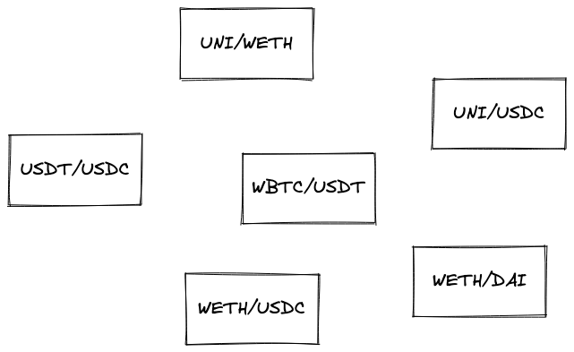
在这样一团混乱中，我们如何找到两个代币之间的最短路径？
对于这类任务，最合适的解决方案是基于图的。图是一种由节点（代表某些东西的对象）和边（连接节点的链接）组成的数据结构。我们可以将那些混乱的池子转换成一个图，其中每个节点是一个代币（有一个池子），每条边是该代币所属的池子。因此，用图表示的池子是两个由一条边连接的节点。上面的池子变成了这个图：
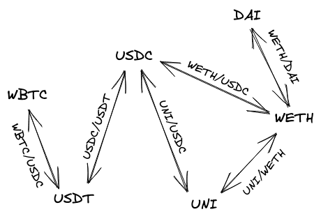
图给我们带来的最大优势是能够遍历其节点，从一个节点到另一个节点，以找到路径。具体来说，我们将使用A*搜索算法。你可以自由学习该算法的工作原理，但在我们的应用中，我们将使用一个库来简化我们的工作。我们将使用的库集是ngraph.ngraph用于构建图，以及ngraph.path用于寻找路径（后者实现了A*搜索算法以及其他一些算法）。
在UI应用中，让我们创建一个路径查找器。这将是一个类，当实例化时，将一系列代币对转换为图，以便稍后使用该图找到两个代币之间的最短路径。
import createGraph from 'ngraph.graph';
import path from 'ngraph.path';
class PathFinder {
constructor(pairs) {
this.graph = createGraph();
pairs.forEach((pair) => {
this.graph.addNode(pair.token0.address);
this.graph.addNode(pair.token1.address);
this.graph.addLink(pair.token0.address, pair.token1.address, pair.tickSpacing);
this.graph.addLink(pair.token1.address, pair.token0.address, pair.tickSpacing);
});
this.finder = path.aStar(this.graph);
}
...
在构造函数中，我们创建一个空图并用链接的节点填充它。每个节点是一个代币地址，链接具有相关数据，即tick间距——我们将能够从A找到的路径中提取这些信息。初始化图后，我们实例化A算法的实现。
接下来，我们需要实现一个函数，该函数将在代币之间找到路径并将其转换为代币地址和tick间距的数组：
findPath(fromToken, toToken) {
return this.finder.find(fromToken, toToken).reduce((acc, node, i, orig) => {
if (acc.length > 0) {
acc.push(this.graph.getLink(orig[i - 1].id, node.id).data);
}
acc.push(node.id);
return acc;
}, []).reverse();
}
this.finder.find(fromToken, toToken)返回一个节点列表，但遗憾的是，它不包含节点之间边的信息（我们在边中存储tick间距）。因此，我们调用this.graph.getLink(previousNode, currentNode)来查找边。
现在，每当用户更改输入或输出代币时，我们可以调用pathFinder.findPath(token0, token1)来构建一个新的路径。
Tick舍入
让我们回顾一下为支持不同的tick间距需要做的其他更改。
大于1的tick间距不允许用户选择任意价格范围：tick索引必须是tick间距的倍数。例如，对于tick间距60，我们可以有以下tick：0、60、120、180等。因此，当用户选择一个范围时，我们需要将其"舍入"，使其边界成为池子tick间距的倍数。
JavaScript中的nearestUsableTick
在Uniswap V3 SDK中，执行此操作的函数称为nearestUsableTick：
/**
* Returns the closest tick that is nearest a given tick and usable for the given tick spacing
* @param tick the target tick
* @param tickSpacing the spacing of the pool
*/
export function nearestUsableTick(tick: number, tickSpacing: number) {
invariant(Number.isInteger(tick) && Number.isInteger(tickSpacing), 'INTEGERS')
invariant(tickSpacing > 0, 'TICK_SPACING')
invariant(tick >= TickMath.MIN_TICK && tick <= TickMath.MAX_TICK, 'TICK_BOUND')
const rounded = Math.round(tick / tickSpacing) * tickSpacing
if (rounded < TickMath.MIN_TICK) return rounded + tickSpacing
else if (rounded > TickMath.MAX_TICK) return rounded - tickSpacing
else return rounded
}
从本质上讲，它只是：
Math.round(tick / tickSpacing) * tickSpacing
其中Math.round是舍入到最接近的整数：当小数部分小于0.5时，它向下舍入到较小的整数；当大于0.5时，它向上舍入到较大的整数；当等于0.5时，它也向上舍入到较大的整数。
因此，在网页应用中，我们在构建mint参数时将使用nearestUsableTick：
const mintParams = {
tokenA: pair.token0.address,
tokenB: pair.token1.address,
tickSpacing: pair.tickSpacing,
lowerTick: nearestUsableTick(lowerTick, pair.tickSpacing),
upperTick: nearestUsableTick(upperTick, pair.tickSpacing),
amount0Desired, amount1Desired, amount0Min, amount1Min
}
实际上，每当用户调整价格范围时都应该调用它，因为我们希望用户看到将要创建的实际价格。在我们简化的应用中，我们使其不那么用户友好。
然而，我们还希望在Solidity测试中有一个类似的函数，但我们使用的数学库都没有实现它。
Solidity中的nearestUsableTick
在我们的智能合约测试中，我们需要一种方法来舍入tick并将舍入后的价格转换为。在前面的章节中，我们选择使用ABDKMath64x64来处理测试中的定点数学运算。然而，该库并没有实现我们需要移植nearestUsableTick的舍入函数，所以我们需要自己实现它：
function divRound(int128 x, int128 y)
internal
pure
returns (int128 result)
{
int128 quot = ABDKMath64x64.div(x, y);
result = quot >> 64;
// Check if remainder is greater than 0.5
if (quot % 2**64 >= 0x8000000000000000) {
result += 1;
}
}
该函数执行多个操作：
-
它将两个Q64.64数相除；
-
然后将结果舍入到小数点前一位（
result = quot >> 64），此时小数部分丢失（即结果向下舍入）； -
然后将商除以，取余数，并与
0x8000000000000000（在Q64.64中为0.5）进行比较； -
如果余数大于或等于0.5，则将结果向上舍入到较大的整数。
我们得到的是根据JavaScript中Math.round规则舍入的整数。然后我们可以重新实现nearestUsableTick：
function nearestUsableTick(int24 tick_, uint24 tickSpacing)
internal
pure
returns (int24 result)
{
result =
int24(divRound(int128(tick_), int128(int24(tickSpacing)))) *
int24(tickSpacing);
if (result < TickMath.MIN_TICK) {
result += int24(tickSpacing);
} else if (result > TickMath.MAX_TICK) {
result -= int24(tickSpacing);
}
}
就是这样！
手续费和价格预言机
在这个里程碑中，我们将为我们的 Uniswap 实现添加两个新功能。它们有一个共同点：它们都是建立在我们已经构建的基础之上——这就是为什么我们将它们推迟到这个里程碑。然而，它们的重要性并不相同。
我们将添加交换手续费和价格预言机：
-
交换手续费是我们正在实现的 DEX 设计中的一个关键机制。它们是使整个系统粘合在一起的胶水。交换手续费激励流动性提供者提供流动性，而没有流动性就无法进行交易，这一点我们已经了解过了。
-
另一方面，价格预言机是 DEX 的一个可选的实用功能。DEX 在进行交易的同时，也可以充当价格预言机——即为其他服务提供代币价格。这不会影响实际的交换，但为其他链上应用提供了有用的服务。
好了，让我们开始构建吧！
你可以在这个 Github 分支中找到本章的完整代码。
这个里程碑对现有合约引入了许多代码更改。在这里你可以看到自上一个里程碑以来的所有变更
如果你有任何问题，欢迎在本里程碑的 GitHub 讨论区中提出！
交换费用
正如我在介绍中提到的，交换费用是Uniswap的核心机制。流动性提供者需要为他们提供的流动性获得报酬，否则他们就会将其用在其他地方。为了激励他们，每次交换时都会收取少量费用。这些费用然后按比例（与其在总池流动性中的份额成比例）分配给所有流动性提供者。
为了更好地理解费用收集和分配的机制，让我们看看它们是如何工作的。
如何收集交换费用
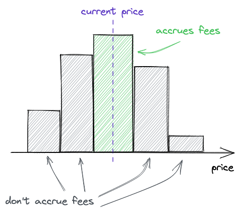
交换费用只在价格范围被使用（用于交易）时才会被收集。所以我们需要跟踪价格范围边界被跨越的时刻。这是价格范围开始被使用的时候，也是我们想要开始为其收集费用的时候：
-
当价格上升并且从左到右跨越一个tick时；
-
当价格下降并且从右到左跨越一个tick时。
这是价格范围停止被使用的时候：
-
当价格上升并且从右到左跨越一个tick时；
-
当价格下降并且从左到右跨越一个tick时。
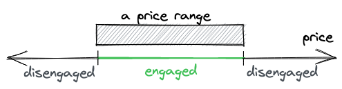
除了知道价格范围何时开始/停止使用外，我们还想跟踪每个价格范围累积了多少费用。
为了简化费用核算，Uniswap V3跟踪1单位流动性产生的全局费用。然后根据全局费用计算价格范围费用：从全局费用中减去价格范围外累积的费用。当跨越tick时（当交换移动价格时会跨越tick；费用在交换期间收集）会跟踪价格范围外累积的费用。采用这种方法，我们不需要在每次交换时更新每个头寸累积的费用——这使我们能够节省大量gas并使与池的交互更便宜。
让我们回顾一下，以便在继续之前有一个清晰的画面：
-
费用由交换代币的用户支付。从输入代币中扣除一小部分并累积在池的余额中。
-
每个池都有
feeGrowthGlobal0X128和feeGrowthGlobal1X128状态变量，用于跟踪每单位流动性累积的总费用（即费用金额除以池的流动性）。 -
请注意，此时实际头寸并未更新，以优化gas使用。
-
Tick保留了其外部累积的费用记录。当添加新头寸并激活tick（向先前空的tick添加流动性）时，tick记录了其外部累积了多少费用（按惯例，我们假设所有费用都累积在tick以下）。
-
每当激活一个tick时，其外部累积的费用会更新为全局累积的费用与自上次跨越以来tick外部累积的费用之间的差额。
-
有了知道其外部累积了多少费用的tick，我们就能计算出一个头寸内部累积了多少费用（头寸是两个tick之间的范围）。
-
知道一个头寸内部累积了多少费用，我们就能计算流动性提供者有资格获得的费用份额。如果一个头寸没有参与交换，它内部累积的费用将为零，为这个范围提供流动性的流动性提供者将没有从中获得利润。
现在，让我们看看如何计算头寸累积的费用（第6步）。
计算头寸累积的费用
要计算头寸累积的总费用，我们需要考虑两种情况：当前价格在头寸内部和当前价格在头寸外部。在这两种情况下，我们都从全局收集的费用中减去头寸的下限和上限tick外部收集的费用。然而，根据当前价格，我们计算这些费用的方式不同。
当当前价格在头寸内部时，我们减去到此刻为止tick外部收集的费用：
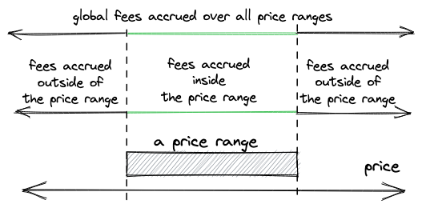
当当前价格在头寸外部时，我们需要在从全局收集的费用中减去它们之前更新上限或下限tick收集的费用。我们只为计算更新它们，不覆盖tick中的值，因为tick没有被跨越。
这是我们如何更新tick外部收集的费用：
tick外部收集的费用（）是全局收集的费用（）与上次跨越时tick外部收集的费用之间的差额。我们在跨越tick时某种程度上重置了计数器。
要计算头寸内部收集的费用：
我们从所有价格范围全局收集的费用（）中减去其下限tick以下收集的费用（）和上限tick以上收集的费用（）。这就是我们在上面的插图中看到的。
现在，当当前价格高于下限tick时（即头寸被使用），我们不需要更新下限tick以下累积的费用，可以直接从下限tick中获取。当当前价格低于上限tick时，上限tick外部收集的费用也是如此。在其他两种情况下，我们需要考虑更新后的费用：
-
当获取下限tick以下收集的费用，且当前价格也低于该tick时（下限tick最近没有被跨越）。
-
当获取上限tick以上的费用，且当前价格也高于该tick时（上限tick最近没有被跨越）。
我希望这不会太令人困惑。幸运的是，我们现在知道了开始编码所需的一切！
累积交换费用
为了保持简单，我们将逐步将费用添加到我们的代码库中。我们将从累积交换费用开始。
添加所需的状态变量
我们需要做的第一件事是将费用金额参数添加到Pool中——每个池在部署期间都将配置一个固定且不可变的费用。在上一章中，我们添加了统一和简化池部署的Factory合约。所需的池参数之一是tick间距。现在，我们将用费用金额替换它，并将费用金额与tick间距关联起来：费用金额越大，tick间距越大。这是为了让低波动性池（稳定币池）有较低的费用。
让我们更新Factory：
// src/UniswapV3Factory.sol
contract UniswapV3Factory is IUniswapV3PoolDeployer {
...
mapping(uint24 => uint24) public fees; // `tickSpacings` replaced by `fees`
constructor() {
fees[500] = 10;
fees[3000] = 60;
}
function createPool(
address tokenX,
address tokenY,
uint24 fee
) public returns (address pool) {
...
parameters = PoolParameters({
factory: address(this),
token0: tokenX,
token1: tokenY,
tickSpacing: fees[fee],
fee: fee
});
...
}
}
费用金额是基点的百分之一。也就是说，1个费用单位是0.0001%，500是0.05%，3000是0.3%。
下一步是开始在Pool中累积费用。为此，我们将添加两个全局费用累积器变量：
// src/UniswapV3Pool.sol
contract UniswapV3Pool is IUniswapV3Pool {
...
uint24 public immutable fee;
uint256 public feeGrowthGlobal0X128;
uint256 public feeGrowthGlobal1X128;
}
索引为0的变量跟踪以token0累积的费用，索引为1的变量跟踪以token1累积的费用。
收集费用
现在我们需要更新SwapMath.computeSwapStep——这是我们计算交换金额的地方，也是我们将计算和扣除交换费用的地方。在函数中，我们将所有出现的amountRemaining替换为amountRemainingLessFee：
uint256 amountRemainingLessFee = PRBMath.mulDiv(
amountRemaining,
1e6 - fee,
1e6
);
因此，我们从输入代币金额中扣除费用，并从较小的输入金额计算输出金额。
该函数现在还返回在此步骤中收集的费用金额——根据是否达到范围的上限，计算方式有所不同：
bool max = sqrtPriceNextX96 == sqrtPriceTargetX96;
if (!max) {
feeAmount = amountRemaining - amountIn;
} else {
feeAmount = Math.mulDivRoundingUp(amountIn, fee, 1e6 - fee);
}
当未达到上限时，当前价格范围有足够的流动性来完成交换，因此我们只需返回我们需要完成的金额与实际完成金额之间的差额。注意，这里不涉及amountRemainingLessFee，因为实际最终金额是在amountIn中计算的（它是基于可用流动性计算的）。
当达到目标价格时，我们不能从整个amountRemaining中扣除费用，因为当前价格范围没有足够的流动性来完成交换。因此，费用金额是从当前价格范围已完成的金额（amountIn）中扣除的。
在SwapMath.computeSwapStep返回后，我们需要更新交换累积的费用。注意，只有一个变量来跟踪它们，因为在开始交换时，我们已经知道输入代币（在交换过程中，费用只在token0或token1中收集，而不是两者都收集）：
SwapState memory state = SwapState({
...
feeGrowthGlobalX128: zeroForOne
? feeGrowthGlobal0X128
: feeGrowthGlobal1X128
});
(...) = SwapMath.computeSwapStep(...);
state.feeGrowthGlobalX128 += PRBMath.mulDiv(
step.feeAmount,
FixedPoint128.Q128,
state.liquidity
);
这里我们根据流动性的数量调整累积的费用，以便后续公平地在流动性提供者之间分配费用。
更新Tick中的费用跟踪器
接下来，如果在交换过程中跨越了一个tick（跨越tick意味着我们进入了一个新的价格范围），我们需要更新该tick中的费用跟踪器：
if (state.sqrtPriceX96 == step.sqrtPriceNextX96) {
int128 liquidityDelta = ticks.cross(
step.nextTick,
(
zeroForOne
? state.feeGrowthGlobalX128
: feeGrowthGlobal0X128
),
(
zeroForOne
? feeGrowthGlobal1X128
: state.feeGrowthGlobalX128
)
);
...
}
由于我们此时还没有更新feeGrowthGlobal0X128/feeGrowthGlobal1X128状态变量，我们根据交换方向将state.feeGrowthGlobalX128作为其中一个费用参数传递。cross函数按照我们上面讨论的方式更新费用跟踪器：
// src/lib/Tick.sol
function cross(
mapping(int24 => Tick.Info) storage self,
int24 tick,
uint256 feeGrowthGlobal0X128,
uint256 feeGrowthGlobal1X128
) internal returns (int128 liquidityDelta) {
Tick.Info storage info = self[tick];
info.feeGrowthOutside0X128 =
feeGrowthGlobal0X128 -
info.feeGrowthOutside0X128;
info.feeGrowthOutside1X128 =
feeGrowthGlobal1X128 -
info.feeGrowthOutside1X128;
liquidityDelta = info.liquidityNet;
}
我们还没有添加
feeGrowthOutside0X128/feeGrowthOutside1X128变量的初始化——我们将在后面的步骤中完成这个。
更新全局费用跟踪器
最后，在交换完成后，我们可以更新全局费用跟踪器：
if (zeroForOne) {
feeGrowthGlobal0X128 = state.feeGrowthGlobalX128;
} else {
feeGrowthGlobal1X128 = state.feeGrowthGlobalX128;
}
再次强调，在交换过程中，只有其中一个会被更新，因为费用是从输入代币中收取的，根据交换方向，这可能是token0或token1中的任一个。
这就是关于交换的全部内容！现在让我们看看当添加流动性时，费用会发生什么变化。
头寸管理中的费用跟踪
当添加或移除流动性时（我们还没有实现后者），我们也需要初始化或更新费用。费用需要在tick（tick外部累积的费用——我们刚刚添加的feeGrowthOutside变量）和头寸（头寸内部累积的费用）中都进行跟踪。对于头寸，我们还需要跟踪和更新作为费用收集的代币数量——换句话说，我们将每单位流动性的费用转换为代币数量。后者是必要的，这样当流动性提供者移除流动性时，他们可以获得作为交换费用收集的额外代币。
让我们再次逐步进行。
Tick中费用跟踪器的初始化
在Tick.update函数中，每当初始化一个tick（向先前空的tick添加流动性）时，我们都会初始化其费用跟踪器。然而，我们只在tick低于当前价格时这样做，即当它在当前价格范围内时：
// src/lib/Tick.sol
function update(
mapping(int24 => Tick.Info) storage self,
int24 tick,
int24 currentTick,
int128 liquidityDelta,
uint256 feeGrowthGlobal0X128,
uint256 feeGrowthGlobal1X128,
bool upper
) internal returns (bool flipped) {
...
if (liquidityBefore == 0) {
// by convention, assume that all previous fees were collected below
// the tick
if (tick <= currentTick) {
tickInfo.feeGrowthOutside0X128 = feeGrowthGlobal0X128;
tickInfo.feeGrowthOutside1X128 = feeGrowthGlobal1X128;
}
tickInfo.initialized = true;
}
...
}
如果它不在当前价格范围内，其费用跟踪器将为0，并且它们将在下次跨越该tick时更新（参见我们上面更新的cross函数）。
更新头寸费用和代币数量
下一步是计算头寸累积的费用和代币。由于头寸是两个tick之间的范围，我们将使用我们在上一步中添加到tick的费用跟踪器来计算这些值。下一个函数可能看起来有些混乱，但它实现了我们之前看到的精确的价格范围费用公式：
// src/lib/Tick.sol
function getFeeGrowthInside(
mapping(int24 => Tick.Info) storage self,
int24 lowerTick_,
int24 upperTick_,
int24 currentTick,
uint256 feeGrowthGlobal0X128,
uint256 feeGrowthGlobal1X128
)
internal
view
returns (uint256 feeGrowthInside0X128, uint256 feeGrowthInside1X128)
{
Tick.Info storage lowerTick = self[lowerTick_];
Tick.Info storage upperTick = self[upperTick_];
uint256 feeGrowthBelow0X128;
uint256 feeGrowthBelow1X128;
if (currentTick >= lowerTick_) {
feeGrowthBelow0X128 = lowerTick.feeGrowthOutside0X128;
feeGrowthBelow1X128 = lowerTick.feeGrowthOutside1X128;
} else {
feeGrowthBelow0X128 =
feeGrowthGlobal0X128 -
lowerTick.feeGrowthOutside0X128;
feeGrowthBelow1X128 =
feeGrowthGlobal1X128 -
lowerTick.feeGrowthOutside1X128;
}
uint256 feeGrowthAbove0X128;
uint256 feeGrowthAbove1X128;
if (currentTick < upperTick_) {
feeGrowthAbove0X128 = upperTick.feeGrowthOutside0X128;
feeGrowthAbove1X128 = upperTick.feeGrowthOutside1X128;
} else {
feeGrowthAbove0X128 =
feeGrowthGlobal0X128 -
upperTick.feeGrowthOutside0X128;
feeGrowthAbove1X128 =
feeGrowthGlobal1X128 -
upperTick.feeGrowthOutside1X128;
}
feeGrowthInside0X128 =
feeGrowthGlobal0X128 -
feeGrowthBelow0X128 -
feeGrowthAbove0X128;
feeGrowthInside1X128 =
feeGrowthGlobal1X128 -
feeGrowthBelow1X128 -
feeGrowthAbove1X128;
}
在这里，我们计算两个tick之间（价格范围内）累积的费用。为此，我们首先计算下限tick以下累积的费用，然后计算上限tick以上累积的费用。最后，我们从全局累积的费用中减去这些费用。这就是我们之前看到的公式：
在计算tick上方和下方收集的费用时，我们根据价格范围是否被使用（当前价格是否在价格范围的边界tick之间）采用不同的方法。当它被使用时，我们简单地使用tick的当前费用跟踪器；当它未被使用时，我们需要使用tick的更新后的费用跟踪器——你可以在上面代码的两个else分支中看到这些计算。
在找到头寸内累积的费用后，我们就可以更新头寸的费用和代币数量跟踪器了：
// src/lib/Position.sol
function update(
Info storage self,
int128 liquidityDelta,
uint256 feeGrowthInside0X128,
uint256 feeGrowthInside1X128
) internal {
uint128 tokensOwed0 = uint128(
PRBMath.mulDiv(
feeGrowthInside0X128 - self.feeGrowthInside0LastX128,
self.liquidity,
FixedPoint128.Q128
)
);
uint128 tokensOwed1 = uint128(
PRBMath.mulDiv(
feeGrowthInside1X128 - self.feeGrowthInside1LastX128,
self.liquidity,
FixedPoint128.Q128
)
);
self.liquidity = LiquidityMath.addLiquidity(
self.liquidity,
liquidityDelta
);
self.feeGrowthInside0LastX128 = feeGrowthInside0X128;
self.feeGrowthInside1LastX128 = feeGrowthInside1X128;
if (tokensOwed0 > 0 || tokensOwed1 > 0) {
self.tokensOwed0 += tokensOwed0;
self.tokensOwed1 += tokensOwed1;
}
}
在计算欠付的代币时，我们将头寸累积的费用乘以流动性——这与我们在交换过程中所做的相反。最后，我们更新费用跟踪器，并将代币数量添加到先前跟踪的数量中。
现在，每当修改头寸（在添加或移除流动性期间），我们都会计算头寸收集的费用并更新头寸：
// src/UniswapV3Pool.sol
function mint(...) {
...
bool flippedLower = ticks.update(params.lowerTick, ...);
bool flippedUpper = ticks.update(params.upperTick, ...);
...
(uint256 feeGrowthInside0X128, uint256 feeGrowthInside1X128) = ticks
.getFeeGrowthInside(
params.lowerTick,
params.upperTick,
slot0_.tick,
feeGrowthGlobal0X128_,
feeGrowthGlobal1X128_
);
position.update(
params.liquidityDelta,
feeGrowthInside0X128,
feeGrowthInside1X128
);
...
}
移除流动性
我们现在准备添加我们尚未实现的唯一核心功能——移除流动性。与铸造相对，我们将这个函数称为burn。这个函数将允许流动性提供者从他们之前添加流动性的头寸中移除部分或全部流动性。除此之外，它还将计算流动性提供者有资格获得的费用代币。然而，实际的代币转移将在一个单独的函数——collect中完成。
销毁流动性
销毁流动性与铸造相对。我们当前的设计和实现使这成为一个无麻烦的任务：销毁流动性简单地说就是带负号的铸造。它就像添加一个负数量的流动性。
为了实现
burn，我需要重构代码并将所有与头寸管理相关的内容（更新tick和头寸，以及代币数量计算）提取到_modifyPosition函数中，该函数被mint和burn函数共同使用。
function burn(
int24 lowerTick,
int24 upperTick,
uint128 amount
) public returns (uint256 amount0, uint256 amount1) {
(
Position.Info storage position,
int256 amount0Int,
int256 amount1Int
) = _modifyPosition(
ModifyPositionParams({
owner: msg.sender,
lowerTick: lowerTick,
upperTick: upperTick,
liquidityDelta: -(int128(amount))
})
);
amount0 = uint256(-amount0Int);
amount1 = uint256(-amount1Int);
if (amount0 > 0 || amount1 > 0) {
(position.tokensOwed0, position.tokensOwed1) = (
position.tokensOwed0 + uint128(amount0),
position.tokensOwed1 + uint128(amount1)
);
}
emit Burn(msg.sender, lowerTick, upperTick, amount, amount0, amount1);
}
在burn函数中，我们首先更新一个头寸并从中移除一定数量的流动性。然后，我们更新头寸所欠的代币数量——它们现在包括通过费用累积的数量以及之前作为流动性提供的数量。我们也可以将此视为将头寸流动性转换为头寸所欠的代币数量——这些数量不再用作流动性，可以通过调用collect函数自由赎回：
function collect(
address recipient,
int24 lowerTick,
int24 upperTick,
uint128 amount0Requested,
uint128 amount1Requested
) public returns (uint128 amount0, uint128 amount1) {
Position.Info storage position = positions.get(
msg.sender,
lowerTick,
upperTick
);
amount0 = amount0Requested > position.tokensOwed0
? position.tokensOwed0
: amount0Requested;
amount1 = amount1Requested > position.tokensOwed1
? position.tokensOwed1
: amount1Requested;
if (amount0 > 0) {
position.tokensOwed0 -= amount0;
IERC20(token0).transfer(recipient, amount0);
}
if (amount1 > 0) {
position.tokensOwed1 -= amount1;
IERC20(token1).transfer(recipient, amount1);
}
emit Collect(
msg.sender,
recipient,
lowerTick,
upperTick,
amount0,
amount1
);
}
这个函数简单地从池中转移代币，并确保只能转移有效的数量（一个人不能转出超过他们销毁的数量加上他们赚取的费用）。
还有一种方法可以只收集费用而不销毁流动性：销毁0数量的流动性，然后调用collect。在销毁过程中，头寸将被更新，它所欠的代币数量也将被更新。
就是这样！我们的池实现现在完成了！
闪电贷费用
在前一章中，我们实现了闪电贷并使其免费。然而，Uniswap在闪电贷上收取交换费用，我们将把这一点添加到我们的实现中：闪电贷借款人偿还的金额必须包含费用。
以下是更新后的flash函数的样子：
function flash(
uint256 amount0,
uint256 amount1,
bytes calldata data
) public {
uint256 fee0 = Math.mulDivRoundingUp(amount0, fee, 1e6);
uint256 fee1 = Math.mulDivRoundingUp(amount1, fee, 1e6);
uint256 balance0Before = IERC20(token0).balanceOf(address(this));
uint256 balance1Before = IERC20(token1).balanceOf(address(this));
if (amount0 > 0) IERC20(token0).transfer(msg.sender, amount0);
if (amount1 > 0) IERC20(token1).transfer(msg.sender, amount1);
IUniswapV3FlashCallback(msg.sender).uniswapV3FlashCallback(
fee0,
fee1,
data
);
if (IERC20(token0).balanceOf(address(this)) < balance0Before + fee0)
revert FlashLoanNotPaid();
if (IERC20(token1).balanceOf(address(this)) < balance1Before + fee1)
revert FlashLoanNotPaid();
emit Flash(msg.sender, amount0, amount1);
}
变化的是，我们现在对调用者请求的金额计算费用，然后期望池子余额增加相应的费用金额。
协议费用
在实现Uniswap的过程中，你可能会问自己："Uniswap是如何盈利的？"事实上，它并不盈利（至少截至2022年9月）。
在我们目前构建的实现中，交易者为提供流动性的流动性提供者支付费用，而Uniswap Labs作为开发这个DEX的公司，并不参与这个过程。无论是交易者还是流动性提供者都不需要为使用Uniswap DEX向Uniswap Labs支付费用。这是为什么呢？
其实Uniswap Labs有一种方式可以开始从DEX中获利。然而，这个机制尚未启用（同样，截至2022年9月）。每个Uniswap池都有一个协议费用收集机制。协议费用是从交换费用中收取的：交换费用中的一小部分被扣除并保存为协议费用，以便后续由Factory合约所有者（Uniswap Labs）收集。协议费用的大小预计将由UNI代币持有者决定，但必须在交换费用的到之间（包括这两个值）。
为了简洁起见，我们不会在我们的实现中添加协议费用，但让我们看看它们在Uniswap中是如何实现的。
协议费用大小存储在slot0中：
// UniswapV3Pool.sol
struct Slot0 {
...
// the current protocol fee as a percentage of the swap fee taken on withdrawal
// represented as an integer denominator (1/x)%
uint8 feeProtocol;
...
}
需要一个全局累加器来跟踪累积的费用：
// accumulated protocol fees in token0/token1 units
struct ProtocolFees {
uint128 token0;
uint128 token1;
}
ProtocolFees public override protocolFees;
协议费用在setFeeProtocol函数中设置：
function setFeeProtocol(uint8 feeProtocol0, uint8 feeProtocol1) external override lock onlyFactoryOwner {
require(
(feeProtocol0 == 0 || (feeProtocol0 >= 4 && feeProtocol0 <= 10)) &&
(feeProtocol1 == 0 || (feeProtocol1 >= 4 && feeProtocol1 <= 10))
);
uint8 feeProtocolOld = slot0.feeProtocol;
slot0.feeProtocol = feeProtocol0 + (feeProtocol1 << 4);
emit SetFeeProtocol(feeProtocolOld % 16, feeProtocolOld >> 4, feeProtocol0, feeProtocol1);
}
如你所见，允许为每个代币单独设置协议费用。这两个值是两个uint8，它们被打包存储在一个uint8中：feeProtocol1向左移4位（这等同于乘以16）并加上feeProtocol0。要解包feeProtocol0，取slot0.feeProtocol除以16的余数；feeProtocol1只需将slot0.feeProtocol向右移4位。这种打包方式之所以有效，是因为feeProtocol0和feeProtocol1都不能大于10。
在开始交换之前，我们需要根据交换方向选择其中一个协议费用（交换费用和协议费用是在输入代币上收取的）：
function swap(...) {
...
uint8 feeProtocol = zeroForOne ? (slot0_.feeProtocol % 16) : (slot0_.feeProtocol >> 4);
...
为了累积协议费用，我们在计算交换步骤金额后立即从交换费用中扣除它们：
...
while (...) {
(..., step.feeAmount) = SwapMath.computeSwapStep(...);
if (cache.feeProtocol > 0) {
uint256 delta = step.feeAmount / cache.feeProtocol;
step.feeAmount -= delta;
state.protocolFee += uint128(delta);
}
...
}
...
在交换完成后，需要更新全局协议费用累加器：
if (zeroForOne) {
if (state.protocolFee > 0) protocolFees.token0 += state.protocolFee;
} else {
if (state.protocolFee > 0) protocolFees.token1 += state.protocolFee;
}
最后，Factory合约所有者可以通过调用collectProtocol来收集累积的协议费用：
function collectProtocol(
address recipient,
uint128 amount0Requested,
uint128 amount1Requested
) external override lock onlyFactoryOwner returns (uint128 amount0, uint128 amount1) {
amount0 = amount0Requested > protocolFees.token0 ? protocolFees.token0 : amount0Requested;
amount1 = amount1Requested > protocolFees.token1 ? protocolFees.token1 : amount1Requested;
if (amount0 > 0) {
if (amount0 == protocolFees.token0) amount0--;
protocolFees.token0 -= amount0;
TransferHelper.safeTransfer(token0, recipient, amount0);
}
if (amount1 > 0) {
if (amount1 == protocolFees.token1) amount1--;
protocolFees.token1 -= amount1;
TransferHelper.safeTransfer(token1, recipient, amount1);
}
emit CollectProtocol(msg.sender, recipient, amount0, amount1);
}
价格预言机
我们将要添加到我们的DEX中的最后一个机制是价格预言机。尽管它对DEX来说并不是必需的（有些DEX并不实现价格预言机），但它仍然是Uniswap的一个重要特性，也是值得学习的有趣内容。
什么是价格预言机？
价格预言机是一种为区块链提供资产价格的机制。由于区块链是孤立的生态系统，没有直接查询外部数据的方法，例如通过API从中心化交易所获取资产价格。另一个非常困难的问题是数据的有效性和真实性：当从交易所获取价格时，你如何知道它们是真实的？你必须信任数据源。但互联网通常不安全，有时价格可能被操纵，DNS记录可能被劫持，API服务器可能宕机等。所有这些困难都需要解决，以便我们能够获得可靠和正确的链上价格。
解决上述问题的第一个可行方案之一是Chainlink。Chainlink运行一个去中心化的预言机网络，通过API从中心化交易所获取资产价格，对它们进行平均，并以防篡改的方式在链上提供。Chainlink是一组合约，其中有一个状态变量，即资产价格，任何人（任何其他合约或用户）都可以读取，但只能由预言机写入。
这是看待价格预言机的一种方式。还有另一种方式。
如果我们有原生的链上交易所，为什么还需要从外部获取价格？这就是Uniswap价格预言机的工作原理。由于套利和高流动性，Uniswap上的资产价格接近中心化交易所的价格。因此，我们可以使用Uniswap作为资产价格的真实来源，而不是使用中心化交易所，我们也不需要解决与将数据传递到链上相关的问题（我们也不需要信任数据提供者）。
Uniswap价格预言机如何工作
Uniswap只是保留了所有先前交换价格的记录。就是这样。但是，Uniswap不是跟踪实际价格，而是跟踪累积价格，即池合约历史中每秒价格的总和。
这种方法允许我们通过简单地获取这两个时间点（和）的累积价格（和），将一个从另一个中减去，然后除以两个点之间的秒数，来找到两个时间点之间的时间加权平均价格：
这是Uniswap V2的工作方式。在V3中，略有不同。累积价格是当前的tick（即价格的）：
并且不是平均价格，而是取几何平均值：
要找到两个时间点之间的时间加权几何平均价格，我们取这两个时间点的累积值，将一个从另一个中减去，除以两个点之间的秒数，然后计算：
Uniswap V2没有存储历史累积价格，这需要参考第三方区块链数据索引服务来找到历史价格，以计算平均价格。另一方面，Uniswap V3允许存储多达65,535个历史累积价格，这使得计算任何历史时间加权几何价格变得更加容易。
价格操纵缓解
另一个重要的话题是价格操纵以及Uniswap如何缓解它。
理论上可以操纵池的价格以获得优势：例如，购买大量代币以提高其价格，并在使用Uniswap价格预言机的第三方DeFi服务上获利，然后将代币交易回真实价格。为了缓解这种攻击，Uniswap在区块结束时跟踪价格，即在区块的最后一笔交易之后。这消除了区块内价格操纵的可能性。
从技术上讲，Uniswap预言机中的价格在每个区块开始时更新，每个价格在区块的第一次交换之前计算。
价格预言机实现
好的，让我们开始编码。
观察和基数
我们将从创建Oracle库合约和Observation结构开始：
// src/lib/Oracle.sol
library Oracle {
struct Observation {
uint32 timestamp;
int56 tickCumulative;
bool initialized;
}
...
}
观察是存储记录价格的槽位。它存储一个价格、记录该价格的时间戳，以及当观察被激活时设置为true的initialized标志（默认情况下并非所有观察都被激活）。一个池合约可以存储多达65,535个观察：
// src/UniswapV3Pool.sol
contract UniswapV3Pool is IUniswapV3Pool {
using Oracle for Oracle.Observation[65535];
...
Oracle.Observation[65535] public observations;
}
然而，由于存储如此多的Observation实例需要大量的gas（有人必须为将每个实例写入合约存储付费），默认情况下，一个池只能存储1个观察，每次记录新价格时都会覆盖它。观察的数量，即观察的基数，可以随时由愿意为此付费的任何人增加。为了管理基数，我们需要一些额外的状态变量：
...
struct Slot0 {
// Current sqrt(P)
uint160 sqrtPriceX96;
// Current tick
int24 tick;
// Most recent observation index
uint16 observationIndex;
// Maximum number of observations
uint16 observationCardinality;
// Next maximum number of observations
uint16 observationCardinalityNext;
}
...
-
observationIndex跟踪最新观察的索引； -
observationCardinality跟踪已激活的观察数量； -
observationCardinalityNext跟踪观察数组可以扩展到的下一个基数。
观察存储在一个固定长度的数组中，当保存新的观察且observationCardinalityNext大于observationCardinality时（这表示基数可以扩展），该数组会扩展。如果数组无法扩展（下一个基数值等于当前值），最旧的观察会被覆盖，即观察存储在索引0处，下一个存储在索引1处，依此类推。
当创建池时，observationCardinality和observationCardinalityNext被设置为1：
// src/UniswapV3Pool.sol
contract UniswapV3Pool is IUniswapV3Pool {
function initialize(uint160 sqrtPriceX96) public {
...
(uint16 cardinality, uint16 cardinalityNext) = observations.initialize(
_blockTimestamp()
);
slot0 = Slot0({
sqrtPriceX96: sqrtPriceX96,
tick: tick,
observationIndex: 0,
observationCardinality: cardinality,
observationCardinalityNext: cardinalityNext
});
}
}
// src/lib/Oracle.sol
library Oracle {
...
function initialize(Observation[65535] storage self, uint32 time)
internal
returns (uint16 cardinality, uint16 cardinalityNext)
{
self[0] = Observation({
timestamp: time,
tickCumulative: 0,
initialized: true
});
cardinality = 1;
cardinalityNext = 1;
}
...
}
写入观察
在swap函数中，当当前价格发生变化时，一个观察会被写入观察数组：
// src/UniswapV3Pool.sol
contract UniswapV3Pool is IUniswapV3Pool {
function swap(...) public returns (...) {
...
if (state.tick != slot0_.tick) {
(
uint16 observationIndex,
uint16 observationCardinality
) = observations.write(
slot0_.observationIndex,
_blockTimestamp(),
slot0_.tick,
slot0_.observationCardinality,
slot0_.observationCardinalityNext
);
(
slot0.sqrtPriceX96,
slot0.tick,
slot0.observationIndex,
slot0.observationCardinality
) = (
state.sqrtPriceX96,
state.tick,
observationIndex,
observationCardinality
);
}
...
}
}
注意，这里观察到的tick是slot0_.tick（而不是state.tick），即交换前的价格！它在下一个语句中用新价格更新。这就是我们之前讨论的价格操纵缓解措施：Uniswap在区块中的第一笔交易之前和前一个区块的最后一笔交易之后跟踪价格。
还要注意，每个观察都由_blockTimestamp()标识，即当前区块的时间戳。这意味着如果当前区块已经有了观察，则不会记录价格。如果当前区块没有观察（即这是区块中的第一次交换），则会记录价格。这是价格操纵缓解机制的一部分。
// src/lib/Oracle.sol
function write(
Observation[65535] storage self,
uint16 index,
uint32 timestamp,
int24 tick,
uint16 cardinality,
uint16 cardinalityNext
) internal returns (uint16 indexUpdated, uint16 cardinalityUpdated) {
Observation memory last = self[index];
if (last.timestamp == timestamp) return (index, cardinality);
if (cardinalityNext > cardinality && index == (cardinality - 1)) {
cardinalityUpdated = cardinalityNext;
} else {
cardinalityUpdated = cardinality;
}
indexUpdated = (index + 1) % cardinalityUpdated;
self[indexUpdated] = transform(last, timestamp, tick);
}
在这里，我们看到当当前区块已经有观察时，会跳过一个观察。但是，如果没有这样的观察，我们就会保存一个新的观察，并在可能的情况下尝试扩展基数。模运算符（%）确保观察索引保持在范围内，并在达到上限时重置为0。
现在，让我们看看transform函数：
function transform(
Observation memory last,
uint32 timestamp,
int24 tick
) internal pure returns (Observation memory) {
uint56 delta = timestamp - last.timestamp;
return
Observation({
timestamp: timestamp,
tickCumulative: last.tickCumulative +
int56(tick) *
int56(delta),
initialized: true
});
}
我们在这里计算的是累积价格：当前的tick乘以自上次观察以来的秒数，然后加到上一次的累积价格上。
增加基数
现在让我们看看如何扩展基数。
任何人在任何时候都可以增加池的观察基数，并支付所需的gas费用。为此，我们将在Pool合约中添加一个新的公共函数：
// src/UniswapV3Pool.sol
function increaseObservationCardinalityNext(
uint16 observationCardinalityNext
) public {
uint16 observationCardinalityNextOld = slot0.observationCardinalityNext;
uint16 observationCardinalityNextNew = observations.grow(
observationCardinalityNextOld,
observationCardinalityNext
);
if (observationCardinalityNextNew != observationCardinalityNextOld) {
slot0.observationCardinalityNext = observationCardinalityNextNew;
emit IncreaseObservationCardinalityNext(
observationCardinalityNextOld,
observationCardinalityNextNew
);
}
}
以及Oracle中的一个新函数：
// src/lib/Oracle.sol
function grow(
Observation[65535] storage self,
uint16 current,
uint16 next
) internal returns (uint16) {
if (next <= current) return current;
for (uint16 i = current; i < next; i++) {
self[i].timestamp = 1;
}
return next;
}
在grow函数中，我们通过将每个新观察的timestamp字段设置为一些非零值来分配新的观察。注意，self是一个存储变量，给它的元素赋值将更新数组计数器并将值写入合约的存储。
读取观察
我们终于来到了本章最棘手的部分：读取观察。在继续之前，让我们回顾一下观察是如何存储的，以获得更好的理解。
观察存储在一个可以扩展的固定长度数组中：
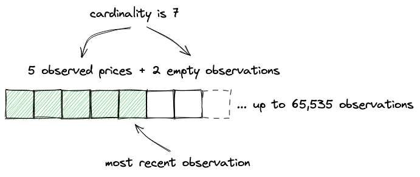
如上所述，观察预计会溢出：如果新的观察不适合数组，写入将从索引0开始继续，即最旧的观察会被覆盖：
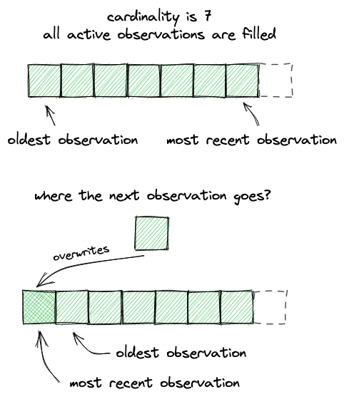
不能保证每个区块都会存储一个观察，因为并非每个区块都发生交换。因此，会有一些区块没有记录观察，而且这种缺失观察的期间可能会很长。当然，我们不希望预言机报告的价格有空缺，这就是为什么我们使用时间加权平均价格（TWAP）的原因——这样我们就可以在没有观察的期间获得平均价格。TWAP允许我们插值价格，即在两个观察之间画一条线——线上的每个点都将是两个观察之间特定时间戳的价格。
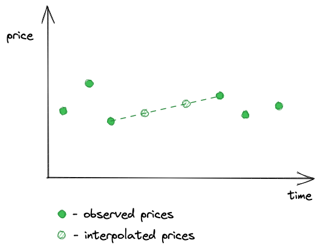
因此，读取观察意味着通过时间戳找到观察并插值缺失的观察，同时考虑到观察数组允许溢出（例如，最旧的观察可能在数组中排在最新的观察之后）。由于我们不按时间戳索引观察（以节省gas），我们需要使用二分搜索算法进行高效搜索。但并非总是如此。
让我们将其分解为更小的步骤，并从在Oracle中实现observe函数开始：
function observe(
Observation[65535] storage self,
uint32 time,
uint32[] memory secondsAgos,
int24 tick,
uint16 index,
uint16 cardinality
) internal view returns (int56[] memory tickCumulatives) {
tickCumulatives = new int56[](secondsAgos.length);
for (uint256 i = 0; i < secondsAgos.length; i++) {
tickCumulatives[i] = observeSingle(
self,
time,
secondsAgos[i],
tick,
index,
cardinality
);
}
}
该函数接收当前区块时间戳、我们想要获取价格的时间点列表（secondsAgo）、当前tick、观察索引和基数。
接下来看observeSingle函数：
function observeSingle(
Observation[65535] storage self,
uint32 time,
uint32 secondsAgo,
int24 tick,
uint16 index,
uint16 cardinality
) internal view returns (int56 tickCumulative) {
if (secondsAgo == 0) {
Observation memory last = self[index];
if (last.timestamp != time) last = transform(last, time, tick);
return last.tickCumulative;
}
...
}
当请求最新的观察时（0秒过去），我们可以立即返回它。如果它没有在当前区块中记录，我们将其转换以考虑当前区块和当前tick。
如果请求的是较旧的时间点，我们需要在切换到二分搜索算法之前进行几项检查：
-
如果请求的时间点是最后一个观察，我们可以返回最新观察的累积价格；
-
如果请求的时间点在最后一个观察之后，我们可以调用
transform来找到这个点的累积价格，已知最后观察到的价格和当前价格； -
如果请求的时间点在最后一个观察之前，我们必须使用二分搜索。
让我们直接看第三点：
function binarySearch(
Observation[65535] storage self,
uint32 time,
uint32 target,
uint16 index,
uint16 cardinality
)
private
view
returns (Observation memory beforeOrAt, Observation memory atOrAfter)
{
...
该函数接收当前区块时间戳（time）、请求的价格点时间戳（target），以及当前的观察索引和基数。它返回请求的时间点所在的两个观察之间的范围。
为了初始化二分搜索算法，我们设置边界：
uint256 l = (index + 1) % cardinality; // oldest observation
uint256 r = l + cardinality - 1; // newest observation
uint256 i;
回想一下，观察数组预计会溢出，这就是为什么我们在这里使用模运算符。
然后我们启动一个无限循环，在其中检查范围的中间点：如果它没有初始化（没有观察），我们继续下一个点：
while (true) {
i = (l + r) / 2;
beforeOrAt = self[i % cardinality];
if (!beforeOrAt.initialized) {
l = i + 1;
continue;
}
...
如果该点已初始化，我们将其称为我们希望请求的时间点所在范围的左边界。然后我们尝试找到右边界（atOrAfter）：
...
atOrAfter = self[(i + 1) % cardinality];
bool targetAtOrAfter = lte(time, beforeOrAt.timestamp, target);
if (targetAtOrAfter && lte(time, target, atOrAfter.timestamp))
break;
...
如果我们找到了边界，我们就返回它们。如果没有，我们继续搜索：
...
if (!targetAtOrAfter) r = i - 1;
else l = i + 1;
}
在找到请求的时间点所属的观察范围后，我们需要计算请求时间点的价格：
// function observeSingle() {
...
uint56 observationTimeDelta = atOrAfter.timestamp -
beforeOrAt.timestamp;
uint56 targetDelta = target - beforeOrAt.timestamp;
return
beforeOrAt.tickCumulative +
((atOrAfter.tickCumulative - beforeOrAt.tickCumulative) /
int56(observationTimeDelta)) *
int56(targetDelta);
...
这就像找到范围内的平均变化率，并将其乘以范围下限和我们需要的时间点之间经过的秒数一样简单。这就是我们之前讨论的插值。
我们在这里需要实现的最后一件事是Pool合约中的一个公共函数，用于读取和返回观察：
// src/UniswapV3Pool.sol
function observe(uint32[] calldata secondsAgos)
public
view
returns (int56[] memory tickCumulatives)
{
return
observations.observe(
_blockTimestamp(),
secondsAgos,
slot0.tick,
slot0.observationIndex,
slot0.observationCardinality
);
}
解释观察
现在让我们看看如何解释观察。
我们刚刚添加的observe函数返回一个累积价格数组，我们想知道如何将它们转换为实际价格。我将在observe函数的测试中演示这一点。
在测试中，我在不同方向和不同区块上进行了多次交换：
function testObserve() public {
...
pool.increaseObservationCardinalityNext(3);
vm.warp(2);
pool.swap(address(this), false, swapAmount, sqrtP(6000), extra);
vm.warp(7);
pool.swap(address(this), true, swapAmount2, sqrtP(4000), extra);
vm.warp(20);
pool.swap(address(this), false, swapAmount, sqrtP(6000), extra);
...
vm.warp是Foundry提供的一个作弊码：它前进到具有指定时间戳的区块。2、7、20 - 这些是区块时间戳。
第一次交换在时间戳为2的区块进行，第二次在时间戳为7的区块进行，第三次在时间戳为20的区块进行。然后我们可以读取观察：
...
secondsAgos = new uint32[](4);
secondsAgos[0] = 0;
secondsAgos[1] = 13;
secondsAgos[2] = 17;
secondsAgos[3] = 18;
int56[] memory tickCumulatives = pool.observe(secondsAgos);
assertEq(tickCumulatives[0], 1607059);
assertEq(tickCumulatives[1], 511146);
assertEq(tickCumulatives[2], 170370);
assertEq(tickCumulatives[3], 85176);
...
-
最早观察到的价格是0，这是池部署时设置的初始观察。然而，由于基数设置为3，我们进行了3次交换，它被最后一次观察覆盖了。
-
在第一次交换期间，观察到tick 85176，这是池的初始价格——回想一下，观察的是交换前的价格。因为第一个观察被覆盖了，所以这现在是最旧的观察。
-
下一个返回的累积价格是170370，即
85176 + 85194。前者是前一个累加器值，后者是第一次交换后在第二次交换期间观察到的价格。 -
下一个返回的累积价格是511146，即
(511146 - 170370) / (17 - 13) = 85194，这是第二次和第三次交换之间的累积价格。 -
最后，最近的观察是1607059，即
(1607059 - 511146) / (20 - 7) = 84301，这约等于4581 USDC/ETH，是第二次交换后在第三次交换期间观察到的价格。
这里有一个涉及插值的例子：请求的时间点不是交换的时间点：
secondsAgos = new uint32[](5);
secondsAgos[0] = 0;
secondsAgos[1] = 5;
secondsAgos[2] = 10;
secondsAgos[3] = 15;
secondsAgos[4] = 18;
tickCumulatives = pool.observe(secondsAgos);
assertEq(tickCumulatives[0], 1607059);
assertEq(tickCumulatives[1], 1185554);
assertEq(tickCumulatives[2], 764049);
assertEq(tickCumulatives[3], 340758);
assertEq(tickCumulatives[4], 85176);
这得到的价格是：4581.03、4581.03、4747.6和5008.91，这些是请求的区间内的平均价格。
以下是如何在Python中计算这些值：
vals = [1607059, 1185554, 764049, 340758, 85176] secs = [0, 5, 10, 15, 18] [1.0001**((vals[i] - vals[i+1]) / (secs[i+1] - secs[i])) for i in range(len(vals)-1)]
用户界面
在这个里程碑中，我们添加了从池子中移除流动性和收集累积费用的能力。因此，我们需要在用户界面中反映这些变化，以允许用户移除流动性。
获取头寸
为了让用户选择要移除多少流动性，我们首先需要从池子中获取用户的头寸。为了使这更容易，我们可以在Manager合约中添加一个辅助函数，该函数将返回用户在特定池子中的头寸：
function getPosition(GetPositionParams calldata params)
public
view
returns (
uint128 liquidity,
uint256 feeGrowthInside0LastX128,
uint256 feeGrowthInside1LastX128,
uint128 tokensOwed0,
uint128 tokensOwed1
)
{
IUniswapV3Pool pool = getPool(params.tokenA, params.tokenB, params.fee);
(
liquidity,
feeGrowthInside0LastX128,
feeGrowthInside1LastX128,
tokensOwed0,
tokensOwed1
) = pool.positions(
keccak256(
abi.encodePacked(
params.owner,
params.lowerTick,
params.upperTick
)
)
);
}
这将使我们在前端免于计算池子地址和头寸密钥。
然后，在用户输入头寸范围后，我们可以尝试获取头寸：
const getAvailableLiquidity = debounce((amount, isLower) => {
const lowerTick = priceToTick(isLower ? amount : lowerPrice);
const upperTick = priceToTick(isLower ? upperPrice : amount);
const params = {
tokenA: token0.address,
tokenB: token1.address,
fee: fee,
owner: account,
lowerTick: nearestUsableTick(lowerTick, feeToSpacing[fee]),
upperTick: nearestUsableTick(upperTick, feeToSpacing[fee]),
}
manager.getPosition(params)
.then(position => setAvailableAmount(position.liquidity.toString()))
.catch(err => console.error(err));
}, 500);
获取池子地址
由于我们需要在池子上调用burn和collect，我们仍然需要在前端计算池子的地址。回想一下，池子地址是使用CREATE2操作码计算的，这需要一个盐值和合约代码的哈希。幸运的是，Ether.js有getCreate2Address函数，允许在JavaScript中计算CREATE2：
const sortTokens = (tokenA, tokenB) => {
return tokenA.toLowerCase() < tokenB.toLowerCase ? [tokenA, tokenB] : [tokenB, tokenA];
}
const computePoolAddress = (factory, tokenA, tokenB, fee) => {
[tokenA, tokenB] = sortTokens(tokenA, tokenB);
return ethers.utils.getCreate2Address(
factory,
ethers.utils.keccak256(
ethers.utils.solidityPack(
['address', 'address', 'uint24'],
[tokenA, tokenB, fee]
)),
poolCodeHash
);
}
然而，池子的代码哈希必须硬编码，因为我们不想在前端存储其代码来计算哈希。所以，我们将使用Forge来获取哈希：
$ forge inspect UniswapV3Pool bytecode| xargs cast keccak
0x...
然后在JS常量中使用输出值：
const poolCodeHash = "0x9dc805423bd1664a6a73b31955de538c338bac1f5c61beb8f4635be5032076a2";
移除流动性
在获得流动性数量和池子地址后，我们准备调用burn：
const removeLiquidity = (e) => {
e.preventDefault();
if (!token0 || !token1) {
return;
}
setLoading(true);
const lowerTick = nearestUsableTick(priceToTick(lowerPrice), feeToSpacing[fee]);
const upperTick = nearestUsableTick(priceToTick(upperPrice), feeToSpacing[fee]);
pool.burn(lowerTick, upperTick, amount)
.then(tx => tx.wait())
.then(receipt => {
if (!receipt.events[0] || receipt.events[0].event !== "Burn") {
throw Error("Missing Burn event after burning!");
}
const amount0Burned = receipt.events[0].args.amount0;
const amount1Burned = receipt.events[0].args.amount1;
return pool.collect(account, lowerTick, upperTick, amount0Burned, amount1Burned)
})
.then(tx => tx.wait())
.then(() => toggle())
.catch(err => console.error(err));
}
如果燃烧成功，我们立即调用collect来收集在燃烧过程中释放的代币数量。
NFT 头寸
这是本书的点睛之笔。在这个里程碑中，我们将学习如何扩展 Uniswap 合约并将其集成到第三方协议中。这种可能性是核心合约只包含关键功能的直接结果，这允许将其集成到其他合约中，而无需向核心合约添加新功能。
Uniswap V3 的一个额外特性是将流动性头寸转换为 NFT 代币的能力。以下是这种代币的一个例子：
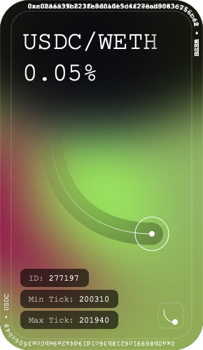
它显示了代币符号、池手续费、头寸 ID、下限和上限刻度、代币地址，以及提供头寸的曲线段。
你可以在这个 OpenSea 集合中查看所有 Uniswap V3 NFT 头寸。
在这个里程碑中，我们将添加流动性头寸的 NFT 代币化功能！
让我们开始吧！
你可以在这个 Github 分支中找到本章的完整代码。
这个里程碑对现有合约引入了许多代码更改。在这里你可以看到自上一个里程碑以来的所有变更
如果你有任何问题，欢迎在本里程碑的 GitHub 讨论区中提出！
ERC721 概述
让我们从概述 EIP-721 开始，这是定义 NFT 合约的标准。
ERC721 是 ERC20 的一个变体。它们之间的主要区别在于 ERC721 代币是非同质化的，也就是说：一个代币与另一个代币并不完全相同。为了区分 ERC721 代币，每个代币都有一个唯一的 ID，这几乎总是代币铸造时的计数器。ERC721 代币还有一个扩展的所有权概念：每个代币的所有者都被跟踪并存储在合约中。这意味着只有由代币 ID 标识的独特代币可以被转移（或批准转移）。
Uniswap V3 流动性头寸和 NFT 的共同点就是这种非同质性：NFT 和流动性头寸都是不可互换的，并且由唯一的 ID 标识。正是这种相似性使我们能够合并这两个概念。
ERC20 和 ERC721 之间最大的区别是后者的 tokenURI 函数。作为 ERC721 智能合约实现的 NFT 代币，有链接到存储在外部（而不是在区块链上）的资产。为了将代币 ID 链接到存储在区块链外部的图像（或声音，或其他任何东西），ERC721 定义了 tokenURI 函数。该函数预期返回一个指向定义 NFT 代币元数据的 JSON 文件的链接，例如：
{
"name": "Thor's hammer",
"description": "Mjölnir, the legendary hammer of the Norse god of thunder.",
"image": "https://game.example/item-id-8u5h2m.png",
"strength": 20
}
这个例子取自 OpenZeppelin 上的 ERC721 documentation on OpenZeppelin
这样的 JSON 文件定义了代币的名称、集合的描述、代币图像的链接以及代币的属性。
另外，我们也可以将 JSON 元数据和代币图像存储在链上。这当然非常昂贵（在链上保存数据是以太坊中最昂贵的操作），但如果我们存储模板，我们可以使其更便宜。同一集合中的所有代币都有相似的元数据（大部分相同，但每个代币的图像链接和属性不同）和视觉效果。对于后者，我们可以使用 SVG，这是一种类似 HTML 的格式，而 HTML 是一种很好的模板语言。
当在链上存储 JSON 元数据和 SVG 时，tokenURI 函数不是返回链接，而是直接返回 JSON 元数据，使用数据 URI 方案 对其进行编码。SVG 图像也会被内联，无需进行外部请求来下载代币元数据和图像。
NFT 管理合约
我们不会在池合约中添加 NFT 相关功能——我们需要一个单独的合约来合并 NFT 和流动性头寸。回想一下，在我们实现的过程中，我们构建了 UniswapV3Manager 合约以便于与池合约交互（使一些计算更简单，并启用多池交换）。这个合约很好地展示了如何扩展核心 Uniswap 合约。我们将进一步推进这个想法。
我们需要一个管理合约，它将实现 ERC721 标准并管理流动性头寸。该合约将具有标准的 NFT 功能（铸造、销毁、转移、余额和所有权跟踪等），并允许向池提供和移除流动性。合约需要成为池中流动性的实际所有者，因为我们不希望用户在不铸造代币的情况下添加流动性，也不希望在不销毁代币的情况下移除全部流动性。我们希望每个流动性头寸都与一个 NFT 代币相关联，并且我们希望它们保持同步。
让我们看看新合约中将会有哪些函数：
-
由于它将是一个 NFT 合约，它将包含所有 ERC721 函数，包括
tokenURI，该函数返回 NFT 代币图像的 URI； -
mint和burn用于同时铸造和销毁流动性和 NFT 代币； -
addLiquidity和removeLiquidity用于在现有头寸中添加和移除流动性； -
collect，用于在移除流动性后收集代币。
好的，让我们开始编码。
最小合约
由于我们不想从头实现 ERC721 标准，我们将使用一个库。我们的依赖项中已经有 Solmate，所以我们将使用它的 ERC721 实现。
使用 OpenZeppelin 的 ERC721 实现 也是一个选择，但我更喜欢 Solmate 的气体优化合约。
这将是 NFT 管理合约的最基本实现：
contract UniswapV3NFTManager is ERC721 {
address public immutable factory;
constructor(address factoryAddress)
ERC721("UniswapV3 NFT Positions", "UNIV3")
{
factory = factoryAddress;
}
function tokenURI(uint256 tokenId)
public
view
override
returns (string memory)
{
return "";
}
}
tokenURI 将返回一个空字符串，直到我们实现元数据和 SVG 渲染器。我们添加了这个存根，以便在我们处理合约其余部分时 Solidity 编译器不会失败（Solmate ERC721 合约中的 tokenURI 函数是虚拟的，所以我们必须实现它）。
铸造
如我们之前讨论的，铸造将涉及两个操作：向池中添加流动性和铸造 NFT。
为了保持池流动性头寸和 NFT 之间的链接，我们需要一个映射和一个结构：
struct TokenPosition {
address pool;
int24 lowerTick;
int24 upperTick;
}
mapping(uint256 => TokenPosition) public positions;
要找到一个头寸，我们需要：
-
池地址；
-
所有者地址；
-
头寸的边界（下限和上限刻度）。
由于 NFT 管理合约将成为通过它创建的所有头寸的所有者，我们不需要存储头寸的所有者地址，我们只需存储其余数据。positions 映射中的键是代币 ID；该映射将 NFT ID 链接到查找流动性头寸所需的头寸数据。
让我们来实现铸造：
struct MintParams {
address recipient;
address tokenA;
address tokenB;
uint24 fee;
int24 lowerTick;
int24 upperTick;
uint256 amount0Desired;
uint256 amount1Desired;
uint256 amount0Min;
uint256 amount1Min;
}
function mint(MintParams calldata params) public returns (uint256 tokenId) {
...
}
铸造参数与 UniswapV3Manager 的参数相同，但增加了 recipient，这将允许为另一个地址铸造 NFT。
在 mint 函数中，我们首先向池中添加流动性：
IUniswapV3Pool pool = getPool(params.tokenA, params.tokenB, params.fee);
(uint128 liquidity, uint256 amount0, uint256 amount1) = _addLiquidity(
AddLiquidityInternalParams({
pool: pool,
lowerTick: params.lowerTick,
upperTick: params.upperTick,
amount0Desired: params.amount0Desired,
amount1Desired: params.amount1Desired,
amount0Min: params.amount0Min,
amount1Min: params.amount1Min
})
);
_addLiquidity 与 UniswapV3Manager 合约中 mint 函数的主体内容相同：它将刻度转换为 ，计算流动性数量，并调用 pool.mint()。
接下来，我们铸造一个 NFT：
tokenId = nextTokenId++;
_mint(params.recipient, tokenId);
totalSupply++;
tokenId 被设置为当前的 nextTokenId，然后后者递增。_mint 函数由 Solmate 的 ERC721 合约提供。在铸造新代币后，我们更新 totalSupply。
最后，我们需要存储有关新代币和新头寸的信息：
TokenPosition memory tokenPosition = TokenPosition({
pool: address(pool),
lowerTick: params.lowerTick,
upperTick: params.upperTick
});
positions[tokenId] = tokenPosition;
这将在后续帮助我们通过代币 ID 找到流动性头寸。
添加流动性
接下来，我们将实现一个函数，用于向现有头寸添加流动性，适用于我们想要在已有一些流动性的头寸中增加更多流动性的情况。在这种情况下，我们不想铸造 NFT，而只是增加现有头寸中的流动性数量。为此，我们只需要提供代币 ID 和代币数量：
function addLiquidity(AddLiquidityParams calldata params)
public
returns (
uint128 liquidity,
uint256 amount0,
uint256 amount1
)
{
TokenPosition memory tokenPosition = positions[params.tokenId];
if (tokenPosition.pool == address(0x00)) revert WrongToken();
(liquidity, amount0, amount1) = _addLiquidity(
AddLiquidityInternalParams({
pool: IUniswapV3Pool(tokenPosition.pool),
lowerTick: tokenPosition.lowerTick,
upperTick: tokenPosition.upperTick,
amount0Desired: params.amount0Desired,
amount1Desired: params.amount1Desired,
amount0Min: params.amount0Min,
amount1Min: params.amount1Min
})
);
}
这个函数确保存在一个已有的token，并使用现有position的参数调用pool.mint()。
移除流动性
回想一下，在UniswapV3Manager合约中，我们没有实现burn函数，因为我们希望用户成为流动性position的所有者。现在，我们希望NFT管理器成为所有者。我们可以在其中实现流动性销毁：
struct RemoveLiquidityParams {
uint256 tokenId;
uint128 liquidity;
}
function removeLiquidity(RemoveLiquidityParams memory params)
public
isApprovedOrOwner(params.tokenId)
returns (uint256 amount0, uint256 amount1)
{
TokenPosition memory tokenPosition = positions[params.tokenId];
if (tokenPosition.pool == address(0x00)) revert WrongToken();
IUniswapV3Pool pool = IUniswapV3Pool(tokenPosition.pool);
(uint128 availableLiquidity, , , , ) = pool.positions(
poolPositionKey(tokenPosition)
);
if (params.liquidity > availableLiquidity) revert NotEnoughLiquidity();
(amount0, amount1) = pool.burn(
tokenPosition.lowerTick,
tokenPosition.upperTick,
params.liquidity
);
}
我们再次检查提供的token ID是否有效。我们还需要确保position有足够的流动性可以销毁。
收集代币
NFT管理器合约也可以在销毁流动性后收集代币。注意，收集的代币会被发送给msg.sender，因为合约是代表调用者管理流动性的：
struct CollectParams {
uint256 tokenId;
uint128 amount0;
uint128 amount1;
}
function collect(CollectParams memory params)
public
isApprovedOrOwner(params.tokenId)
returns (uint128 amount0, uint128 amount1)
{
TokenPosition memory tokenPosition = positions[params.tokenId];
if (tokenPosition.pool == address(0x00)) revert WrongToken();
IUniswapV3Pool pool = IUniswapV3Pool(tokenPosition.pool);
(amount0, amount1) = pool.collect(
msg.sender,
tokenPosition.lowerTick,
tokenPosition.upperTick,
params.amount0,
params.amount1
);
}
销毁
最后是销毁。与合约的其他函数不同，这个函数不会对池子做任何操作：它只是销毁一个NFT。要销毁NFT，底层position必须为空，并且代币必须已被收集。因此，如果我们想要销毁NFT，我们需要：
-
调用
removeLiquidity并移除整个position的流动性； -
调用
collect来收集销毁position后的代币； -
调用
burn来销毁token。
function burn(uint256 tokenId) public isApprovedOrOwner(tokenId) {
TokenPosition memory tokenPosition = positions[tokenId];
if (tokenPosition.pool == address(0x00)) revert WrongToken();
IUniswapV3Pool pool = IUniswapV3Pool(tokenPosition.pool);
(uint128 liquidity, , , uint128 tokensOwed0, uint128 tokensOwed1) = pool
.positions(poolPositionKey(tokenPosition));
if (liquidity > 0 || tokensOwed0 > 0 || tokensOwed1 > 0)
revert PositionNotCleared();
delete positions[tokenId];
_burn(tokenId);
totalSupply--;
}
就是这样！
NFT渲染器
现在我们需要构建一个NFT渲染器：这是一个库，用于处理NFT管理器合约中的tokenURI调用。它将为每个铸造的token渲染JSON元数据和SVG。正如我们之前讨论的，我们将使用数据URI格式，这需要base64编码——这意味着我们需要在Solidity中使用base64编码器。但首先，让我们看看我们的token会是什么样子。
SVG模板
我构建了这个简化版的Uniswap V3 NFT：
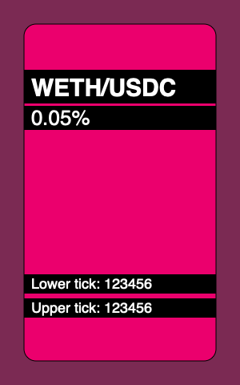
以下是它的代码：
<svg xmlns="http://www.w3.org/2000/svg" viewBox="0 0 300 480">
<style>
.tokens {
font: bold 30px sans-serif;
}
.fee {
font: normal 26px sans-serif;
}
.tick {
font: normal 18px sans-serif;
}
</style>
<rect width="300" height="480" fill="hsl(330,40%,40%)" />
<rect x="30" y="30" width="240" height="420" rx="15" ry="15" fill="hsl(330,90%,50%)" stroke="#000" />
<rect x="30" y="87" width="240" height="42" />
<text x="39" y="120" class="tokens" fill="#fff">
WETH/USDC
</text>
<rect x="30" y="132" width="240" height="30" />
<text x="39" y="120" dy="36" class="fee" fill="#fff">
0.05%
</text>
<rect x="30" y="342" width="240" height="24" />
<text x="39" y="360" class="tick" fill="#fff">
Lower tick: 123456
</text>
<rect x="30" y="372" width="240" height="24" />
<text x="39" y="360" dy="30" class="tick" fill="#fff">
Upper tick: 123456
</text>
</svg>
这是一个简单的SVG模板，我们将创建一个Solidity合约来填充这个模板中的字段，并在tokenURI中返回它。每个token将唯一填充的字段包括：
-
背景颜色，在前两个
rect中设置；色相分量（模板中为330）将对每个token唯一； -
position所属池子的token名称（模板中为WETH/USDC）；
-
池子的费用（0.05%）；
-
position边界的tick值（123456）。
以下是我们的合约能够生成的NFT示例：
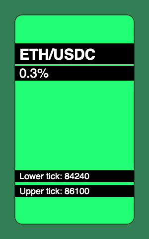 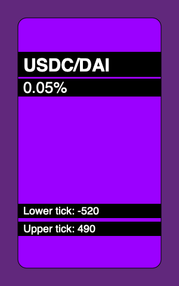
依赖
Solidity没有提供原生的Base64编码工具，所以我们将使用第三方工具。具体来说，我们将使用OpenZeppelin的Base64库。
Solidity在字符串操作方面的支持也很薄弱。例如，没有直接的方法将整数转换为字符串——但我们需要这个功能来在SVG模板中渲染池子费用和position的tick。我们将使用OpenZeppelin的Strings库来实现这一点。
结果格式
渲染器生成的数据将具有以下格式：
data:application/json;base64,BASE64_ENCODED_JSON
JSON将如下所示：
{
"name": "Uniswap V3 Position",
"description": "USDC/DAI 0.05%, Lower tick: -520, Upper text: 490",
"image": "BASE64_ENCODED_SVG"
}
图像将是上述SVG模板，填充了position数据并使用Base64编码。
实现渲染器
我们将在一个单独的库合约中实现渲染器，以避免NFT管理器合约变得过于复杂：
library NFTRenderer {
struct RenderParams {
address pool;
address owner;
int24 lowerTick;
int24 upperTick;
uint24 fee;
}
function render(RenderParams memory params) {
...
}
}
在render函数中，我们首先渲染SVG，然后是JSON。为了保持代码的清晰度，我们将每个步骤分解为更小的步骤。
我们从获取token符号开始：
function render(RenderParams memory params) {
IUniswapV3Pool pool = IUniswapV3Pool(params.pool);
IERC20 token0 = IERC20(pool.token0());
IERC20 token1 = IERC20(pool.token1());
string memory symbol0 = token0.symbol();
string memory symbol1 = token1.symbol();
...
SVG渲染
然后我们可以渲染SVG模板：
string memory image = string.concat(
"<svg xmlns='http://www.w3.org/2000/svg' viewBox='0 0 300 480'>",
"<style>.tokens { font: bold 30px sans-serif; }",
".fee { font: normal 26px sans-serif; }",
".tick { font: normal 18px sans-serif; }</style>",
renderBackground(params.owner, params.lowerTick, params.upperTick),
renderTop(symbol0, symbol1, params.fee),
renderBottom(params.lowerTick, params.upperTick),
"</svg>"
);
模板被分解为多个步骤：
-
首先是头部，包括CSS样式；
-
然后渲染背景；
-
接着渲染顶部position信息（token符号和费用）；
-
最后，渲染底部信息（position的tick）。
背景只是两个rect。要渲染它们，我们需要找到这个token的唯一色相，然后将所有部分连接在一起：
function renderBackground(
address owner,
int24 lowerTick,
int24 upperTick
) internal pure returns (string memory background) {
bytes32 key = keccak256(abi.encodePacked(owner, lowerTick, upperTick));
uint256 hue = uint256(key) % 360;
background = string.concat(
'<rect width="300" height="480" fill="hsl(',
Strings.toString(hue),
',40%,40%)"/>',
'<rect x="30" y="30" width="240" height="420" rx="15" ry="15" fill="hsl(',
Strings.toString(hue),
',100%,50%)" stroke="#000"/>'
);
}
顶部模板渲染token符号和池子费用：
function renderTop(
string memory symbol0,
string memory symbol1,
uint24 fee
) internal pure returns (string memory top) {
top = string.concat(
'<rect x="30" y="87" width="240" height="42"/>',
'<text x="39" y="120" class="tokens" fill="#fff">',
symbol0,
"/",
symbol1,
"</text>"
'<rect x="30" y="132" width="240" height="30"/>',
'<text x="39" y="120" dy="36" class="fee" fill="#fff">',
feeToText(fee),
"</text>"
);
}
费用被渲染为带有小数部分的数字。由于所有可能的费用都是预先知道的，我们不需要将整数转换为小数，可以简单地硬编码这些值：
function feeToText(uint256 fee)
internal
pure
returns (string memory feeString)
{
if (fee == 500) {
feeString = "0.05%";
} else if (fee == 3000) {
feeString = "0.3%";
}
}
在底部部分，我们渲染position的tick：
function renderBottom(int24 lowerTick, int24 upperTick)
internal
pure
returns (string memory bottom)
{
bottom = string.concat(
'<rect x="30" y="342" width="240" height="24"/>',
'<text x="39" y="360" class="tick" fill="#fff">Lower tick: ',
tickToText(lowerTick),
"</text>",
'<rect x="30" y="372" width="240" height="24"/>',
'<text x="39" y="360" dy="30" class="tick" fill="#fff">Upper tick: ',
tickToText(upperTick),
"</text>"
);
}
由于tick可以是正数或负数，我们需要正确地渲染它们（带或不带负号）：
function tickToText(int24 tick)
internal
pure
returns (string memory tickString)
{
tickString = string.concat(
tick < 0 ? "-" : "",
tick < 0
? Strings.toString(uint256(uint24(-tick)))
: Strings.toString(uint256(uint24(tick)))
);
}
JSON渲染
现在，让我们回到render函数并渲染JSON。首先，我们需要渲染token的描述：
function render(RenderParams memory params) {
... SVG rendering ...
string memory description = renderDescription(
symbol0,
symbol1,
params.fee,
params.lowerTick,
params.upperTick
);
...
token描述是一个文本字符串，包含我们在token的SVG中渲染的所有相同信息：
function renderDescription(
string memory symbol0,
string memory symbol1,
uint24 fee,
int24 lowerTick,
int24 upperTick
) internal pure returns (string memory description) {
description = string.concat(
symbol0,
"/",
symbol1,
" ",
feeToText(fee),
", Lower tick: ",
tickToText(lowerTick),
", Upper text: ",
tickToText(upperTick)
);
}
我们现在可以组装JSON元数据：
function render(RenderParams memory params) {
string memory image = ...SVG rendering...
string memory description = ...description rendering...
string memory json = string.concat(
'{"name":"Uniswap V3 Position",',
'"description":"',
description,
'",',
'"image":"data:image/svg+xml;base64,',
Base64.encode(bytes(image)),
'"}'
);
最后，我们可以返回结果：
return
string.concat(
"data:application/json;base64,",
Base64.encode(bytes(json))
);
填补tokenURI中的空白
现在我们准备回到NFT管理器合约中的tokenURI函数，并添加实际的渲染：
function tokenURI(uint256 tokenId)
public
view
override
returns (string memory)
{
TokenPosition memory tokenPosition = positions[tokenId];
if (tokenPosition.pool == address(0x00)) revert WrongToken();
IUniswapV3Pool pool = IUniswapV3Pool(tokenPosition.pool);
return
NFTRenderer.render(
NFTRenderer.RenderParams({
pool: tokenPosition.pool,
owner: address(this),
lowerTick: tokenPosition.lowerTick,
upperTick: tokenPosition.upperTick,
fee: pool.fee()
})
);
}
Gas成本
尽管链上存储数据有诸多优点，但它也有一个巨大的缺点：合约部署变得非常昂贵。在部署合约时，你需要为合约的大小付费，而所有的字符串和模板都会显著增加gas消耗。这种情况在SVG越复杂时会变得更糟：形状、CSS样式、动画等越多，成本就越高。
请记住，我们上面实现的NFT渲染器并未进行gas优化：你可以看到重复的rect和text标签字符串，这些可以被提取到内部函数中。我为了合约的可读性牺牲了gas效率。在实际的链上存储所有数据的NFT项目中，由于大量的gas成本优化，代码可读性通常非常差。
测试
我最后想要关注的是如何测试NFT图像。跟踪NFT图像的所有变化非常重要，以确保没有任何变化会破坏渲染。为此，我们需要一种方法来测试tokenURI的输出及其不同变体（我们甚至可以预先渲染整个集合，并进行测试以确保在开发过程中没有图像被破坏）。
为了测试tokenURI的输出，我添加了这个自定义断言：
assertTokenURI(
nft.tokenURI(tokenId0),
"tokenuri0",
"invalid token URI"
);
第一个参数是实际输出，第二个参数是存储预期输出的文件名。这个断言加载文件的内容并将其与实际输出进行比较：
function assertTokenURI(
string memory actual,
string memory expectedFixture,
string memory errMessage
) internal {
string memory expected = vm.readFile(
string.concat("./test/fixtures/", expectedFixture)
);
assertEq(actual, string(expected), errMessage);
}
得益于forge-std库提供的vm.readFile()作弊码，我们可以在Solidity中实现这一点。forge-std是Forge附带的一个辅助库。这不仅简单方便，而且还很安全：我们可以配置文件系统权限，只允许执行被许可的文件操作。具体来说，要使上述测试正常工作，我们需要在foundry.toml中添加这个fs_permissions规则：
fs_permissions = [{access='read',path='.'}]
以下是如何从tokenURI固定数据中读取SVG：
$ cat test/fixtures/tokenuri0 \
| awk -F ',' '{print $2}' \
| base64 -d - \
| jq -r .image \
| awk -F ',' '{print $2}' \
| base64 -d - > nft.svg \
&& open nft.svg
请确保你已安装jq工具。